Hands-on: Transfer Learning for Multiclass Steel Defect Classification¶
Local Environment Setup¶
If you are running this notebook locally, first create a virtual environment and install the required libraries.
python -m venv workshop-env
source workshop-env/bin/activate
python -m pip install --upgrade pip
pip install torch torchvision torchaudio pandas matplotlib scikit-learn seaborn torchinfo
If you are using the LUMI notebook environment, simply select the Python 3 kernel and run the cells.
import os
import sys
print(sys.executable)
/usr/bin/python3
import os
import numpy as np
import pandas as pd
import matplotlib.pyplot as plt
import seaborn as sns
import time
import torch
import torch.nn as nn
import torch.optim as optim
from torch.utils.data import DataLoader
import torchvision.transforms as transforms
from torchvision import datasets, models
from torchinfo import summary
from sklearn.metrics import classification_report, confusion_matrix
from sklearn.model_selection import train_test_split
# Set device configuration
device = torch.device('cuda' if torch.cuda.is_available() else 'cpu')
print(f"Using device: {device}")
#read information about each library. help(models), models?, print(models.__doc__), models(shift+tab)
Using device: cuda
Dataset Setup: Severstal Defect Dataset¶
We use the Severstal: Steel Defect Detection dataset, containing 200 images each of 4 defect types:
Scratches: Surface scratches and abrasions
Inclusions: Foreign particles embedded in steel
Patches: Localized surface irregularities
Rolls Marks: Marks from the rolling process
Directory structure:
single_class_sampled/
├── Scratches/
├── Inclusions/
├── Patches/
└── Rolls Marks/
# Define path to dataset
dataset_path = r"/projappl/project_465002387/DEEP_Inspection_Material_Science/data/single_class_sampled"
if not os.path.exists(dataset_path):
print(f"Error: {dataset_path} folder not found!")
else:
print(f"Dataset path: {os.path.abspath(dataset_path)}")
Dataset path: /projappl/project_465002387/DEEP_Inspection_Material_Science/data/single_class_sampled
# Get sorted class names
class_names = sorted(os.listdir(dataset_path))
print(f"Classes found: {class_names}")
print(f"Number of classes: {len(class_names)}")
# Count images per class
for class_name in class_names:
class_path = os.path.join(dataset_path, class_name)
num_images = len([f for f in os.listdir(class_path) if f.endswith(('.jpg', '.jpeg', '.png'))])
print(f"{class_name}: {num_images} images")
Classes found: ['Inclusions', 'Patches', 'Rolls Marks', 'Scratches']
Number of classes: 4
Inclusions: 195 images
Patches: 500 images
Rolls Marks: 500 images
Scratches: 500 images
# Load full dataset
BATCH_SIZE = 32
IMAGE_SIZE = 255
# PyTorch transforms (normalize with ImageNet stats for transfer learning)
base_transform = transforms.Compose([
transforms.Resize((IMAGE_SIZE, IMAGE_SIZE)),
transforms.ToTensor(),
transforms.Normalize(mean=[0.485, 0.456, 0.406],
std=[0.229, 0.224, 0.225])
])
full_dataset = datasets.ImageFolder(root=dataset_path,
transform=base_transform)
# Extract all images and labels as arrays for splitting
all_indices = list(range(len(full_dataset)))
all_labels = [full_dataset.targets[i] for i in all_indices]
# First split: 70% train, 30% holdout (val + test)
train_idx, holdout_idx = train_test_split(
all_indices, test_size=0.3, random_state=0, stratify=all_labels
)
holdout_labels = [all_labels[i] for i in holdout_idx]
# Second split: 15% val, 15% test
val_idx, test_idx = train_test_split(
holdout_idx, test_size=0.5, random_state=0, stratify=holdout_labels
)
# Subset samplers
from torch.utils.data import Subset
train_dataset = Subset(full_dataset, train_idx)
val_dataset = Subset(full_dataset, val_idx)
test_dataset = Subset(full_dataset, test_idx)
train_loader = DataLoader(train_dataset, batch_size=BATCH_SIZE, shuffle=True, num_workers=0)
val_loader = DataLoader(val_dataset, batch_size=BATCH_SIZE, shuffle=False, num_workers=0)
test_loader = DataLoader(test_dataset, batch_size=BATCH_SIZE, shuffle=False, num_workers=0)
print(f"Total images: {len(full_dataset)}")
print(f"Training samples: {len(train_dataset)} ({len(train_dataset)/len(full_dataset)*100:.1f}%)")
print(f"Validation samples: {len(val_dataset)} ({len(val_dataset)/len(full_dataset)*100:.1f}%)")
print(f"Test samples: {len(test_dataset)} ({len(test_dataset)/len(full_dataset)*100:.1f}%)")
Total images: 1695
Training samples: 1186 (70.0%)
Validation samples: 254 (15.0%)
Test samples: 255 (15.0%)
# Visualize sample images from training set
# (un-normalize for display)
inv_normalize = transforms.Normalize(
mean=[-0.485/0.229, -0.456/0.224, -0.406/0.225],
std=[1/0.229, 1/0.224, 1/0.225]
)
plt.figure(figsize=(10, 8))
images_batch, labels_batch = next(iter(train_loader))
for i in range(min(15, len(images_batch))):
ax = plt.subplot(3, 5, i + 1)
img = inv_normalize(images_batch[i]).permute(1, 2, 0).numpy()
img = np.clip(img, 0, 1)
plt.imshow(img)
plt.title(class_names[labels_batch[i].item()], fontsize=14)
plt.axis('off')
plt.tight_layout()
plt.show()
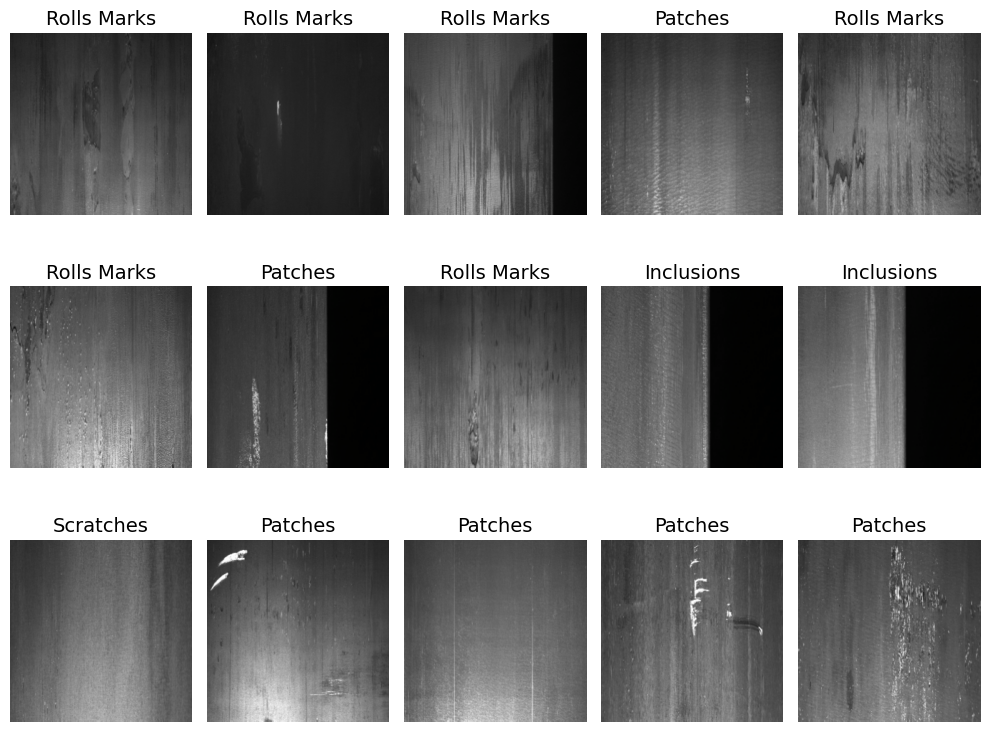
Data Augmentation¶
augment_transform = transforms.Compose([
transforms.Resize((IMAGE_SIZE, IMAGE_SIZE)),
transforms.RandomHorizontalFlip(p=0.5),
transforms.RandomVerticalFlip(p=0.5),
transforms.RandomRotation(degrees=30),
transforms.RandomAffine(degrees=0, translate=(0.08, 0.08), scale=(0.9, 1.1)),
transforms.ColorJitter(brightness=0.25, contrast=0.25),
transforms.RandomApply([transforms.GaussianBlur(kernel_size=3)], p=0.2),
transforms.ToTensor(),
transforms.RandomErasing(p=0.20, scale=(0.02, 0.10)),
transforms.Normalize(mean=[0.485, 0.456, 0.406],
std=[0.229, 0.224, 0.225]),
])
from PIL import Image
import matplotlib.pyplot as plt
sample_dataset_index = train_dataset.indices[0]
sample_path, sample_label = full_dataset.samples[sample_dataset_index]
pil_img = Image.open(sample_path).convert("RGB")
inv_normalize = transforms.Normalize(
mean=[-0.485 / 0.229, -0.456 / 0.224, -0.406 / 0.225],
std=[1 / 0.229, 1 / 0.224, 1 / 0.225],
)
fig, axes = plt.subplots(3, 3, figsize=(10, 8))
axes = axes.flatten()
images = [pil_img] + [augment_transform(pil_img) for _ in range(8)]
titles = [f"Original\n({class_names[sample_label]})"] + [f"Augmented {i}" for i in range(1, 9)]
for ax, image, title in zip(axes, images, titles):
if isinstance(image, torch.Tensor):
image = inv_normalize(image).permute(1, 2, 0).numpy()
image = np.clip(image, 0, 1)
ax.imshow(image)
ax.set_title(title)
ax.axis("off")
plt.tight_layout()
plt.show()
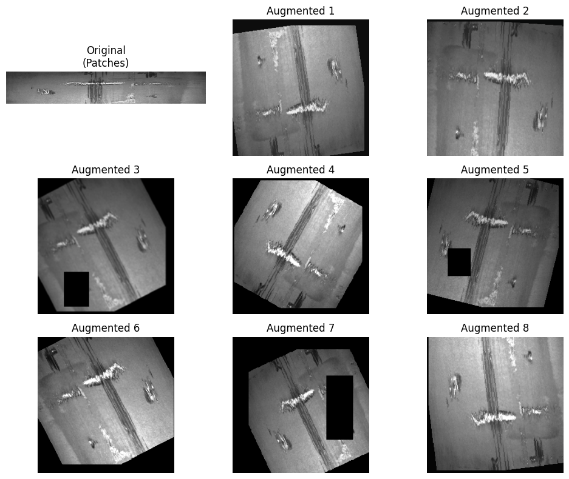
# --- Apply augmentation to the training dataset -----
from torch.utils.data import Subset, ConcatDataset
def augment_dataset(dataset, multiplier):
# Recover the original ImageFolder root and this subset's indices
root = dataset.dataset.root
indices = dataset.indices
# Augmented "view" of the same folder, same samples, new transform
augmented_base = datasets.ImageFolder(root=root, transform=augment_transform)
augmented_subset = Subset(augmented_base, indices)
return ConcatDataset([augmented_subset] * multiplier)
# Reassign the training loader (val/test loaders unchanged)
AUG_MULTIPLIER = 4
train_dataset2 = augment_dataset(train_dataset, multiplier=AUG_MULTIPLIER)
train_loader = DataLoader(train_dataset2, batch_size=BATCH_SIZE, shuffle=True, num_workers=0)
print(f"Training samples: {len(train_dataset2)} ({AUG_MULTIPLIER}x, on-the-fly augmentation)")
print(f"Validation samples: {len(val_dataset)} ")
print(f"Test samples: {len(test_dataset)} ")
Training samples: 4744 (4x, on-the-fly augmentation)
Validation samples: 254
Test samples: 255
Transfer Learning Using the VGG16 for Multiclass Steel Defect Classification¶
vgg16_backbone = models.vgg16(weights=models.VGG16_Weights.IMAGENET1K_V1)
summary(
vgg16_backbone,
input_size=(1,3,224,224),
depth=10,
col_names=["input_size", "output_size", "kernel_size", "num_params"])
============================================================================================================================================
Layer (type:depth-idx) Input Shape Output Shape Kernel Shape Param #
============================================================================================================================================
VGG [1, 3, 224, 224] [1, 1000] -- --
├─Sequential: 1-1 [1, 3, 224, 224] [1, 512, 7, 7] -- --
│ └─Conv2d: 2-1 [1, 3, 224, 224] [1, 64, 224, 224] [3, 3] 1,792
│ └─ReLU: 2-2 [1, 64, 224, 224] [1, 64, 224, 224] -- --
│ └─Conv2d: 2-3 [1, 64, 224, 224] [1, 64, 224, 224] [3, 3] 36,928
│ └─ReLU: 2-4 [1, 64, 224, 224] [1, 64, 224, 224] -- --
│ └─MaxPool2d: 2-5 [1, 64, 224, 224] [1, 64, 112, 112] 2 --
│ └─Conv2d: 2-6 [1, 64, 112, 112] [1, 128, 112, 112] [3, 3] 73,856
│ └─ReLU: 2-7 [1, 128, 112, 112] [1, 128, 112, 112] -- --
│ └─Conv2d: 2-8 [1, 128, 112, 112] [1, 128, 112, 112] [3, 3] 147,584
│ └─ReLU: 2-9 [1, 128, 112, 112] [1, 128, 112, 112] -- --
│ └─MaxPool2d: 2-10 [1, 128, 112, 112] [1, 128, 56, 56] 2 --
│ └─Conv2d: 2-11 [1, 128, 56, 56] [1, 256, 56, 56] [3, 3] 295,168
│ └─ReLU: 2-12 [1, 256, 56, 56] [1, 256, 56, 56] -- --
│ └─Conv2d: 2-13 [1, 256, 56, 56] [1, 256, 56, 56] [3, 3] 590,080
│ └─ReLU: 2-14 [1, 256, 56, 56] [1, 256, 56, 56] -- --
│ └─Conv2d: 2-15 [1, 256, 56, 56] [1, 256, 56, 56] [3, 3] 590,080
│ └─ReLU: 2-16 [1, 256, 56, 56] [1, 256, 56, 56] -- --
│ └─MaxPool2d: 2-17 [1, 256, 56, 56] [1, 256, 28, 28] 2 --
│ └─Conv2d: 2-18 [1, 256, 28, 28] [1, 512, 28, 28] [3, 3] 1,180,160
│ └─ReLU: 2-19 [1, 512, 28, 28] [1, 512, 28, 28] -- --
│ └─Conv2d: 2-20 [1, 512, 28, 28] [1, 512, 28, 28] [3, 3] 2,359,808
│ └─ReLU: 2-21 [1, 512, 28, 28] [1, 512, 28, 28] -- --
│ └─Conv2d: 2-22 [1, 512, 28, 28] [1, 512, 28, 28] [3, 3] 2,359,808
│ └─ReLU: 2-23 [1, 512, 28, 28] [1, 512, 28, 28] -- --
│ └─MaxPool2d: 2-24 [1, 512, 28, 28] [1, 512, 14, 14] 2 --
│ └─Conv2d: 2-25 [1, 512, 14, 14] [1, 512, 14, 14] [3, 3] 2,359,808
│ └─ReLU: 2-26 [1, 512, 14, 14] [1, 512, 14, 14] -- --
│ └─Conv2d: 2-27 [1, 512, 14, 14] [1, 512, 14, 14] [3, 3] 2,359,808
│ └─ReLU: 2-28 [1, 512, 14, 14] [1, 512, 14, 14] -- --
│ └─Conv2d: 2-29 [1, 512, 14, 14] [1, 512, 14, 14] [3, 3] 2,359,808
│ └─ReLU: 2-30 [1, 512, 14, 14] [1, 512, 14, 14] -- --
│ └─MaxPool2d: 2-31 [1, 512, 14, 14] [1, 512, 7, 7] 2 --
├─AdaptiveAvgPool2d: 1-2 [1, 512, 7, 7] [1, 512, 7, 7] -- --
├─Sequential: 1-3 [1, 25088] [1, 1000] -- --
│ └─Linear: 2-32 [1, 25088] [1, 4096] -- 102,764,544
│ └─ReLU: 2-33 [1, 4096] [1, 4096] -- --
│ └─Dropout: 2-34 [1, 4096] [1, 4096] -- --
│ └─Linear: 2-35 [1, 4096] [1, 4096] -- 16,781,312
│ └─ReLU: 2-36 [1, 4096] [1, 4096] -- --
│ └─Dropout: 2-37 [1, 4096] [1, 4096] -- --
│ └─Linear: 2-38 [1, 4096] [1, 1000] -- 4,097,000
============================================================================================================================================
Total params: 138,357,544
Trainable params: 138,357,544
Non-trainable params: 0
Total mult-adds (Units.GIGABYTES): 15.48
============================================================================================================================================
Input size (MB): 0.60
Forward/backward pass size (MB): 108.45
Params size (MB): 553.43
Estimated Total Size (MB): 662.49
============================================================================================================================================
class VGG16_Model(nn.Module):
def __init__(self, num_classes):
super(VGG16_Model, self).__init__()
# Load pretrained VGG16
self.vgg16 = models.vgg16(
weights=models.VGG16_Weights.IMAGENET1K_V1
)
# Freeze all pretrained layers
for param in self.vgg16.parameters():
param.requires_grad = False
# Remove the last classifier layer (1000 ImageNet classes)
self.vgg16.classifier = nn.Sequential(
*list(self.vgg16.classifier.children())[:-1]
)
# Add your own classifier
self.own_layers = nn.Sequential(
nn.Linear(4096, 512),
nn.ReLU(),
nn.Dropout(0.5),
nn.Linear(512, 256),
nn.ReLU(),
nn.Dropout(0.3),
nn.Linear(256, num_classes)
)
def forward(self, x):
x = self.vgg16(x) # output from modified VGG16 classifier = 4096 features
x = self.own_layers(x) # your classifier
return x
# Build model
model_vgg16 = VGG16_Model(num_classes=len(class_names)).to(device)
# Model summary
summary(
model_vgg16,
input_size=(1,3,224,224),
depth=10,
col_names=["input_size", "output_size", "kernel_size", "num_params"])
============================================================================================================================================
Layer (type:depth-idx) Input Shape Output Shape Kernel Shape Param #
============================================================================================================================================
VGG16_Model [1, 3, 224, 224] [1, 4] -- --
├─VGG: 1-1 [1, 3, 224, 224] [1, 4096] -- --
│ └─Sequential: 2-1 [1, 3, 224, 224] [1, 512, 7, 7] -- --
│ │ └─Conv2d: 3-1 [1, 3, 224, 224] [1, 64, 224, 224] [3, 3] (1,792)
│ │ └─ReLU: 3-2 [1, 64, 224, 224] [1, 64, 224, 224] -- --
│ │ └─Conv2d: 3-3 [1, 64, 224, 224] [1, 64, 224, 224] [3, 3] (36,928)
│ │ └─ReLU: 3-4 [1, 64, 224, 224] [1, 64, 224, 224] -- --
│ │ └─MaxPool2d: 3-5 [1, 64, 224, 224] [1, 64, 112, 112] 2 --
│ │ └─Conv2d: 3-6 [1, 64, 112, 112] [1, 128, 112, 112] [3, 3] (73,856)
│ │ └─ReLU: 3-7 [1, 128, 112, 112] [1, 128, 112, 112] -- --
│ │ └─Conv2d: 3-8 [1, 128, 112, 112] [1, 128, 112, 112] [3, 3] (147,584)
│ │ └─ReLU: 3-9 [1, 128, 112, 112] [1, 128, 112, 112] -- --
│ │ └─MaxPool2d: 3-10 [1, 128, 112, 112] [1, 128, 56, 56] 2 --
│ │ └─Conv2d: 3-11 [1, 128, 56, 56] [1, 256, 56, 56] [3, 3] (295,168)
│ │ └─ReLU: 3-12 [1, 256, 56, 56] [1, 256, 56, 56] -- --
│ │ └─Conv2d: 3-13 [1, 256, 56, 56] [1, 256, 56, 56] [3, 3] (590,080)
│ │ └─ReLU: 3-14 [1, 256, 56, 56] [1, 256, 56, 56] -- --
│ │ └─Conv2d: 3-15 [1, 256, 56, 56] [1, 256, 56, 56] [3, 3] (590,080)
│ │ └─ReLU: 3-16 [1, 256, 56, 56] [1, 256, 56, 56] -- --
│ │ └─MaxPool2d: 3-17 [1, 256, 56, 56] [1, 256, 28, 28] 2 --
│ │ └─Conv2d: 3-18 [1, 256, 28, 28] [1, 512, 28, 28] [3, 3] (1,180,160)
│ │ └─ReLU: 3-19 [1, 512, 28, 28] [1, 512, 28, 28] -- --
│ │ └─Conv2d: 3-20 [1, 512, 28, 28] [1, 512, 28, 28] [3, 3] (2,359,808)
│ │ └─ReLU: 3-21 [1, 512, 28, 28] [1, 512, 28, 28] -- --
│ │ └─Conv2d: 3-22 [1, 512, 28, 28] [1, 512, 28, 28] [3, 3] (2,359,808)
│ │ └─ReLU: 3-23 [1, 512, 28, 28] [1, 512, 28, 28] -- --
│ │ └─MaxPool2d: 3-24 [1, 512, 28, 28] [1, 512, 14, 14] 2 --
│ │ └─Conv2d: 3-25 [1, 512, 14, 14] [1, 512, 14, 14] [3, 3] (2,359,808)
│ │ └─ReLU: 3-26 [1, 512, 14, 14] [1, 512, 14, 14] -- --
│ │ └─Conv2d: 3-27 [1, 512, 14, 14] [1, 512, 14, 14] [3, 3] (2,359,808)
│ │ └─ReLU: 3-28 [1, 512, 14, 14] [1, 512, 14, 14] -- --
│ │ └─Conv2d: 3-29 [1, 512, 14, 14] [1, 512, 14, 14] [3, 3] (2,359,808)
│ │ └─ReLU: 3-30 [1, 512, 14, 14] [1, 512, 14, 14] -- --
│ │ └─MaxPool2d: 3-31 [1, 512, 14, 14] [1, 512, 7, 7] 2 --
│ └─AdaptiveAvgPool2d: 2-2 [1, 512, 7, 7] [1, 512, 7, 7] -- --
│ └─Sequential: 2-3 [1, 25088] [1, 4096] -- --
│ │ └─Linear: 3-32 [1, 25088] [1, 4096] -- (102,764,544)
│ │ └─ReLU: 3-33 [1, 4096] [1, 4096] -- --
│ │ └─Dropout: 3-34 [1, 4096] [1, 4096] -- --
│ │ └─Linear: 3-35 [1, 4096] [1, 4096] -- (16,781,312)
│ │ └─ReLU: 3-36 [1, 4096] [1, 4096] -- --
│ │ └─Dropout: 3-37 [1, 4096] [1, 4096] -- --
├─Sequential: 1-2 [1, 4096] [1, 4] -- --
│ └─Linear: 2-4 [1, 4096] [1, 512] -- 2,097,664
│ └─ReLU: 2-5 [1, 512] [1, 512] -- --
│ └─Dropout: 2-6 [1, 512] [1, 512] -- --
│ └─Linear: 2-7 [1, 512] [1, 256] -- 131,328
│ └─ReLU: 2-8 [1, 256] [1, 256] -- --
│ └─Dropout: 2-9 [1, 256] [1, 256] -- --
│ └─Linear: 2-10 [1, 256] [1, 4] -- 1,028
============================================================================================================================================
Total params: 136,490,564
Trainable params: 2,230,020
Non-trainable params: 134,260,544
Total mult-adds (Units.GIGABYTES): 15.48
============================================================================================================================================
Input size (MB): 0.60
Forward/backward pass size (MB): 108.45
Params size (MB): 545.96
Estimated Total Size (MB): 655.02
============================================================================================================================================
def train_model(model, train_loader, val_loader, optimizer, criterion, epochs, model_name="Model"):
history = {'loss': [], 'accuracy': [], 'val_loss': [], 'val_accuracy': []}
# ---- Training ----
for epoch in range(epochs):
model.train()
total_loss, correct, total = 0.0, 0, 0
for images, labels in train_loader:
images, labels = images.to(device), labels.to(device)
optimizer.zero_grad()
outputs = model(images)
loss = criterion(outputs, labels)
loss.backward()
optimizer.step()
total_loss += loss.item()
_, predicted = torch.max(outputs, 1)
correct += (predicted == labels).sum().item()
total += labels.size(0)
train_loss = total_loss / len(train_loader)
train_acc = correct / total
# ---- Validation ----
model.eval()
val_loss, val_correct, val_total = 0.0, 0, 0
with torch.no_grad():
for images, labels in val_loader:
images, labels = images.to(device), labels.to(device)
outputs = model(images)
loss = criterion(outputs, labels)
val_loss += loss.item()
_, predicted = torch.max(outputs, 1)
val_correct += (predicted == labels).sum().item()
val_total += labels.size(0)
val_loss = val_loss / len(train_loader)
val_acc = val_correct / val_total
history['loss'].append(train_loss)
history['accuracy'].append(train_acc)
history['val_loss'].append(val_loss)
history['val_accuracy'].append(val_acc)
print(f"Epoch [{epoch+1}/{epochs}] "
f"loss: {train_loss:.4f} acc: {train_acc:.4f} "
f"val_loss: {val_loss:.4f} val_acc: {val_acc:.4f}")
print("\nTraining completed!")
return history
# If you are running on the LUMI cluster, do not execute this cell interactively. Instead, submit the script as a batch job to the SLURM queue system:
# sbatch run.sh 03_VGG_classifier.py
criterion = nn.CrossEntropyLoss()
optimizer_vgg16 = optim.Adam(model_vgg16.parameters(), lr=0.001)
EPOCHS = 10
start_time = time.time()
print("Training VGG16 Transfer Learning Model...")
history_vgg16 = train_model(
model_vgg16,
train_loader,
val_loader,
optimizer_vgg16,
criterion,
EPOCHS,
"VGG16"
)
# Training time
end_time = time.time()
training_time = end_time - start_time
print(f"\nTotal training time: {training_time:.2f} seconds")
print(f"Average time per epoch: {training_time / EPOCHS:.2f} seconds")
# Save VGG16 Model
storage_path = f"/projappl/project_465002387/DEEP_Inspection_Material_Science/users/{os.environ['USER']}"
# Create models directory
model_dir = os.path.join(storage_path, "models")
os.makedirs(model_dir, exist_ok=True)
print("VGG16 model saved as 'model_vgg16_model.pth'")
model_path = os.path.join(model_dir,"vgg16_defect_classifier.pth")
torch.save(
{
"model_state_dict": model_vgg16.state_dict(),
"history": history_vgg16,
"training_time": training_time,
},
model_path,
)
#load the tranied model and history of training
storage_path = f"/projappl/project_465002387/DEEP_Inspection_Material_Science/users/{os.environ['USER']}/"
# If yoou did not manage to run the model in your user directory, use this path to use the trained model: storage_path = f"/projappl/project_465002387/DEEP_Inspection_Material_Science/"
model_path = os.path.join(storage_path, "models", "vgg16_defect_classifier.pth")
checkpoint = torch.load(model_path, map_location=device)
model_vgg16 = VGG16_Model(num_classes=len(class_names)).to(device)
model_vgg16.load_state_dict(checkpoint["model_state_dict"])
model_vgg16.eval()
history_vgg16 = checkpoint["history"]
training_time = checkpoint["training_time"]
print(f"Loaded model from: {model_path}")
print(f"Training time: {training_time:.2f} seconds")
Loaded model from: /projappl/project_465002387/DEEP_Inspection_Material_Science/users/saeedima/models/vgg16_defect_classifier.pth
Training time: 442.81 seconds
# Plot Training History for VGG16
fig, axes = plt.subplots(1, 2, figsize=(14, 5))
axes[0].plot(np.arange(1, len(history_vgg16["loss"]) + 1), history_vgg16['loss'],
color='black', label='Training Loss', marker='o')
axes[0].plot(np.arange(1, len(history_vgg16["loss"]) + 1), history_vgg16['val_loss'],
color='red', label='Validation Loss', marker='o')
axes[0].set_xlabel('Epoch', fontsize=12)
axes[0].set_ylabel('Loss', fontsize=12)
axes[0].set_title('Training and Validation Loss - VGG16', fontweight='bold')
axes[0].legend()
axes[0].grid(True, alpha=0.3)
axes[1].plot(np.arange(1, len(history_vgg16["loss"]) + 1), history_vgg16['accuracy'],
color='black', label='Training Accuracy', marker='o')
axes[1].plot(np.arange(1, len(history_vgg16["loss"]) + 1), history_vgg16['val_accuracy'],
color='red', label='Validation Accuracy', marker='o')
axes[1].set_xlabel('Epoch', fontsize=12)
axes[1].set_ylabel('Accuracy', fontsize=12)
axes[1].set_title('Training and Validation Accuracy - VGG16', fontweight='bold')
axes[1].legend()
axes[1].grid(True, alpha=0.3)
plt.tight_layout()
plt.show()
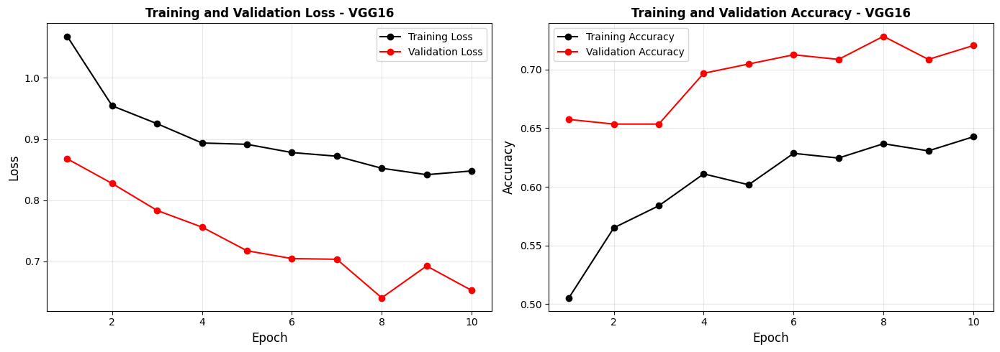
# Visualize Predictions on Test Set - VGG16
model_vgg16.eval()
plt.figure(figsize=(10, 8))
images_batch, labels_batch = next(iter(test_loader))
images_batch_dev = images_batch.to(device)
with torch.no_grad():
outputs = model_vgg16(images_batch_dev)
_, predicted_classes = torch.max(outputs, 1)
for i in range(min(15, len(images_batch))):
ax = plt.subplot(3, 5, i + 1)
img = inv_normalize(images_batch[i]).permute(1, 2, 0).numpy()
img = np.clip(img, 0, 1)
plt.imshow(img)
actual_class_idx = labels_batch[i].item()
actual_class = class_names[actual_class_idx]
predicted_class = class_names[predicted_classes[i].item()]
color = 'green' if actual_class_idx == predicted_classes[i].item() else 'red'
plt.title(f"P: {predicted_class}\nR: {actual_class}",
color=color, fontweight='bold', fontsize=14)
plt.axis('off')
plt.tight_layout()
plt.show()
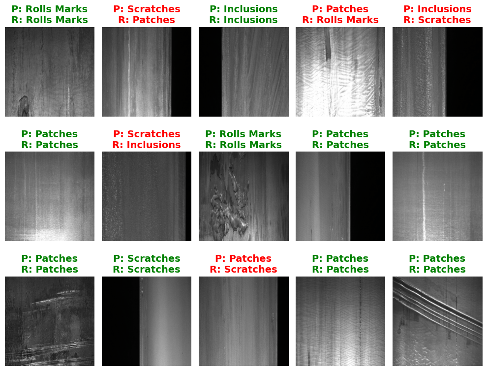
# Confusion Matrix and Classification Report - VGG16 (Test Dataset)
print("Computing predictions on test set...")
model_vgg16.eval()
ypred_test, ylabel_test = [], []
with torch.no_grad():
for images, labels in test_loader:
images = images.to(device)
outputs = model_vgg16(images)
_, predicted = torch.max(outputs, 1)
ypred_test.extend(predicted.cpu().numpy())
ylabel_test.extend(labels.numpy())
cm_test = confusion_matrix(ylabel_test, ypred_test)
test_accuracy = np.sum(np.array(ypred_test) == np.array(ylabel_test)) / len(ylabel_test)
print(f"Test Accuracy: {test_accuracy:.4f} ({test_accuracy*100:.2f}%)")
print("="*60)
plt.figure(figsize=(6, 6))
sns.heatmap(cm_test, annot=True, cmap="Blues",
xticklabels=class_names, yticklabels=class_names,
fmt='d', cbar_kws={'label': 'Count'})
plt.xlabel('Predicted Class', fontsize=12, fontweight='bold')
plt.ylabel('Actual Class', fontsize=12, fontweight='bold')
plt.title('Confusion Matrix - VGG16 (Test Set)', fontweight='bold')
plt.tight_layout()
plt.show()
print("\n" + "="*60)
print("CLASSIFICATION REPORT - VGG16 (Test Set)")
print("="*60)
print(classification_report(ylabel_test, ypred_test,
labels=list(range(len(class_names))),
target_names=class_names, digits=4))
Computing predictions on test set...
Test Accuracy: 0.7412 (74.12%)
============================================================
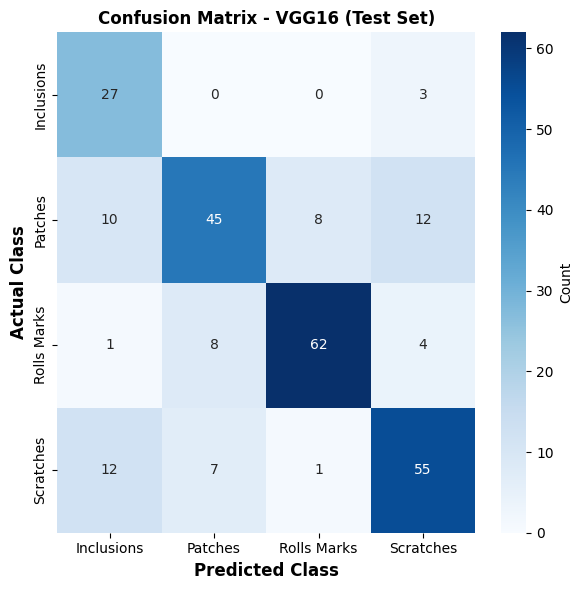
============================================================
CLASSIFICATION REPORT - VGG16 (Test Set)
============================================================
precision recall f1-score support
Inclusions 0.5400 0.9000 0.6750 30
Patches 0.7500 0.6000 0.6667 75
Rolls Marks 0.8732 0.8267 0.8493 75
Scratches 0.7432 0.7333 0.7383 75
accuracy 0.7412 255
macro avg 0.7266 0.7650 0.7323 255
weighted avg 0.7596 0.7412 0.7424 255
Fine-tuning VGG16 - Unfreezing the last Conv block (block5)¶
Fine-Tuning: Unfreezing the Last Conv Block¶
So far the entire VGG16 backbone was frozen and only the new classifier head was trained (~2.23M parameters). We now unfreeze the last convolutional block (block5) so its filters can adapt from generic ImageNet features to the specific textures and patterns of steel-surface defects.
This raises the trainable parameter count to roughly 9.3M, since block5’s three convolutional layers add about 7M trainable weights on top of the head.
Why this can affect results:
Upside — the deepest conv features become specialized to our defect classes, which can improve accuracy when the target domain differs from ImageNet.
Risk — more trainable parameters on a small dataset (~1,186 unique images) increases the chance of overfitting. To mitigate this, we keep the early blocks frozen (their edge/texture features generalize well) and fine-tune the backbone with a much lower learning rate than the head, so the pretrained weights are nudged rather than overwritten.
## Transfer Learning with VGG16 - last conv block (block5) unfrozen for fine-tuning
class VGG16_FT_Model(nn.Module):
"""
VGG16 transfer learning with block5 fine-tuning.
Block5 is unfrozen while earlier convolution layers stay frozen.
"""
def __init__(self, num_classes, unfreeze_layer=24):
super(VGG16_FT_Model, self).__init__()
# Load pretrained VGG16
self.vgg16 = models.vgg16(
weights=models.VGG16_Weights.IMAGENET1K_V1
)
# Freeze all pretrained layers
for param in self.vgg16.parameters():
param.requires_grad = False
# Remove final ImageNet classifier layer
self.vgg16.classifier = nn.Sequential(
*list(self.vgg16.classifier.children())[:-1]
)
# Custom classifier
self.own_layers = nn.Sequential(
nn.Linear(4096, 512),
nn.ReLU(),
nn.Dropout(0.5),
nn.Linear(512, 256),
nn.ReLU(),
nn.Dropout(0.3),
nn.Linear(256, num_classes)
)
# Unfreeze block5
self.unfreeze_from(unfreeze_layer)
def forward(self, x):
x = self.vgg16(x)
x = self.own_layers(x)
return x
def unfreeze_from(self, layer_idx=24):
"""
Unfreeze VGG16 feature layers from layer_idx onward.
VGG16 block5 starts at index 24.
"""
for idx, layer in enumerate(self.vgg16.features):
trainable = idx >= layer_idx
for param in layer.parameters():
param.requires_grad = trainable
# Model summary
print("VGG16 Model with custom classifier ")
# Build model
model_vgg16 = VGG16_Model(num_classes=len(class_names)).to(device)
# Model summary
print(summary(
model_vgg16,
input_size=(1,3,224,224),
depth=10,
col_names=["input_size", "output_size", "kernel_size", "num_params"]))
# Unfreeze the last conv block for fine-tuning
model_vgg16_ft = VGG16_FT_Model(num_classes=len(class_names)).to(device)
# Model summary
print("VGG16 Fine-Tuning Model (block5 unfrozen)")
print(summary(
model_vgg16_ft,
input_size=(1,3,224,224),
depth=10,
col_names=["input_size", "output_size", "kernel_size", "num_params"]))
VGG16 Model with custom classifier
============================================================================================================================================
Layer (type:depth-idx) Input Shape Output Shape Kernel Shape Param #
============================================================================================================================================
VGG16_Model [1, 3, 224, 224] [1, 4] -- --
├─VGG: 1-1 [1, 3, 224, 224] [1, 4096] -- --
│ └─Sequential: 2-1 [1, 3, 224, 224] [1, 512, 7, 7] -- --
│ │ └─Conv2d: 3-1 [1, 3, 224, 224] [1, 64, 224, 224] [3, 3] (1,792)
│ │ └─ReLU: 3-2 [1, 64, 224, 224] [1, 64, 224, 224] -- --
│ │ └─Conv2d: 3-3 [1, 64, 224, 224] [1, 64, 224, 224] [3, 3] (36,928)
│ │ └─ReLU: 3-4 [1, 64, 224, 224] [1, 64, 224, 224] -- --
│ │ └─MaxPool2d: 3-5 [1, 64, 224, 224] [1, 64, 112, 112] 2 --
│ │ └─Conv2d: 3-6 [1, 64, 112, 112] [1, 128, 112, 112] [3, 3] (73,856)
│ │ └─ReLU: 3-7 [1, 128, 112, 112] [1, 128, 112, 112] -- --
│ │ └─Conv2d: 3-8 [1, 128, 112, 112] [1, 128, 112, 112] [3, 3] (147,584)
│ │ └─ReLU: 3-9 [1, 128, 112, 112] [1, 128, 112, 112] -- --
│ │ └─MaxPool2d: 3-10 [1, 128, 112, 112] [1, 128, 56, 56] 2 --
│ │ └─Conv2d: 3-11 [1, 128, 56, 56] [1, 256, 56, 56] [3, 3] (295,168)
│ │ └─ReLU: 3-12 [1, 256, 56, 56] [1, 256, 56, 56] -- --
│ │ └─Conv2d: 3-13 [1, 256, 56, 56] [1, 256, 56, 56] [3, 3] (590,080)
│ │ └─ReLU: 3-14 [1, 256, 56, 56] [1, 256, 56, 56] -- --
│ │ └─Conv2d: 3-15 [1, 256, 56, 56] [1, 256, 56, 56] [3, 3] (590,080)
│ │ └─ReLU: 3-16 [1, 256, 56, 56] [1, 256, 56, 56] -- --
│ │ └─MaxPool2d: 3-17 [1, 256, 56, 56] [1, 256, 28, 28] 2 --
│ │ └─Conv2d: 3-18 [1, 256, 28, 28] [1, 512, 28, 28] [3, 3] (1,180,160)
│ │ └─ReLU: 3-19 [1, 512, 28, 28] [1, 512, 28, 28] -- --
│ │ └─Conv2d: 3-20 [1, 512, 28, 28] [1, 512, 28, 28] [3, 3] (2,359,808)
│ │ └─ReLU: 3-21 [1, 512, 28, 28] [1, 512, 28, 28] -- --
│ │ └─Conv2d: 3-22 [1, 512, 28, 28] [1, 512, 28, 28] [3, 3] (2,359,808)
│ │ └─ReLU: 3-23 [1, 512, 28, 28] [1, 512, 28, 28] -- --
│ │ └─MaxPool2d: 3-24 [1, 512, 28, 28] [1, 512, 14, 14] 2 --
│ │ └─Conv2d: 3-25 [1, 512, 14, 14] [1, 512, 14, 14] [3, 3] (2,359,808)
│ │ └─ReLU: 3-26 [1, 512, 14, 14] [1, 512, 14, 14] -- --
│ │ └─Conv2d: 3-27 [1, 512, 14, 14] [1, 512, 14, 14] [3, 3] (2,359,808)
│ │ └─ReLU: 3-28 [1, 512, 14, 14] [1, 512, 14, 14] -- --
│ │ └─Conv2d: 3-29 [1, 512, 14, 14] [1, 512, 14, 14] [3, 3] (2,359,808)
│ │ └─ReLU: 3-30 [1, 512, 14, 14] [1, 512, 14, 14] -- --
│ │ └─MaxPool2d: 3-31 [1, 512, 14, 14] [1, 512, 7, 7] 2 --
│ └─AdaptiveAvgPool2d: 2-2 [1, 512, 7, 7] [1, 512, 7, 7] -- --
│ └─Sequential: 2-3 [1, 25088] [1, 4096] -- --
│ │ └─Linear: 3-32 [1, 25088] [1, 4096] -- (102,764,544)
│ │ └─ReLU: 3-33 [1, 4096] [1, 4096] -- --
│ │ └─Dropout: 3-34 [1, 4096] [1, 4096] -- --
│ │ └─Linear: 3-35 [1, 4096] [1, 4096] -- (16,781,312)
│ │ └─ReLU: 3-36 [1, 4096] [1, 4096] -- --
│ │ └─Dropout: 3-37 [1, 4096] [1, 4096] -- --
├─Sequential: 1-2 [1, 4096] [1, 4] -- --
│ └─Linear: 2-4 [1, 4096] [1, 512] -- 2,097,664
│ └─ReLU: 2-5 [1, 512] [1, 512] -- --
│ └─Dropout: 2-6 [1, 512] [1, 512] -- --
│ └─Linear: 2-7 [1, 512] [1, 256] -- 131,328
│ └─ReLU: 2-8 [1, 256] [1, 256] -- --
│ └─Dropout: 2-9 [1, 256] [1, 256] -- --
│ └─Linear: 2-10 [1, 256] [1, 4] -- 1,028
============================================================================================================================================
Total params: 136,490,564
Trainable params: 2,230,020
Non-trainable params: 134,260,544
Total mult-adds (Units.GIGABYTES): 15.48
============================================================================================================================================
Input size (MB): 0.60
Forward/backward pass size (MB): 108.45
Params size (MB): 545.96
Estimated Total Size (MB): 655.02
============================================================================================================================================
VGG16 Fine-Tuning Model (block5 unfrozen)
============================================================================================================================================
Layer (type:depth-idx) Input Shape Output Shape Kernel Shape Param #
============================================================================================================================================
VGG16_FT_Model [1, 3, 224, 224] [1, 4] -- --
├─VGG: 1-1 [1, 3, 224, 224] [1, 4096] -- --
│ └─Sequential: 2-1 [1, 3, 224, 224] [1, 512, 7, 7] -- --
│ │ └─Conv2d: 3-1 [1, 3, 224, 224] [1, 64, 224, 224] [3, 3] (1,792)
│ │ └─ReLU: 3-2 [1, 64, 224, 224] [1, 64, 224, 224] -- --
│ │ └─Conv2d: 3-3 [1, 64, 224, 224] [1, 64, 224, 224] [3, 3] (36,928)
│ │ └─ReLU: 3-4 [1, 64, 224, 224] [1, 64, 224, 224] -- --
│ │ └─MaxPool2d: 3-5 [1, 64, 224, 224] [1, 64, 112, 112] 2 --
│ │ └─Conv2d: 3-6 [1, 64, 112, 112] [1, 128, 112, 112] [3, 3] (73,856)
│ │ └─ReLU: 3-7 [1, 128, 112, 112] [1, 128, 112, 112] -- --
│ │ └─Conv2d: 3-8 [1, 128, 112, 112] [1, 128, 112, 112] [3, 3] (147,584)
│ │ └─ReLU: 3-9 [1, 128, 112, 112] [1, 128, 112, 112] -- --
│ │ └─MaxPool2d: 3-10 [1, 128, 112, 112] [1, 128, 56, 56] 2 --
│ │ └─Conv2d: 3-11 [1, 128, 56, 56] [1, 256, 56, 56] [3, 3] (295,168)
│ │ └─ReLU: 3-12 [1, 256, 56, 56] [1, 256, 56, 56] -- --
│ │ └─Conv2d: 3-13 [1, 256, 56, 56] [1, 256, 56, 56] [3, 3] (590,080)
│ │ └─ReLU: 3-14 [1, 256, 56, 56] [1, 256, 56, 56] -- --
│ │ └─Conv2d: 3-15 [1, 256, 56, 56] [1, 256, 56, 56] [3, 3] (590,080)
│ │ └─ReLU: 3-16 [1, 256, 56, 56] [1, 256, 56, 56] -- --
│ │ └─MaxPool2d: 3-17 [1, 256, 56, 56] [1, 256, 28, 28] 2 --
│ │ └─Conv2d: 3-18 [1, 256, 28, 28] [1, 512, 28, 28] [3, 3] (1,180,160)
│ │ └─ReLU: 3-19 [1, 512, 28, 28] [1, 512, 28, 28] -- --
│ │ └─Conv2d: 3-20 [1, 512, 28, 28] [1, 512, 28, 28] [3, 3] (2,359,808)
│ │ └─ReLU: 3-21 [1, 512, 28, 28] [1, 512, 28, 28] -- --
│ │ └─Conv2d: 3-22 [1, 512, 28, 28] [1, 512, 28, 28] [3, 3] (2,359,808)
│ │ └─ReLU: 3-23 [1, 512, 28, 28] [1, 512, 28, 28] -- --
│ │ └─MaxPool2d: 3-24 [1, 512, 28, 28] [1, 512, 14, 14] 2 --
│ │ └─Conv2d: 3-25 [1, 512, 14, 14] [1, 512, 14, 14] [3, 3] 2,359,808
│ │ └─ReLU: 3-26 [1, 512, 14, 14] [1, 512, 14, 14] -- --
│ │ └─Conv2d: 3-27 [1, 512, 14, 14] [1, 512, 14, 14] [3, 3] 2,359,808
│ │ └─ReLU: 3-28 [1, 512, 14, 14] [1, 512, 14, 14] -- --
│ │ └─Conv2d: 3-29 [1, 512, 14, 14] [1, 512, 14, 14] [3, 3] 2,359,808
│ │ └─ReLU: 3-30 [1, 512, 14, 14] [1, 512, 14, 14] -- --
│ │ └─MaxPool2d: 3-31 [1, 512, 14, 14] [1, 512, 7, 7] 2 --
│ └─AdaptiveAvgPool2d: 2-2 [1, 512, 7, 7] [1, 512, 7, 7] -- --
│ └─Sequential: 2-3 [1, 25088] [1, 4096] -- --
│ │ └─Linear: 3-32 [1, 25088] [1, 4096] -- (102,764,544)
│ │ └─ReLU: 3-33 [1, 4096] [1, 4096] -- --
│ │ └─Dropout: 3-34 [1, 4096] [1, 4096] -- --
│ │ └─Linear: 3-35 [1, 4096] [1, 4096] -- (16,781,312)
│ │ └─ReLU: 3-36 [1, 4096] [1, 4096] -- --
│ │ └─Dropout: 3-37 [1, 4096] [1, 4096] -- --
├─Sequential: 1-2 [1, 4096] [1, 4] -- --
│ └─Linear: 2-4 [1, 4096] [1, 512] -- 2,097,664
│ └─ReLU: 2-5 [1, 512] [1, 512] -- --
│ └─Dropout: 2-6 [1, 512] [1, 512] -- --
│ └─Linear: 2-7 [1, 512] [1, 256] -- 131,328
│ └─ReLU: 2-8 [1, 256] [1, 256] -- --
│ └─Dropout: 2-9 [1, 256] [1, 256] -- --
│ └─Linear: 2-10 [1, 256] [1, 4] -- 1,028
============================================================================================================================================
Total params: 136,490,564
Trainable params: 9,309,444
Non-trainable params: 127,181,120
Total mult-adds (Units.GIGABYTES): 15.48
============================================================================================================================================
Input size (MB): 0.60
Forward/backward pass size (MB): 108.45
Params size (MB): 545.96
Estimated Total Size (MB): 655.02
============================================================================================================================================
# --- learning rates -----------------------------
# Backbone (unfrozen block5) trains slowly to preserve pretrained features;
# the new classifier head trains faster.
backbone_params = [p for p in model_vgg16_ft.vgg16.parameters() if p.requires_grad]
head_params = list(model_vgg16_ft.own_layers.parameters())
optimizer_vgg16_ft = optim.Adam([
{"params": backbone_params, "lr": 1e-5}, # fine-tune slowly
{"params": head_params, "lr": 1e-4}, # train head faster
])
# If you are running on the LUMI cluster, do not execute this cell interactively. Instead, submit the script as a batch job to the SLURM queue system:
# sbatch run.sh VGG_FT_classifier.py
criterion = nn.CrossEntropyLoss()
optimizer_vgg16_ft = optim.Adam(model_vgg16_ft.parameters(), lr=0.001)
EPOCHS = 10
start_start = time.time()
print("Training VGG16 Transfer Learning Model...")
history_vgg16_ft = train_model(
model_vgg16_ft,
train_loader,
val_loader,
optimizer_vgg16_ft,
criterion,
EPOCHS,
"VGG16_FT"
)
# Training time
end_time = time.time()
training_time = time.time() - start_time
print(f"\nTotal training time: {training_time:.2f} seconds")
print(f"Average time per epoch: {training_time / EPOCHS:.2f} seconds")
# Save VGG16 Fine Tunned Model
storage_path = f"/projappl/project_465002387/DEEP_Inspection_Material_Science/users/{os.environ['USER']}"
# Create models directory
model_dir = os.path.join(storage_path, "models")
os.makedirs(model_dir, exist_ok=True)
print("VGG16 Fine Tunned model saved as 'model_vgg16_ft_model.pth'")
model_path = os.path.join(model_dir,"vgg16_ft_defect_classifier.pth")
torch.save(
{
"model_state_dict": model_vgg16_ft.state_dict(),
"history": history_vgg16_ft,
"training_time": training_time,
},
model_path,
)
#load the tranied model and history of training
storage_path = f"/projappl/project_465002387/DEEP_Inspection_Material_Science/users/{os.environ['USER']}/"
# If yoou did not manage to run the model in your user directory, use this path to use the trained model: storage_path = f"/projappl/project_465002387/DEEP_Inspection_Material_Science/"
model_path = os.path.join(storage_path, "models", "vgg16_ft_defect_classifier.pth")
checkpoint = torch.load(model_path, map_location=device)
model_vgg16_ft = VGG16_FT_Model(num_classes=len(class_names)).to(device)
model_vgg16_ft.load_state_dict(checkpoint["model_state_dict"])
model_vgg16_ft.eval()
history_vgg16_ft = checkpoint["history"]
print(f"Loaded model from: {model_path}")
training_time = checkpoint["training_time"]
print(f"Training time: {training_time:.2f} seconds")
Loaded model from: /projappl/project_465002387/DEEP_Inspection_Material_Science/users/saeedima/models/vgg16_ft_defect_classifier.pth
Training time: 457.04 seconds
# Plot Training History for VGG16 - last conv block (block5) unfrozen for fine-tuning
fig, axes = plt.subplots(1, 2, figsize=(14, 5))
axes[0].plot(np.arange(1, len(history_vgg16_ft["loss"]) + 1), history_vgg16_ft['loss'],
color='black', label='Training Loss', marker='o')
axes[0].plot(np.arange(1, len(history_vgg16_ft["loss"]) + 1), history_vgg16_ft['val_loss'],
color='red', label='Validation Loss', marker='o')
axes[0].set_xlabel('Epoch', fontsize=12)
axes[0].set_ylabel('Loss', fontsize=12)
axes[0].set_title('Training and Validation Loss - VGG16', fontweight='bold')
axes[0].legend()
axes[0].grid(True, alpha=0.3)
axes[1].plot(np.arange(1, len(history_vgg16_ft["loss"]) + 1), history_vgg16_ft['accuracy'],
color='black', label='Training Accuracy', marker='o')
axes[1].plot(np.arange(1, len(history_vgg16_ft["loss"]) + 1), history_vgg16_ft['val_accuracy'],
color='red', label='Validation Accuracy', marker='o')
axes[1].set_xlabel('Epoch', fontsize=12)
axes[1].set_ylabel('Accuracy', fontsize=12)
axes[1].set_title('Training and Validation Accuracy - VGG16', fontweight='bold')
axes[1].legend()
axes[1].grid(True, alpha=0.3)
plt.tight_layout()
plt.show()
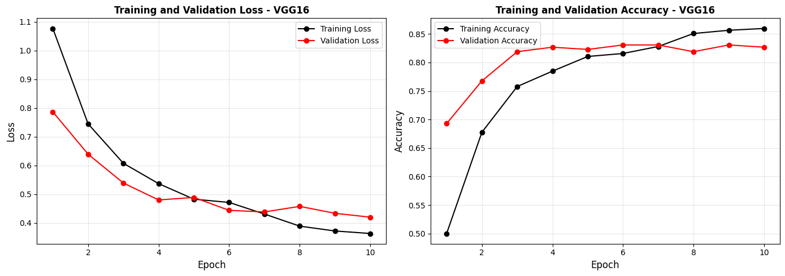
# Visualize Predictions on Test Set - VGG16 fine-tuned model
model_vgg16_ft.eval()
plt.figure(figsize=(10, 8))
images_batch, labels_batch = next(iter(test_loader))
images_batch_dev = images_batch.to(device)
with torch.no_grad():
outputs = model_vgg16_ft(images_batch_dev)
_, predicted_classes = torch.max(outputs, 1)
for i in range(min(15, len(images_batch))):
ax = plt.subplot(3, 5, i + 1)
img = inv_normalize(images_batch[i]).permute(1, 2, 0).numpy()
img = np.clip(img, 0, 1)
plt.imshow(img)
actual_class_idx = labels_batch[i].item()
actual_class = class_names[actual_class_idx]
predicted_class = class_names[predicted_classes[i].item()]
color = 'green' if actual_class_idx == predicted_classes[i].item() else 'red'
plt.title(f"P: {predicted_class}\nA: {actual_class}",
color=color, fontweight='bold', fontsize=14)
plt.axis('off')
plt.tight_layout()
plt.show()
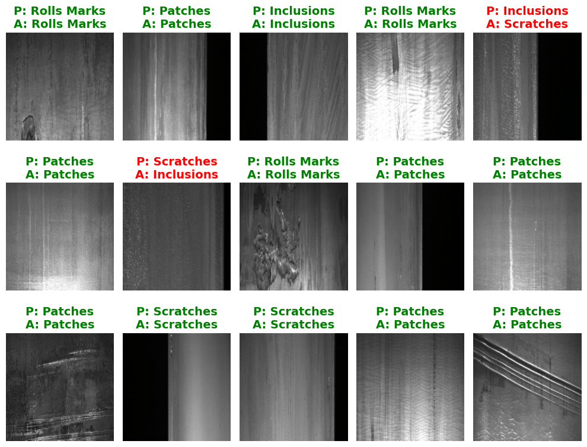
# Confusion Matrix and Classification Report - VGG16-fine-tuned (Test)
print("Computing predictions on test set...")
model_vgg16_ft.eval()
ypred_test, ylabel_test = [], []
with torch.no_grad():
for images, labels in test_loader:
images = images.to(device)
outputs = model_vgg16_ft(images)
_, predicted = torch.max(outputs, 1)
ypred_test.extend(predicted.cpu().numpy())
ylabel_test.extend(labels.numpy())
cm_test = confusion_matrix(ylabel_test, ypred_test)
test_accuracy = np.sum(np.array(ypred_test) == np.array(ylabel_test)) / len(ylabel_test)
print(f"Test Accuracy: {test_accuracy:.4f} ({test_accuracy*100:.2f}%)")
print("="*60)
plt.figure(figsize=(6, 6))
sns.heatmap(cm_test, annot=True, cmap="Blues",
xticklabels=class_names, yticklabels=class_names,
fmt='d', cbar_kws={'label': 'Count'})
plt.xlabel('Predicted Class', fontsize=12, fontweight='bold')
plt.ylabel('Actual Class', fontsize=12, fontweight='bold')
plt.title('Confusion Matrix - VGG16 (Test Set)', fontweight='bold')
plt.tight_layout()
plt.show()
print("\n" + "="*60)
print("CLASSIFICATION REPORT - VGG16 (Test Set)")
print("="*60)
print(classification_report(ylabel_test, ypred_test,
labels=list(range(len(class_names))),
target_names=class_names, digits=4))
print("="*60)
Computing predictions on test set...
Test Accuracy: 0.8039 (80.39%)
============================================================
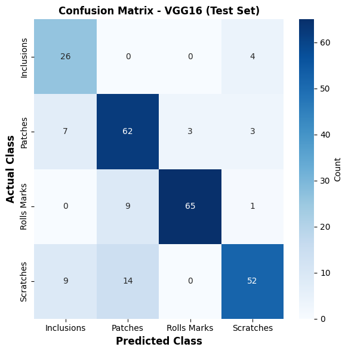
============================================================
CLASSIFICATION REPORT - VGG16 (Test Set)
============================================================
precision recall f1-score support
Inclusions 0.6190 0.8667 0.7222 30
Patches 0.7294 0.8267 0.7750 75
Rolls Marks 0.9559 0.8667 0.9091 75
Scratches 0.8667 0.6933 0.7704 75
accuracy 0.8039 255
macro avg 0.7928 0.8133 0.7942 255
weighted avg 0.8234 0.8039 0.8069 255
============================================================
Transfer Learning with ResNet50¶
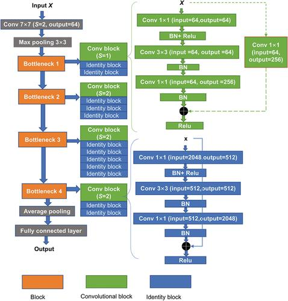
# Load pre-trained ResNet50 base model with IMAGENET1K_V2 weights
base_model_resnet = models.resnet50(weights=models.ResNet50_Weights.IMAGENET1K_V2)
summary(
base_model_resnet,
input_size=(1,3,224,224),
depth=10,
col_names=["input_size", "output_size", "kernel_size", "num_params"])
============================================================================================================================================
Layer (type:depth-idx) Input Shape Output Shape Kernel Shape Param #
============================================================================================================================================
ResNet [1, 3, 224, 224] [1, 1000] -- --
├─Conv2d: 1-1 [1, 3, 224, 224] [1, 64, 112, 112] [7, 7] 9,408
├─BatchNorm2d: 1-2 [1, 64, 112, 112] [1, 64, 112, 112] -- 128
├─ReLU: 1-3 [1, 64, 112, 112] [1, 64, 112, 112] -- --
├─MaxPool2d: 1-4 [1, 64, 112, 112] [1, 64, 56, 56] 3 --
├─Sequential: 1-5 [1, 64, 56, 56] [1, 256, 56, 56] -- --
│ └─Bottleneck: 2-1 [1, 64, 56, 56] [1, 256, 56, 56] -- --
│ │ └─Conv2d: 3-1 [1, 64, 56, 56] [1, 64, 56, 56] [1, 1] 4,096
│ │ └─BatchNorm2d: 3-2 [1, 64, 56, 56] [1, 64, 56, 56] -- 128
│ │ └─ReLU: 3-3 [1, 64, 56, 56] [1, 64, 56, 56] -- --
│ │ └─Conv2d: 3-4 [1, 64, 56, 56] [1, 64, 56, 56] [3, 3] 36,864
│ │ └─BatchNorm2d: 3-5 [1, 64, 56, 56] [1, 64, 56, 56] -- 128
│ │ └─ReLU: 3-6 [1, 64, 56, 56] [1, 64, 56, 56] -- --
│ │ └─Conv2d: 3-7 [1, 64, 56, 56] [1, 256, 56, 56] [1, 1] 16,384
│ │ └─BatchNorm2d: 3-8 [1, 256, 56, 56] [1, 256, 56, 56] -- 512
│ │ └─Sequential: 3-9 [1, 64, 56, 56] [1, 256, 56, 56] -- --
│ │ │ └─Conv2d: 4-1 [1, 64, 56, 56] [1, 256, 56, 56] [1, 1] 16,384
│ │ │ └─BatchNorm2d: 4-2 [1, 256, 56, 56] [1, 256, 56, 56] -- 512
│ │ └─ReLU: 3-10 [1, 256, 56, 56] [1, 256, 56, 56] -- --
│ └─Bottleneck: 2-2 [1, 256, 56, 56] [1, 256, 56, 56] -- --
│ │ └─Conv2d: 3-11 [1, 256, 56, 56] [1, 64, 56, 56] [1, 1] 16,384
│ │ └─BatchNorm2d: 3-12 [1, 64, 56, 56] [1, 64, 56, 56] -- 128
│ │ └─ReLU: 3-13 [1, 64, 56, 56] [1, 64, 56, 56] -- --
│ │ └─Conv2d: 3-14 [1, 64, 56, 56] [1, 64, 56, 56] [3, 3] 36,864
│ │ └─BatchNorm2d: 3-15 [1, 64, 56, 56] [1, 64, 56, 56] -- 128
│ │ └─ReLU: 3-16 [1, 64, 56, 56] [1, 64, 56, 56] -- --
│ │ └─Conv2d: 3-17 [1, 64, 56, 56] [1, 256, 56, 56] [1, 1] 16,384
│ │ └─BatchNorm2d: 3-18 [1, 256, 56, 56] [1, 256, 56, 56] -- 512
│ │ └─ReLU: 3-19 [1, 256, 56, 56] [1, 256, 56, 56] -- --
│ └─Bottleneck: 2-3 [1, 256, 56, 56] [1, 256, 56, 56] -- --
│ │ └─Conv2d: 3-20 [1, 256, 56, 56] [1, 64, 56, 56] [1, 1] 16,384
│ │ └─BatchNorm2d: 3-21 [1, 64, 56, 56] [1, 64, 56, 56] -- 128
│ │ └─ReLU: 3-22 [1, 64, 56, 56] [1, 64, 56, 56] -- --
│ │ └─Conv2d: 3-23 [1, 64, 56, 56] [1, 64, 56, 56] [3, 3] 36,864
│ │ └─BatchNorm2d: 3-24 [1, 64, 56, 56] [1, 64, 56, 56] -- 128
│ │ └─ReLU: 3-25 [1, 64, 56, 56] [1, 64, 56, 56] -- --
│ │ └─Conv2d: 3-26 [1, 64, 56, 56] [1, 256, 56, 56] [1, 1] 16,384
│ │ └─BatchNorm2d: 3-27 [1, 256, 56, 56] [1, 256, 56, 56] -- 512
│ │ └─ReLU: 3-28 [1, 256, 56, 56] [1, 256, 56, 56] -- --
├─Sequential: 1-6 [1, 256, 56, 56] [1, 512, 28, 28] -- --
│ └─Bottleneck: 2-4 [1, 256, 56, 56] [1, 512, 28, 28] -- --
│ │ └─Conv2d: 3-29 [1, 256, 56, 56] [1, 128, 56, 56] [1, 1] 32,768
│ │ └─BatchNorm2d: 3-30 [1, 128, 56, 56] [1, 128, 56, 56] -- 256
│ │ └─ReLU: 3-31 [1, 128, 56, 56] [1, 128, 56, 56] -- --
│ │ └─Conv2d: 3-32 [1, 128, 56, 56] [1, 128, 28, 28] [3, 3] 147,456
│ │ └─BatchNorm2d: 3-33 [1, 128, 28, 28] [1, 128, 28, 28] -- 256
│ │ └─ReLU: 3-34 [1, 128, 28, 28] [1, 128, 28, 28] -- --
│ │ └─Conv2d: 3-35 [1, 128, 28, 28] [1, 512, 28, 28] [1, 1] 65,536
│ │ └─BatchNorm2d: 3-36 [1, 512, 28, 28] [1, 512, 28, 28] -- 1,024
│ │ └─Sequential: 3-37 [1, 256, 56, 56] [1, 512, 28, 28] -- --
│ │ │ └─Conv2d: 4-3 [1, 256, 56, 56] [1, 512, 28, 28] [1, 1] 131,072
│ │ │ └─BatchNorm2d: 4-4 [1, 512, 28, 28] [1, 512, 28, 28] -- 1,024
│ │ └─ReLU: 3-38 [1, 512, 28, 28] [1, 512, 28, 28] -- --
│ └─Bottleneck: 2-5 [1, 512, 28, 28] [1, 512, 28, 28] -- --
│ │ └─Conv2d: 3-39 [1, 512, 28, 28] [1, 128, 28, 28] [1, 1] 65,536
│ │ └─BatchNorm2d: 3-40 [1, 128, 28, 28] [1, 128, 28, 28] -- 256
│ │ └─ReLU: 3-41 [1, 128, 28, 28] [1, 128, 28, 28] -- --
│ │ └─Conv2d: 3-42 [1, 128, 28, 28] [1, 128, 28, 28] [3, 3] 147,456
│ │ └─BatchNorm2d: 3-43 [1, 128, 28, 28] [1, 128, 28, 28] -- 256
│ │ └─ReLU: 3-44 [1, 128, 28, 28] [1, 128, 28, 28] -- --
│ │ └─Conv2d: 3-45 [1, 128, 28, 28] [1, 512, 28, 28] [1, 1] 65,536
│ │ └─BatchNorm2d: 3-46 [1, 512, 28, 28] [1, 512, 28, 28] -- 1,024
│ │ └─ReLU: 3-47 [1, 512, 28, 28] [1, 512, 28, 28] -- --
│ └─Bottleneck: 2-6 [1, 512, 28, 28] [1, 512, 28, 28] -- --
│ │ └─Conv2d: 3-48 [1, 512, 28, 28] [1, 128, 28, 28] [1, 1] 65,536
│ │ └─BatchNorm2d: 3-49 [1, 128, 28, 28] [1, 128, 28, 28] -- 256
│ │ └─ReLU: 3-50 [1, 128, 28, 28] [1, 128, 28, 28] -- --
│ │ └─Conv2d: 3-51 [1, 128, 28, 28] [1, 128, 28, 28] [3, 3] 147,456
│ │ └─BatchNorm2d: 3-52 [1, 128, 28, 28] [1, 128, 28, 28] -- 256
│ │ └─ReLU: 3-53 [1, 128, 28, 28] [1, 128, 28, 28] -- --
│ │ └─Conv2d: 3-54 [1, 128, 28, 28] [1, 512, 28, 28] [1, 1] 65,536
│ │ └─BatchNorm2d: 3-55 [1, 512, 28, 28] [1, 512, 28, 28] -- 1,024
│ │ └─ReLU: 3-56 [1, 512, 28, 28] [1, 512, 28, 28] -- --
│ └─Bottleneck: 2-7 [1, 512, 28, 28] [1, 512, 28, 28] -- --
│ │ └─Conv2d: 3-57 [1, 512, 28, 28] [1, 128, 28, 28] [1, 1] 65,536
│ │ └─BatchNorm2d: 3-58 [1, 128, 28, 28] [1, 128, 28, 28] -- 256
│ │ └─ReLU: 3-59 [1, 128, 28, 28] [1, 128, 28, 28] -- --
│ │ └─Conv2d: 3-60 [1, 128, 28, 28] [1, 128, 28, 28] [3, 3] 147,456
│ │ └─BatchNorm2d: 3-61 [1, 128, 28, 28] [1, 128, 28, 28] -- 256
│ │ └─ReLU: 3-62 [1, 128, 28, 28] [1, 128, 28, 28] -- --
│ │ └─Conv2d: 3-63 [1, 128, 28, 28] [1, 512, 28, 28] [1, 1] 65,536
│ │ └─BatchNorm2d: 3-64 [1, 512, 28, 28] [1, 512, 28, 28] -- 1,024
│ │ └─ReLU: 3-65 [1, 512, 28, 28] [1, 512, 28, 28] -- --
├─Sequential: 1-7 [1, 512, 28, 28] [1, 1024, 14, 14] -- --
│ └─Bottleneck: 2-8 [1, 512, 28, 28] [1, 1024, 14, 14] -- --
│ │ └─Conv2d: 3-66 [1, 512, 28, 28] [1, 256, 28, 28] [1, 1] 131,072
│ │ └─BatchNorm2d: 3-67 [1, 256, 28, 28] [1, 256, 28, 28] -- 512
│ │ └─ReLU: 3-68 [1, 256, 28, 28] [1, 256, 28, 28] -- --
│ │ └─Conv2d: 3-69 [1, 256, 28, 28] [1, 256, 14, 14] [3, 3] 589,824
│ │ └─BatchNorm2d: 3-70 [1, 256, 14, 14] [1, 256, 14, 14] -- 512
│ │ └─ReLU: 3-71 [1, 256, 14, 14] [1, 256, 14, 14] -- --
│ │ └─Conv2d: 3-72 [1, 256, 14, 14] [1, 1024, 14, 14] [1, 1] 262,144
│ │ └─BatchNorm2d: 3-73 [1, 1024, 14, 14] [1, 1024, 14, 14] -- 2,048
│ │ └─Sequential: 3-74 [1, 512, 28, 28] [1, 1024, 14, 14] -- --
│ │ │ └─Conv2d: 4-5 [1, 512, 28, 28] [1, 1024, 14, 14] [1, 1] 524,288
│ │ │ └─BatchNorm2d: 4-6 [1, 1024, 14, 14] [1, 1024, 14, 14] -- 2,048
│ │ └─ReLU: 3-75 [1, 1024, 14, 14] [1, 1024, 14, 14] -- --
│ └─Bottleneck: 2-9 [1, 1024, 14, 14] [1, 1024, 14, 14] -- --
│ │ └─Conv2d: 3-76 [1, 1024, 14, 14] [1, 256, 14, 14] [1, 1] 262,144
│ │ └─BatchNorm2d: 3-77 [1, 256, 14, 14] [1, 256, 14, 14] -- 512
│ │ └─ReLU: 3-78 [1, 256, 14, 14] [1, 256, 14, 14] -- --
│ │ └─Conv2d: 3-79 [1, 256, 14, 14] [1, 256, 14, 14] [3, 3] 589,824
│ │ └─BatchNorm2d: 3-80 [1, 256, 14, 14] [1, 256, 14, 14] -- 512
│ │ └─ReLU: 3-81 [1, 256, 14, 14] [1, 256, 14, 14] -- --
│ │ └─Conv2d: 3-82 [1, 256, 14, 14] [1, 1024, 14, 14] [1, 1] 262,144
│ │ └─BatchNorm2d: 3-83 [1, 1024, 14, 14] [1, 1024, 14, 14] -- 2,048
│ │ └─ReLU: 3-84 [1, 1024, 14, 14] [1, 1024, 14, 14] -- --
│ └─Bottleneck: 2-10 [1, 1024, 14, 14] [1, 1024, 14, 14] -- --
│ │ └─Conv2d: 3-85 [1, 1024, 14, 14] [1, 256, 14, 14] [1, 1] 262,144
│ │ └─BatchNorm2d: 3-86 [1, 256, 14, 14] [1, 256, 14, 14] -- 512
│ │ └─ReLU: 3-87 [1, 256, 14, 14] [1, 256, 14, 14] -- --
│ │ └─Conv2d: 3-88 [1, 256, 14, 14] [1, 256, 14, 14] [3, 3] 589,824
│ │ └─BatchNorm2d: 3-89 [1, 256, 14, 14] [1, 256, 14, 14] -- 512
│ │ └─ReLU: 3-90 [1, 256, 14, 14] [1, 256, 14, 14] -- --
│ │ └─Conv2d: 3-91 [1, 256, 14, 14] [1, 1024, 14, 14] [1, 1] 262,144
│ │ └─BatchNorm2d: 3-92 [1, 1024, 14, 14] [1, 1024, 14, 14] -- 2,048
│ │ └─ReLU: 3-93 [1, 1024, 14, 14] [1, 1024, 14, 14] -- --
│ └─Bottleneck: 2-11 [1, 1024, 14, 14] [1, 1024, 14, 14] -- --
│ │ └─Conv2d: 3-94 [1, 1024, 14, 14] [1, 256, 14, 14] [1, 1] 262,144
│ │ └─BatchNorm2d: 3-95 [1, 256, 14, 14] [1, 256, 14, 14] -- 512
│ │ └─ReLU: 3-96 [1, 256, 14, 14] [1, 256, 14, 14] -- --
│ │ └─Conv2d: 3-97 [1, 256, 14, 14] [1, 256, 14, 14] [3, 3] 589,824
│ │ └─BatchNorm2d: 3-98 [1, 256, 14, 14] [1, 256, 14, 14] -- 512
│ │ └─ReLU: 3-99 [1, 256, 14, 14] [1, 256, 14, 14] -- --
│ │ └─Conv2d: 3-100 [1, 256, 14, 14] [1, 1024, 14, 14] [1, 1] 262,144
│ │ └─BatchNorm2d: 3-101 [1, 1024, 14, 14] [1, 1024, 14, 14] -- 2,048
│ │ └─ReLU: 3-102 [1, 1024, 14, 14] [1, 1024, 14, 14] -- --
│ └─Bottleneck: 2-12 [1, 1024, 14, 14] [1, 1024, 14, 14] -- --
│ │ └─Conv2d: 3-103 [1, 1024, 14, 14] [1, 256, 14, 14] [1, 1] 262,144
│ │ └─BatchNorm2d: 3-104 [1, 256, 14, 14] [1, 256, 14, 14] -- 512
│ │ └─ReLU: 3-105 [1, 256, 14, 14] [1, 256, 14, 14] -- --
│ │ └─Conv2d: 3-106 [1, 256, 14, 14] [1, 256, 14, 14] [3, 3] 589,824
│ │ └─BatchNorm2d: 3-107 [1, 256, 14, 14] [1, 256, 14, 14] -- 512
│ │ └─ReLU: 3-108 [1, 256, 14, 14] [1, 256, 14, 14] -- --
│ │ └─Conv2d: 3-109 [1, 256, 14, 14] [1, 1024, 14, 14] [1, 1] 262,144
│ │ └─BatchNorm2d: 3-110 [1, 1024, 14, 14] [1, 1024, 14, 14] -- 2,048
│ │ └─ReLU: 3-111 [1, 1024, 14, 14] [1, 1024, 14, 14] -- --
│ └─Bottleneck: 2-13 [1, 1024, 14, 14] [1, 1024, 14, 14] -- --
│ │ └─Conv2d: 3-112 [1, 1024, 14, 14] [1, 256, 14, 14] [1, 1] 262,144
│ │ └─BatchNorm2d: 3-113 [1, 256, 14, 14] [1, 256, 14, 14] -- 512
│ │ └─ReLU: 3-114 [1, 256, 14, 14] [1, 256, 14, 14] -- --
│ │ └─Conv2d: 3-115 [1, 256, 14, 14] [1, 256, 14, 14] [3, 3] 589,824
│ │ └─BatchNorm2d: 3-116 [1, 256, 14, 14] [1, 256, 14, 14] -- 512
│ │ └─ReLU: 3-117 [1, 256, 14, 14] [1, 256, 14, 14] -- --
│ │ └─Conv2d: 3-118 [1, 256, 14, 14] [1, 1024, 14, 14] [1, 1] 262,144
│ │ └─BatchNorm2d: 3-119 [1, 1024, 14, 14] [1, 1024, 14, 14] -- 2,048
│ │ └─ReLU: 3-120 [1, 1024, 14, 14] [1, 1024, 14, 14] -- --
├─Sequential: 1-8 [1, 1024, 14, 14] [1, 2048, 7, 7] -- --
│ └─Bottleneck: 2-14 [1, 1024, 14, 14] [1, 2048, 7, 7] -- --
│ │ └─Conv2d: 3-121 [1, 1024, 14, 14] [1, 512, 14, 14] [1, 1] 524,288
│ │ └─BatchNorm2d: 3-122 [1, 512, 14, 14] [1, 512, 14, 14] -- 1,024
│ │ └─ReLU: 3-123 [1, 512, 14, 14] [1, 512, 14, 14] -- --
│ │ └─Conv2d: 3-124 [1, 512, 14, 14] [1, 512, 7, 7] [3, 3] 2,359,296
│ │ └─BatchNorm2d: 3-125 [1, 512, 7, 7] [1, 512, 7, 7] -- 1,024
│ │ └─ReLU: 3-126 [1, 512, 7, 7] [1, 512, 7, 7] -- --
│ │ └─Conv2d: 3-127 [1, 512, 7, 7] [1, 2048, 7, 7] [1, 1] 1,048,576
│ │ └─BatchNorm2d: 3-128 [1, 2048, 7, 7] [1, 2048, 7, 7] -- 4,096
│ │ └─Sequential: 3-129 [1, 1024, 14, 14] [1, 2048, 7, 7] -- --
│ │ │ └─Conv2d: 4-7 [1, 1024, 14, 14] [1, 2048, 7, 7] [1, 1] 2,097,152
│ │ │ └─BatchNorm2d: 4-8 [1, 2048, 7, 7] [1, 2048, 7, 7] -- 4,096
│ │ └─ReLU: 3-130 [1, 2048, 7, 7] [1, 2048, 7, 7] -- --
│ └─Bottleneck: 2-15 [1, 2048, 7, 7] [1, 2048, 7, 7] -- --
│ │ └─Conv2d: 3-131 [1, 2048, 7, 7] [1, 512, 7, 7] [1, 1] 1,048,576
│ │ └─BatchNorm2d: 3-132 [1, 512, 7, 7] [1, 512, 7, 7] -- 1,024
│ │ └─ReLU: 3-133 [1, 512, 7, 7] [1, 512, 7, 7] -- --
│ │ └─Conv2d: 3-134 [1, 512, 7, 7] [1, 512, 7, 7] [3, 3] 2,359,296
│ │ └─BatchNorm2d: 3-135 [1, 512, 7, 7] [1, 512, 7, 7] -- 1,024
│ │ └─ReLU: 3-136 [1, 512, 7, 7] [1, 512, 7, 7] -- --
│ │ └─Conv2d: 3-137 [1, 512, 7, 7] [1, 2048, 7, 7] [1, 1] 1,048,576
│ │ └─BatchNorm2d: 3-138 [1, 2048, 7, 7] [1, 2048, 7, 7] -- 4,096
│ │ └─ReLU: 3-139 [1, 2048, 7, 7] [1, 2048, 7, 7] -- --
│ └─Bottleneck: 2-16 [1, 2048, 7, 7] [1, 2048, 7, 7] -- --
│ │ └─Conv2d: 3-140 [1, 2048, 7, 7] [1, 512, 7, 7] [1, 1] 1,048,576
│ │ └─BatchNorm2d: 3-141 [1, 512, 7, 7] [1, 512, 7, 7] -- 1,024
│ │ └─ReLU: 3-142 [1, 512, 7, 7] [1, 512, 7, 7] -- --
│ │ └─Conv2d: 3-143 [1, 512, 7, 7] [1, 512, 7, 7] [3, 3] 2,359,296
│ │ └─BatchNorm2d: 3-144 [1, 512, 7, 7] [1, 512, 7, 7] -- 1,024
│ │ └─ReLU: 3-145 [1, 512, 7, 7] [1, 512, 7, 7] -- --
│ │ └─Conv2d: 3-146 [1, 512, 7, 7] [1, 2048, 7, 7] [1, 1] 1,048,576
│ │ └─BatchNorm2d: 3-147 [1, 2048, 7, 7] [1, 2048, 7, 7] -- 4,096
│ │ └─ReLU: 3-148 [1, 2048, 7, 7] [1, 2048, 7, 7] -- --
├─AdaptiveAvgPool2d: 1-9 [1, 2048, 7, 7] [1, 2048, 1, 1] -- --
├─Linear: 1-10 [1, 2048] [1, 1000] -- 2,049,000
============================================================================================================================================
Total params: 25,557,032
Trainable params: 25,557,032
Non-trainable params: 0
Total mult-adds (Units.GIGABYTES): 4.09
============================================================================================================================================
Input size (MB): 0.60
Forward/backward pass size (MB): 177.83
Params size (MB): 102.23
Estimated Total Size (MB): 280.66
============================================================================================================================================
# Build ResNet50 Transfer Learning Model
class ResNet50_Model(nn.Module):
def __init__(self, num_classes):
super(ResNet50_Model, self).__init__()
# Load pretrained ResNet50
self.resnet50 = models.resnet50(
weights=models.ResNet50_Weights.IMAGENET1K_V2
)
# Freeze all pretrained layers
for param in self.resnet50.parameters():
param.requires_grad = False
# Replace the original ImageNet classifier
in_features = self.resnet50.fc.in_features
self.resnet50.fc = nn.Sequential(
nn.Dropout(0.3),
nn.Linear(in_features, 256),
nn.ReLU(),
nn.Dropout(0.2),
nn.Linear(256, num_classes)
)
def forward(self, x):
x = self.resnet50(x)
return x
model_resnet50 = ResNet50_Model(num_classes=len(class_names)).to(device)
summary(
model_resnet50,
input_size=(1,3,224,224),
depth=10,
col_names=["input_size", "output_size", "kernel_size", "num_params"])
=================================================================================================================================================
Layer (type:depth-idx) Input Shape Output Shape Kernel Shape Param #
=================================================================================================================================================
ResNet50_Model [1, 3, 224, 224] [1, 4] -- --
├─ResNet: 1-1 [1, 3, 224, 224] [1, 4] -- --
│ └─Conv2d: 2-1 [1, 3, 224, 224] [1, 64, 112, 112] [7, 7] (9,408)
│ └─BatchNorm2d: 2-2 [1, 64, 112, 112] [1, 64, 112, 112] -- (128)
│ └─ReLU: 2-3 [1, 64, 112, 112] [1, 64, 112, 112] -- --
│ └─MaxPool2d: 2-4 [1, 64, 112, 112] [1, 64, 56, 56] 3 --
│ └─Sequential: 2-5 [1, 64, 56, 56] [1, 256, 56, 56] -- --
│ │ └─Bottleneck: 3-1 [1, 64, 56, 56] [1, 256, 56, 56] -- --
│ │ │ └─Conv2d: 4-1 [1, 64, 56, 56] [1, 64, 56, 56] [1, 1] (4,096)
│ │ │ └─BatchNorm2d: 4-2 [1, 64, 56, 56] [1, 64, 56, 56] -- (128)
│ │ │ └─ReLU: 4-3 [1, 64, 56, 56] [1, 64, 56, 56] -- --
│ │ │ └─Conv2d: 4-4 [1, 64, 56, 56] [1, 64, 56, 56] [3, 3] (36,864)
│ │ │ └─BatchNorm2d: 4-5 [1, 64, 56, 56] [1, 64, 56, 56] -- (128)
│ │ │ └─ReLU: 4-6 [1, 64, 56, 56] [1, 64, 56, 56] -- --
│ │ │ └─Conv2d: 4-7 [1, 64, 56, 56] [1, 256, 56, 56] [1, 1] (16,384)
│ │ │ └─BatchNorm2d: 4-8 [1, 256, 56, 56] [1, 256, 56, 56] -- (512)
│ │ │ └─Sequential: 4-9 [1, 64, 56, 56] [1, 256, 56, 56] -- --
│ │ │ │ └─Conv2d: 5-1 [1, 64, 56, 56] [1, 256, 56, 56] [1, 1] (16,384)
│ │ │ │ └─BatchNorm2d: 5-2 [1, 256, 56, 56] [1, 256, 56, 56] -- (512)
│ │ │ └─ReLU: 4-10 [1, 256, 56, 56] [1, 256, 56, 56] -- --
│ │ └─Bottleneck: 3-2 [1, 256, 56, 56] [1, 256, 56, 56] -- --
│ │ │ └─Conv2d: 4-11 [1, 256, 56, 56] [1, 64, 56, 56] [1, 1] (16,384)
│ │ │ └─BatchNorm2d: 4-12 [1, 64, 56, 56] [1, 64, 56, 56] -- (128)
│ │ │ └─ReLU: 4-13 [1, 64, 56, 56] [1, 64, 56, 56] -- --
│ │ │ └─Conv2d: 4-14 [1, 64, 56, 56] [1, 64, 56, 56] [3, 3] (36,864)
│ │ │ └─BatchNorm2d: 4-15 [1, 64, 56, 56] [1, 64, 56, 56] -- (128)
│ │ │ └─ReLU: 4-16 [1, 64, 56, 56] [1, 64, 56, 56] -- --
│ │ │ └─Conv2d: 4-17 [1, 64, 56, 56] [1, 256, 56, 56] [1, 1] (16,384)
│ │ │ └─BatchNorm2d: 4-18 [1, 256, 56, 56] [1, 256, 56, 56] -- (512)
│ │ │ └─ReLU: 4-19 [1, 256, 56, 56] [1, 256, 56, 56] -- --
│ │ └─Bottleneck: 3-3 [1, 256, 56, 56] [1, 256, 56, 56] -- --
│ │ │ └─Conv2d: 4-20 [1, 256, 56, 56] [1, 64, 56, 56] [1, 1] (16,384)
│ │ │ └─BatchNorm2d: 4-21 [1, 64, 56, 56] [1, 64, 56, 56] -- (128)
│ │ │ └─ReLU: 4-22 [1, 64, 56, 56] [1, 64, 56, 56] -- --
│ │ │ └─Conv2d: 4-23 [1, 64, 56, 56] [1, 64, 56, 56] [3, 3] (36,864)
│ │ │ └─BatchNorm2d: 4-24 [1, 64, 56, 56] [1, 64, 56, 56] -- (128)
│ │ │ └─ReLU: 4-25 [1, 64, 56, 56] [1, 64, 56, 56] -- --
│ │ │ └─Conv2d: 4-26 [1, 64, 56, 56] [1, 256, 56, 56] [1, 1] (16,384)
│ │ │ └─BatchNorm2d: 4-27 [1, 256, 56, 56] [1, 256, 56, 56] -- (512)
│ │ │ └─ReLU: 4-28 [1, 256, 56, 56] [1, 256, 56, 56] -- --
│ └─Sequential: 2-6 [1, 256, 56, 56] [1, 512, 28, 28] -- --
│ │ └─Bottleneck: 3-4 [1, 256, 56, 56] [1, 512, 28, 28] -- --
│ │ │ └─Conv2d: 4-29 [1, 256, 56, 56] [1, 128, 56, 56] [1, 1] (32,768)
│ │ │ └─BatchNorm2d: 4-30 [1, 128, 56, 56] [1, 128, 56, 56] -- (256)
│ │ │ └─ReLU: 4-31 [1, 128, 56, 56] [1, 128, 56, 56] -- --
│ │ │ └─Conv2d: 4-32 [1, 128, 56, 56] [1, 128, 28, 28] [3, 3] (147,456)
│ │ │ └─BatchNorm2d: 4-33 [1, 128, 28, 28] [1, 128, 28, 28] -- (256)
│ │ │ └─ReLU: 4-34 [1, 128, 28, 28] [1, 128, 28, 28] -- --
│ │ │ └─Conv2d: 4-35 [1, 128, 28, 28] [1, 512, 28, 28] [1, 1] (65,536)
│ │ │ └─BatchNorm2d: 4-36 [1, 512, 28, 28] [1, 512, 28, 28] -- (1,024)
│ │ │ └─Sequential: 4-37 [1, 256, 56, 56] [1, 512, 28, 28] -- --
│ │ │ │ └─Conv2d: 5-3 [1, 256, 56, 56] [1, 512, 28, 28] [1, 1] (131,072)
│ │ │ │ └─BatchNorm2d: 5-4 [1, 512, 28, 28] [1, 512, 28, 28] -- (1,024)
│ │ │ └─ReLU: 4-38 [1, 512, 28, 28] [1, 512, 28, 28] -- --
│ │ └─Bottleneck: 3-5 [1, 512, 28, 28] [1, 512, 28, 28] -- --
│ │ │ └─Conv2d: 4-39 [1, 512, 28, 28] [1, 128, 28, 28] [1, 1] (65,536)
│ │ │ └─BatchNorm2d: 4-40 [1, 128, 28, 28] [1, 128, 28, 28] -- (256)
│ │ │ └─ReLU: 4-41 [1, 128, 28, 28] [1, 128, 28, 28] -- --
│ │ │ └─Conv2d: 4-42 [1, 128, 28, 28] [1, 128, 28, 28] [3, 3] (147,456)
│ │ │ └─BatchNorm2d: 4-43 [1, 128, 28, 28] [1, 128, 28, 28] -- (256)
│ │ │ └─ReLU: 4-44 [1, 128, 28, 28] [1, 128, 28, 28] -- --
│ │ │ └─Conv2d: 4-45 [1, 128, 28, 28] [1, 512, 28, 28] [1, 1] (65,536)
│ │ │ └─BatchNorm2d: 4-46 [1, 512, 28, 28] [1, 512, 28, 28] -- (1,024)
│ │ │ └─ReLU: 4-47 [1, 512, 28, 28] [1, 512, 28, 28] -- --
│ │ └─Bottleneck: 3-6 [1, 512, 28, 28] [1, 512, 28, 28] -- --
│ │ │ └─Conv2d: 4-48 [1, 512, 28, 28] [1, 128, 28, 28] [1, 1] (65,536)
│ │ │ └─BatchNorm2d: 4-49 [1, 128, 28, 28] [1, 128, 28, 28] -- (256)
│ │ │ └─ReLU: 4-50 [1, 128, 28, 28] [1, 128, 28, 28] -- --
│ │ │ └─Conv2d: 4-51 [1, 128, 28, 28] [1, 128, 28, 28] [3, 3] (147,456)
│ │ │ └─BatchNorm2d: 4-52 [1, 128, 28, 28] [1, 128, 28, 28] -- (256)
│ │ │ └─ReLU: 4-53 [1, 128, 28, 28] [1, 128, 28, 28] -- --
│ │ │ └─Conv2d: 4-54 [1, 128, 28, 28] [1, 512, 28, 28] [1, 1] (65,536)
│ │ │ └─BatchNorm2d: 4-55 [1, 512, 28, 28] [1, 512, 28, 28] -- (1,024)
│ │ │ └─ReLU: 4-56 [1, 512, 28, 28] [1, 512, 28, 28] -- --
│ │ └─Bottleneck: 3-7 [1, 512, 28, 28] [1, 512, 28, 28] -- --
│ │ │ └─Conv2d: 4-57 [1, 512, 28, 28] [1, 128, 28, 28] [1, 1] (65,536)
│ │ │ └─BatchNorm2d: 4-58 [1, 128, 28, 28] [1, 128, 28, 28] -- (256)
│ │ │ └─ReLU: 4-59 [1, 128, 28, 28] [1, 128, 28, 28] -- --
│ │ │ └─Conv2d: 4-60 [1, 128, 28, 28] [1, 128, 28, 28] [3, 3] (147,456)
│ │ │ └─BatchNorm2d: 4-61 [1, 128, 28, 28] [1, 128, 28, 28] -- (256)
│ │ │ └─ReLU: 4-62 [1, 128, 28, 28] [1, 128, 28, 28] -- --
│ │ │ └─Conv2d: 4-63 [1, 128, 28, 28] [1, 512, 28, 28] [1, 1] (65,536)
│ │ │ └─BatchNorm2d: 4-64 [1, 512, 28, 28] [1, 512, 28, 28] -- (1,024)
│ │ │ └─ReLU: 4-65 [1, 512, 28, 28] [1, 512, 28, 28] -- --
│ └─Sequential: 2-7 [1, 512, 28, 28] [1, 1024, 14, 14] -- --
│ │ └─Bottleneck: 3-8 [1, 512, 28, 28] [1, 1024, 14, 14] -- --
│ │ │ └─Conv2d: 4-66 [1, 512, 28, 28] [1, 256, 28, 28] [1, 1] (131,072)
│ │ │ └─BatchNorm2d: 4-67 [1, 256, 28, 28] [1, 256, 28, 28] -- (512)
│ │ │ └─ReLU: 4-68 [1, 256, 28, 28] [1, 256, 28, 28] -- --
│ │ │ └─Conv2d: 4-69 [1, 256, 28, 28] [1, 256, 14, 14] [3, 3] (589,824)
│ │ │ └─BatchNorm2d: 4-70 [1, 256, 14, 14] [1, 256, 14, 14] -- (512)
│ │ │ └─ReLU: 4-71 [1, 256, 14, 14] [1, 256, 14, 14] -- --
│ │ │ └─Conv2d: 4-72 [1, 256, 14, 14] [1, 1024, 14, 14] [1, 1] (262,144)
│ │ │ └─BatchNorm2d: 4-73 [1, 1024, 14, 14] [1, 1024, 14, 14] -- (2,048)
│ │ │ └─Sequential: 4-74 [1, 512, 28, 28] [1, 1024, 14, 14] -- --
│ │ │ │ └─Conv2d: 5-5 [1, 512, 28, 28] [1, 1024, 14, 14] [1, 1] (524,288)
│ │ │ │ └─BatchNorm2d: 5-6 [1, 1024, 14, 14] [1, 1024, 14, 14] -- (2,048)
│ │ │ └─ReLU: 4-75 [1, 1024, 14, 14] [1, 1024, 14, 14] -- --
│ │ └─Bottleneck: 3-9 [1, 1024, 14, 14] [1, 1024, 14, 14] -- --
│ │ │ └─Conv2d: 4-76 [1, 1024, 14, 14] [1, 256, 14, 14] [1, 1] (262,144)
│ │ │ └─BatchNorm2d: 4-77 [1, 256, 14, 14] [1, 256, 14, 14] -- (512)
│ │ │ └─ReLU: 4-78 [1, 256, 14, 14] [1, 256, 14, 14] -- --
│ │ │ └─Conv2d: 4-79 [1, 256, 14, 14] [1, 256, 14, 14] [3, 3] (589,824)
│ │ │ └─BatchNorm2d: 4-80 [1, 256, 14, 14] [1, 256, 14, 14] -- (512)
│ │ │ └─ReLU: 4-81 [1, 256, 14, 14] [1, 256, 14, 14] -- --
│ │ │ └─Conv2d: 4-82 [1, 256, 14, 14] [1, 1024, 14, 14] [1, 1] (262,144)
│ │ │ └─BatchNorm2d: 4-83 [1, 1024, 14, 14] [1, 1024, 14, 14] -- (2,048)
│ │ │ └─ReLU: 4-84 [1, 1024, 14, 14] [1, 1024, 14, 14] -- --
│ │ └─Bottleneck: 3-10 [1, 1024, 14, 14] [1, 1024, 14, 14] -- --
│ │ │ └─Conv2d: 4-85 [1, 1024, 14, 14] [1, 256, 14, 14] [1, 1] (262,144)
│ │ │ └─BatchNorm2d: 4-86 [1, 256, 14, 14] [1, 256, 14, 14] -- (512)
│ │ │ └─ReLU: 4-87 [1, 256, 14, 14] [1, 256, 14, 14] -- --
│ │ │ └─Conv2d: 4-88 [1, 256, 14, 14] [1, 256, 14, 14] [3, 3] (589,824)
│ │ │ └─BatchNorm2d: 4-89 [1, 256, 14, 14] [1, 256, 14, 14] -- (512)
│ │ │ └─ReLU: 4-90 [1, 256, 14, 14] [1, 256, 14, 14] -- --
│ │ │ └─Conv2d: 4-91 [1, 256, 14, 14] [1, 1024, 14, 14] [1, 1] (262,144)
│ │ │ └─BatchNorm2d: 4-92 [1, 1024, 14, 14] [1, 1024, 14, 14] -- (2,048)
│ │ │ └─ReLU: 4-93 [1, 1024, 14, 14] [1, 1024, 14, 14] -- --
│ │ └─Bottleneck: 3-11 [1, 1024, 14, 14] [1, 1024, 14, 14] -- --
│ │ │ └─Conv2d: 4-94 [1, 1024, 14, 14] [1, 256, 14, 14] [1, 1] (262,144)
│ │ │ └─BatchNorm2d: 4-95 [1, 256, 14, 14] [1, 256, 14, 14] -- (512)
│ │ │ └─ReLU: 4-96 [1, 256, 14, 14] [1, 256, 14, 14] -- --
│ │ │ └─Conv2d: 4-97 [1, 256, 14, 14] [1, 256, 14, 14] [3, 3] (589,824)
│ │ │ └─BatchNorm2d: 4-98 [1, 256, 14, 14] [1, 256, 14, 14] -- (512)
│ │ │ └─ReLU: 4-99 [1, 256, 14, 14] [1, 256, 14, 14] -- --
│ │ │ └─Conv2d: 4-100 [1, 256, 14, 14] [1, 1024, 14, 14] [1, 1] (262,144)
│ │ │ └─BatchNorm2d: 4-101 [1, 1024, 14, 14] [1, 1024, 14, 14] -- (2,048)
│ │ │ └─ReLU: 4-102 [1, 1024, 14, 14] [1, 1024, 14, 14] -- --
│ │ └─Bottleneck: 3-12 [1, 1024, 14, 14] [1, 1024, 14, 14] -- --
│ │ │ └─Conv2d: 4-103 [1, 1024, 14, 14] [1, 256, 14, 14] [1, 1] (262,144)
│ │ │ └─BatchNorm2d: 4-104 [1, 256, 14, 14] [1, 256, 14, 14] -- (512)
│ │ │ └─ReLU: 4-105 [1, 256, 14, 14] [1, 256, 14, 14] -- --
│ │ │ └─Conv2d: 4-106 [1, 256, 14, 14] [1, 256, 14, 14] [3, 3] (589,824)
│ │ │ └─BatchNorm2d: 4-107 [1, 256, 14, 14] [1, 256, 14, 14] -- (512)
│ │ │ └─ReLU: 4-108 [1, 256, 14, 14] [1, 256, 14, 14] -- --
│ │ │ └─Conv2d: 4-109 [1, 256, 14, 14] [1, 1024, 14, 14] [1, 1] (262,144)
│ │ │ └─BatchNorm2d: 4-110 [1, 1024, 14, 14] [1, 1024, 14, 14] -- (2,048)
│ │ │ └─ReLU: 4-111 [1, 1024, 14, 14] [1, 1024, 14, 14] -- --
│ │ └─Bottleneck: 3-13 [1, 1024, 14, 14] [1, 1024, 14, 14] -- --
│ │ │ └─Conv2d: 4-112 [1, 1024, 14, 14] [1, 256, 14, 14] [1, 1] (262,144)
│ │ │ └─BatchNorm2d: 4-113 [1, 256, 14, 14] [1, 256, 14, 14] -- (512)
│ │ │ └─ReLU: 4-114 [1, 256, 14, 14] [1, 256, 14, 14] -- --
│ │ │ └─Conv2d: 4-115 [1, 256, 14, 14] [1, 256, 14, 14] [3, 3] (589,824)
│ │ │ └─BatchNorm2d: 4-116 [1, 256, 14, 14] [1, 256, 14, 14] -- (512)
│ │ │ └─ReLU: 4-117 [1, 256, 14, 14] [1, 256, 14, 14] -- --
│ │ │ └─Conv2d: 4-118 [1, 256, 14, 14] [1, 1024, 14, 14] [1, 1] (262,144)
│ │ │ └─BatchNorm2d: 4-119 [1, 1024, 14, 14] [1, 1024, 14, 14] -- (2,048)
│ │ │ └─ReLU: 4-120 [1, 1024, 14, 14] [1, 1024, 14, 14] -- --
│ └─Sequential: 2-8 [1, 1024, 14, 14] [1, 2048, 7, 7] -- --
│ │ └─Bottleneck: 3-14 [1, 1024, 14, 14] [1, 2048, 7, 7] -- --
│ │ │ └─Conv2d: 4-121 [1, 1024, 14, 14] [1, 512, 14, 14] [1, 1] (524,288)
│ │ │ └─BatchNorm2d: 4-122 [1, 512, 14, 14] [1, 512, 14, 14] -- (1,024)
│ │ │ └─ReLU: 4-123 [1, 512, 14, 14] [1, 512, 14, 14] -- --
│ │ │ └─Conv2d: 4-124 [1, 512, 14, 14] [1, 512, 7, 7] [3, 3] (2,359,296)
│ │ │ └─BatchNorm2d: 4-125 [1, 512, 7, 7] [1, 512, 7, 7] -- (1,024)
│ │ │ └─ReLU: 4-126 [1, 512, 7, 7] [1, 512, 7, 7] -- --
│ │ │ └─Conv2d: 4-127 [1, 512, 7, 7] [1, 2048, 7, 7] [1, 1] (1,048,576)
│ │ │ └─BatchNorm2d: 4-128 [1, 2048, 7, 7] [1, 2048, 7, 7] -- (4,096)
│ │ │ └─Sequential: 4-129 [1, 1024, 14, 14] [1, 2048, 7, 7] -- --
│ │ │ │ └─Conv2d: 5-7 [1, 1024, 14, 14] [1, 2048, 7, 7] [1, 1] (2,097,152)
│ │ │ │ └─BatchNorm2d: 5-8 [1, 2048, 7, 7] [1, 2048, 7, 7] -- (4,096)
│ │ │ └─ReLU: 4-130 [1, 2048, 7, 7] [1, 2048, 7, 7] -- --
│ │ └─Bottleneck: 3-15 [1, 2048, 7, 7] [1, 2048, 7, 7] -- --
│ │ │ └─Conv2d: 4-131 [1, 2048, 7, 7] [1, 512, 7, 7] [1, 1] (1,048,576)
│ │ │ └─BatchNorm2d: 4-132 [1, 512, 7, 7] [1, 512, 7, 7] -- (1,024)
│ │ │ └─ReLU: 4-133 [1, 512, 7, 7] [1, 512, 7, 7] -- --
│ │ │ └─Conv2d: 4-134 [1, 512, 7, 7] [1, 512, 7, 7] [3, 3] (2,359,296)
│ │ │ └─BatchNorm2d: 4-135 [1, 512, 7, 7] [1, 512, 7, 7] -- (1,024)
│ │ │ └─ReLU: 4-136 [1, 512, 7, 7] [1, 512, 7, 7] -- --
│ │ │ └─Conv2d: 4-137 [1, 512, 7, 7] [1, 2048, 7, 7] [1, 1] (1,048,576)
│ │ │ └─BatchNorm2d: 4-138 [1, 2048, 7, 7] [1, 2048, 7, 7] -- (4,096)
│ │ │ └─ReLU: 4-139 [1, 2048, 7, 7] [1, 2048, 7, 7] -- --
│ │ └─Bottleneck: 3-16 [1, 2048, 7, 7] [1, 2048, 7, 7] -- --
│ │ │ └─Conv2d: 4-140 [1, 2048, 7, 7] [1, 512, 7, 7] [1, 1] (1,048,576)
│ │ │ └─BatchNorm2d: 4-141 [1, 512, 7, 7] [1, 512, 7, 7] -- (1,024)
│ │ │ └─ReLU: 4-142 [1, 512, 7, 7] [1, 512, 7, 7] -- --
│ │ │ └─Conv2d: 4-143 [1, 512, 7, 7] [1, 512, 7, 7] [3, 3] (2,359,296)
│ │ │ └─BatchNorm2d: 4-144 [1, 512, 7, 7] [1, 512, 7, 7] -- (1,024)
│ │ │ └─ReLU: 4-145 [1, 512, 7, 7] [1, 512, 7, 7] -- --
│ │ │ └─Conv2d: 4-146 [1, 512, 7, 7] [1, 2048, 7, 7] [1, 1] (1,048,576)
│ │ │ └─BatchNorm2d: 4-147 [1, 2048, 7, 7] [1, 2048, 7, 7] -- (4,096)
│ │ │ └─ReLU: 4-148 [1, 2048, 7, 7] [1, 2048, 7, 7] -- --
│ └─AdaptiveAvgPool2d: 2-9 [1, 2048, 7, 7] [1, 2048, 1, 1] -- --
│ └─Sequential: 2-10 [1, 2048] [1, 4] -- --
│ │ └─Dropout: 3-17 [1, 2048] [1, 2048] -- --
│ │ └─Linear: 3-18 [1, 2048] [1, 256] -- 524,544
│ │ └─ReLU: 3-19 [1, 256] [1, 256] -- --
│ │ └─Dropout: 3-20 [1, 256] [1, 256] -- --
│ │ └─Linear: 3-21 [1, 256] [1, 4] -- 1,028
=================================================================================================================================================
Total params: 24,033,604
Trainable params: 525,572
Non-trainable params: 23,508,032
Total mult-adds (Units.GIGABYTES): 4.09
=================================================================================================================================================
Input size (MB): 0.60
Forward/backward pass size (MB): 177.83
Params size (MB): 96.13
Estimated Total Size (MB): 274.56
=================================================================================================================================================
# Train ResNet50 Model
# If you are running on the LUMI cluster, do not execute this cell interactively. Instead, submit the script as a batch job to the SLURM queue system:
# sbatch run.sh 03_ResNet_classifier.py
criterion = nn.CrossEntropyLoss()
optimizer_resnet = optim.Adam(model_resnet50.resnet50.fc.parameters(), lr=0.001)
EPOCHS = 10
start_time = time.time()
print("Training ResNet50 Transfer Learning Model...")
history_resnet = train_model(
model_resnet50 ,
train_loader,
val_loader,
optimizer_resnet,
criterion,
EPOCHS,
"ResNet50"
)
# Training time
end_time = time.time()
print(f"\nTotal training time: {(end_time-start_time):.2f} seconds")
print(f"Average time per epoch: {(end_time-start_time)/EPOCHS:.2f} seconds")
# Save ResNet50 Model
storage_path = f"/projappl/project_465002387/DEEP_Inspection_Material_Science/users/{os.environ['USER']}"
# Create models directory
model_dir = os.path.join(storage_path, "models")
os.makedirs(model_dir, exist_ok=True)
print("ResNet50 Model saved as 'model_resnet_model.pth'")
model_path = os.path.join(model_dir,"vgg16_ft_defect_classifier.pth")
torch.save(
{
"model_state_dict": model_resnet50.state_dict(),
"history": history_resnett,
"training_time": training_time,
},
model_path,
)
#load the tranied model and history of training
storage_path = f"/projappl/project_465002387/DEEP_Inspection_Material_Science/users/{os.environ['USER']}/"
# If yoou did not manage to run the model in your user directory, use this path to use the trained model: storage_path = f"/projappl/project_465002387/DEEP_Inspection_Material_Science/"
model_path = os.path.join(storage_path, "models", "resnet50_defect_classifier.pth")
checkpoint = torch.load(model_path, map_location=device)
model_resnet50 = ResNet50_Model(num_classes=len(class_names)).to(device)
model_resnet50.load_state_dict(checkpoint["model_state_dict"])
model_resnet50.eval()
history_resnet50 = checkpoint["history"]
print(f"Loaded model from: {model_path}")
training_time = checkpoint["training_time"]
print(f"Training time: {training_time:.2f} seconds")
Loaded model from: /projappl/project_465002387/DEEP_Inspection_Material_Science/users/saeedima/models/resnet50_defect_classifier.pth
Training time: 414.05 seconds
# Confusion Matrix and Classification Report - ResNet50 (Test)
print("Computing predictions on test set...")
model_resnet50.eval()
ypred_test, ylabel_test = [], []
with torch.no_grad():
for images, labels in test_loader:
images = images.to(device)
outputs = model_resnet50(images)
_, predicted = torch.max(outputs, 1)
ypred_test.extend(predicted.cpu().numpy())
ylabel_test.extend(labels.numpy())
cm_test = confusion_matrix(ylabel_test, ypred_test)
test_accuracy = np.sum(np.array(ypred_test) == np.array(ylabel_test)) / len(ylabel_test)
print(f"Test Accuracy: {test_accuracy:.4f} ({test_accuracy*100:.2f}%)")
print("="*60)
plt.figure(figsize=(6, 6))
sns.heatmap(cm_test, annot=True, cmap="Blues",
xticklabels=class_names, yticklabels=class_names,
fmt='d', cbar_kws={'label': 'Count'})
plt.xlabel('Predicted Class', fontsize=12, fontweight='bold')
plt.ylabel('Actual Class', fontsize=12, fontweight='bold')
plt.title('Confusion Matrix - ResNet (Test Set)', fontweight='bold')
plt.tight_layout()
plt.show()
print("\n" + "="*60)
print("CLASSIFICATION REPORT - ResNet(Test Set)")
print("="*60)
print(classification_report(ylabel_test, ypred_test,
labels=list(range(len(class_names))),
target_names=class_names, digits=4))
print("="*60)
Computing predictions on test set...
Test Accuracy: 0.8471 (84.71%)
============================================================
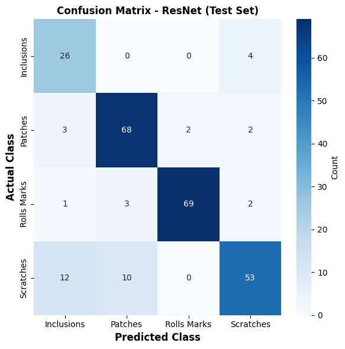
============================================================
CLASSIFICATION REPORT - ResNet(Test Set)
============================================================
precision recall f1-score support
Inclusions 0.6190 0.8667 0.7222 30
Patches 0.8395 0.9067 0.8718 75
Rolls Marks 0.9718 0.9200 0.9452 75
Scratches 0.8689 0.7067 0.7794 75
accuracy 0.8471 255
macro avg 0.8248 0.8500 0.8297 255
weighted avg 0.8611 0.8471 0.8486 255
============================================================
Importance of 1×1 Convolution layer and the Inception (GoogleLeNet) Architecture¶
Why Do We Need a 1×1 Convolution Layer?¶
A 1×1 convolution may seem unusual but its commonly used in deep learning and called a bottleneck layer because it reduces the number of channels before expensive convolutions. Without the bottleneck, large convolutions like 3×3 and 5×5 would be extremely expensive. Benefits of 1×1 Convolution
Reduces the number of channels (feature maps) before applying expensive convolutions.
Decreases computational cost and memory usage.
Adds non-linearity when followed by an activation function (e.g., ReLU).
Learns better feature combinations by mixing information across channels.
The Inception Module¶
The Inception module was introduced in GoogleLeNet (Inception-v1). Instead of choosing one convolution size, perform multiple convolutions in parallel and combine their outputs.
Each Inception module contains four parallel branches is shown below:
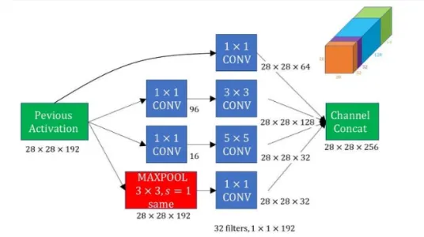
Figure adapted from Inception Network. Inception Network.
GoogleLeNet Architecture¶
GoogleLeNet (also known as Inception-v1) was introduced by Google in 2014. It is built by stacking multiple Inception modules one after another. GoogleLeNet architecture is shown below:
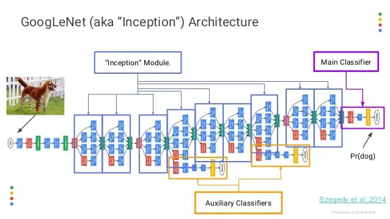
Figure adapted from Inception V1 Architecture Explained. Inception V1 Architecture Explained.
For a more detailed explanation of the Inception (GoogleLeNet) architecture, take a look at this Medium article: Understanding Inception: Simplifying the Network Architecture https://medium.com/swlh/understanding-inception-simplifying-the-network-architecture-54cd31d38949
Assignment: Transfer Learning with GoogLeNet¶
Load the pre-trained GoogLeNet model.
Print the model architecture.
Implement transfer learning by removing and replacing the final classifier layer.
Train the modified model on Severstal defect dataset.
Compare the following with ResNet:
Number of trainable parameters
Model performance (e.g., accuracy, loss, training time)
** To submit the job to LUMI, run: sbatch run.sh 03-googlelenet.py
Solution for GoogLenet-Transfer learning¶
# Build GoogleLeNet Transfer Learning Model
class GoogleLeNet_Model(nn.Module):
def __init__(self, num_classes):
super(GoogleLeNet_Model, self).__init__()
# Load pretrained GoogleLeNet
self.googlenet = models.googlenet(
weights=models.GoogLeNet_Weights.IMAGENET1K_V1,
aux_logits=True
)
# Freeze all pretrained layers
for param in self.googlenet.parameters():
param.requires_grad = False
# Replace original ImageNet classifier
in_features = self.googlenet.fc.in_features
self.googlenet.fc = nn.Sequential(
nn.Dropout(0.3),
nn.Linear(in_features, 256),
nn.ReLU(),
nn.Dropout(0.2),
nn.Linear(256, num_classes)
)
def forward(self, x):
output = self.googlenet(x)
if hasattr(output, "logits"):
return output.logits
return output
# GoogleLeNet Transfer Learning Model
model_googlenet = GoogleLeNet_Model(
num_classes=len(class_names)
).to(device)
summary(
model_googlenet,
input_size=(1,3,224,224),
depth=10,
col_names=[
"input_size",
"output_size",
"kernel_size",
"num_params"
]
)
/usr/local/lib/python3.11/dist-packages/torchvision/models/googlenet.py:341: UserWarning: auxiliary heads in the pretrained googlenet model are NOT pretrained, so make sure to train them
warnings.warn(
=================================================================================================================================================
Layer (type:depth-idx) Input Shape Output Shape Kernel Shape Param #
=================================================================================================================================================
GoogleLeNet_Model [1, 3, 224, 224] [1, 4] -- --
├─GoogLeNet: 1-1 [1, 3, 224, 224] [1, 4] -- 6,379,984
│ └─BasicConv2d: 2-1 [1, 3, 224, 224] [1, 64, 112, 112] -- --
│ │ └─Conv2d: 3-1 [1, 3, 224, 224] [1, 64, 112, 112] [7, 7] (9,408)
│ │ └─BatchNorm2d: 3-2 [1, 64, 112, 112] [1, 64, 112, 112] -- (128)
│ └─MaxPool2d: 2-2 [1, 64, 112, 112] [1, 64, 56, 56] 3 --
│ └─BasicConv2d: 2-3 [1, 64, 56, 56] [1, 64, 56, 56] -- --
│ │ └─Conv2d: 3-3 [1, 64, 56, 56] [1, 64, 56, 56] [1, 1] (4,096)
│ │ └─BatchNorm2d: 3-4 [1, 64, 56, 56] [1, 64, 56, 56] -- (128)
│ └─BasicConv2d: 2-4 [1, 64, 56, 56] [1, 192, 56, 56] -- --
│ │ └─Conv2d: 3-5 [1, 64, 56, 56] [1, 192, 56, 56] [3, 3] (110,592)
│ │ └─BatchNorm2d: 3-6 [1, 192, 56, 56] [1, 192, 56, 56] -- (384)
│ └─MaxPool2d: 2-5 [1, 192, 56, 56] [1, 192, 28, 28] 3 --
│ └─Inception: 2-6 [1, 192, 28, 28] [1, 256, 28, 28] -- --
│ │ └─BasicConv2d: 3-7 [1, 192, 28, 28] [1, 64, 28, 28] -- --
│ │ │ └─Conv2d: 4-1 [1, 192, 28, 28] [1, 64, 28, 28] [1, 1] (12,288)
│ │ │ └─BatchNorm2d: 4-2 [1, 64, 28, 28] [1, 64, 28, 28] -- (128)
│ │ └─Sequential: 3-8 [1, 192, 28, 28] [1, 128, 28, 28] -- --
│ │ │ └─BasicConv2d: 4-3 [1, 192, 28, 28] [1, 96, 28, 28] -- --
│ │ │ │ └─Conv2d: 5-1 [1, 192, 28, 28] [1, 96, 28, 28] [1, 1] (18,432)
│ │ │ │ └─BatchNorm2d: 5-2 [1, 96, 28, 28] [1, 96, 28, 28] -- (192)
│ │ │ └─BasicConv2d: 4-4 [1, 96, 28, 28] [1, 128, 28, 28] -- --
│ │ │ │ └─Conv2d: 5-3 [1, 96, 28, 28] [1, 128, 28, 28] [3, 3] (110,592)
│ │ │ │ └─BatchNorm2d: 5-4 [1, 128, 28, 28] [1, 128, 28, 28] -- (256)
│ │ └─Sequential: 3-9 [1, 192, 28, 28] [1, 32, 28, 28] -- --
│ │ │ └─BasicConv2d: 4-5 [1, 192, 28, 28] [1, 16, 28, 28] -- --
│ │ │ │ └─Conv2d: 5-5 [1, 192, 28, 28] [1, 16, 28, 28] [1, 1] (3,072)
│ │ │ │ └─BatchNorm2d: 5-6 [1, 16, 28, 28] [1, 16, 28, 28] -- (32)
│ │ │ └─BasicConv2d: 4-6 [1, 16, 28, 28] [1, 32, 28, 28] -- --
│ │ │ │ └─Conv2d: 5-7 [1, 16, 28, 28] [1, 32, 28, 28] [3, 3] (4,608)
│ │ │ │ └─BatchNorm2d: 5-8 [1, 32, 28, 28] [1, 32, 28, 28] -- (64)
│ │ └─Sequential: 3-10 [1, 192, 28, 28] [1, 32, 28, 28] -- --
│ │ │ └─MaxPool2d: 4-7 [1, 192, 28, 28] [1, 192, 28, 28] 3 --
│ │ │ └─BasicConv2d: 4-8 [1, 192, 28, 28] [1, 32, 28, 28] -- --
│ │ │ │ └─Conv2d: 5-9 [1, 192, 28, 28] [1, 32, 28, 28] [1, 1] (6,144)
│ │ │ │ └─BatchNorm2d: 5-10 [1, 32, 28, 28] [1, 32, 28, 28] -- (64)
│ └─Inception: 2-7 [1, 256, 28, 28] [1, 480, 28, 28] -- --
│ │ └─BasicConv2d: 3-11 [1, 256, 28, 28] [1, 128, 28, 28] -- --
│ │ │ └─Conv2d: 4-9 [1, 256, 28, 28] [1, 128, 28, 28] [1, 1] (32,768)
│ │ │ └─BatchNorm2d: 4-10 [1, 128, 28, 28] [1, 128, 28, 28] -- (256)
│ │ └─Sequential: 3-12 [1, 256, 28, 28] [1, 192, 28, 28] -- --
│ │ │ └─BasicConv2d: 4-11 [1, 256, 28, 28] [1, 128, 28, 28] -- --
│ │ │ │ └─Conv2d: 5-11 [1, 256, 28, 28] [1, 128, 28, 28] [1, 1] (32,768)
│ │ │ │ └─BatchNorm2d: 5-12 [1, 128, 28, 28] [1, 128, 28, 28] -- (256)
│ │ │ └─BasicConv2d: 4-12 [1, 128, 28, 28] [1, 192, 28, 28] -- --
│ │ │ │ └─Conv2d: 5-13 [1, 128, 28, 28] [1, 192, 28, 28] [3, 3] (221,184)
│ │ │ │ └─BatchNorm2d: 5-14 [1, 192, 28, 28] [1, 192, 28, 28] -- (384)
│ │ └─Sequential: 3-13 [1, 256, 28, 28] [1, 96, 28, 28] -- --
│ │ │ └─BasicConv2d: 4-13 [1, 256, 28, 28] [1, 32, 28, 28] -- --
│ │ │ │ └─Conv2d: 5-15 [1, 256, 28, 28] [1, 32, 28, 28] [1, 1] (8,192)
│ │ │ │ └─BatchNorm2d: 5-16 [1, 32, 28, 28] [1, 32, 28, 28] -- (64)
│ │ │ └─BasicConv2d: 4-14 [1, 32, 28, 28] [1, 96, 28, 28] -- --
│ │ │ │ └─Conv2d: 5-17 [1, 32, 28, 28] [1, 96, 28, 28] [3, 3] (27,648)
│ │ │ │ └─BatchNorm2d: 5-18 [1, 96, 28, 28] [1, 96, 28, 28] -- (192)
│ │ └─Sequential: 3-14 [1, 256, 28, 28] [1, 64, 28, 28] -- --
│ │ │ └─MaxPool2d: 4-15 [1, 256, 28, 28] [1, 256, 28, 28] 3 --
│ │ │ └─BasicConv2d: 4-16 [1, 256, 28, 28] [1, 64, 28, 28] -- --
│ │ │ │ └─Conv2d: 5-19 [1, 256, 28, 28] [1, 64, 28, 28] [1, 1] (16,384)
│ │ │ │ └─BatchNorm2d: 5-20 [1, 64, 28, 28] [1, 64, 28, 28] -- (128)
│ └─MaxPool2d: 2-8 [1, 480, 28, 28] [1, 480, 14, 14] 3 --
│ └─Inception: 2-9 [1, 480, 14, 14] [1, 512, 14, 14] -- --
│ │ └─BasicConv2d: 3-15 [1, 480, 14, 14] [1, 192, 14, 14] -- --
│ │ │ └─Conv2d: 4-17 [1, 480, 14, 14] [1, 192, 14, 14] [1, 1] (92,160)
│ │ │ └─BatchNorm2d: 4-18 [1, 192, 14, 14] [1, 192, 14, 14] -- (384)
│ │ └─Sequential: 3-16 [1, 480, 14, 14] [1, 208, 14, 14] -- --
│ │ │ └─BasicConv2d: 4-19 [1, 480, 14, 14] [1, 96, 14, 14] -- --
│ │ │ │ └─Conv2d: 5-21 [1, 480, 14, 14] [1, 96, 14, 14] [1, 1] (46,080)
│ │ │ │ └─BatchNorm2d: 5-22 [1, 96, 14, 14] [1, 96, 14, 14] -- (192)
│ │ │ └─BasicConv2d: 4-20 [1, 96, 14, 14] [1, 208, 14, 14] -- --
│ │ │ │ └─Conv2d: 5-23 [1, 96, 14, 14] [1, 208, 14, 14] [3, 3] (179,712)
│ │ │ │ └─BatchNorm2d: 5-24 [1, 208, 14, 14] [1, 208, 14, 14] -- (416)
│ │ └─Sequential: 3-17 [1, 480, 14, 14] [1, 48, 14, 14] -- --
│ │ │ └─BasicConv2d: 4-21 [1, 480, 14, 14] [1, 16, 14, 14] -- --
│ │ │ │ └─Conv2d: 5-25 [1, 480, 14, 14] [1, 16, 14, 14] [1, 1] (7,680)
│ │ │ │ └─BatchNorm2d: 5-26 [1, 16, 14, 14] [1, 16, 14, 14] -- (32)
│ │ │ └─BasicConv2d: 4-22 [1, 16, 14, 14] [1, 48, 14, 14] -- --
│ │ │ │ └─Conv2d: 5-27 [1, 16, 14, 14] [1, 48, 14, 14] [3, 3] (6,912)
│ │ │ │ └─BatchNorm2d: 5-28 [1, 48, 14, 14] [1, 48, 14, 14] -- (96)
│ │ └─Sequential: 3-18 [1, 480, 14, 14] [1, 64, 14, 14] -- --
│ │ │ └─MaxPool2d: 4-23 [1, 480, 14, 14] [1, 480, 14, 14] 3 --
│ │ │ └─BasicConv2d: 4-24 [1, 480, 14, 14] [1, 64, 14, 14] -- --
│ │ │ │ └─Conv2d: 5-29 [1, 480, 14, 14] [1, 64, 14, 14] [1, 1] (30,720)
│ │ │ │ └─BatchNorm2d: 5-30 [1, 64, 14, 14] [1, 64, 14, 14] -- (128)
│ └─Inception: 2-10 [1, 512, 14, 14] [1, 512, 14, 14] -- --
│ │ └─BasicConv2d: 3-19 [1, 512, 14, 14] [1, 160, 14, 14] -- --
│ │ │ └─Conv2d: 4-25 [1, 512, 14, 14] [1, 160, 14, 14] [1, 1] (81,920)
│ │ │ └─BatchNorm2d: 4-26 [1, 160, 14, 14] [1, 160, 14, 14] -- (320)
│ │ └─Sequential: 3-20 [1, 512, 14, 14] [1, 224, 14, 14] -- --
│ │ │ └─BasicConv2d: 4-27 [1, 512, 14, 14] [1, 112, 14, 14] -- --
│ │ │ │ └─Conv2d: 5-31 [1, 512, 14, 14] [1, 112, 14, 14] [1, 1] (57,344)
│ │ │ │ └─BatchNorm2d: 5-32 [1, 112, 14, 14] [1, 112, 14, 14] -- (224)
│ │ │ └─BasicConv2d: 4-28 [1, 112, 14, 14] [1, 224, 14, 14] -- --
│ │ │ │ └─Conv2d: 5-33 [1, 112, 14, 14] [1, 224, 14, 14] [3, 3] (225,792)
│ │ │ │ └─BatchNorm2d: 5-34 [1, 224, 14, 14] [1, 224, 14, 14] -- (448)
│ │ └─Sequential: 3-21 [1, 512, 14, 14] [1, 64, 14, 14] -- --
│ │ │ └─BasicConv2d: 4-29 [1, 512, 14, 14] [1, 24, 14, 14] -- --
│ │ │ │ └─Conv2d: 5-35 [1, 512, 14, 14] [1, 24, 14, 14] [1, 1] (12,288)
│ │ │ │ └─BatchNorm2d: 5-36 [1, 24, 14, 14] [1, 24, 14, 14] -- (48)
│ │ │ └─BasicConv2d: 4-30 [1, 24, 14, 14] [1, 64, 14, 14] -- --
│ │ │ │ └─Conv2d: 5-37 [1, 24, 14, 14] [1, 64, 14, 14] [3, 3] (13,824)
│ │ │ │ └─BatchNorm2d: 5-38 [1, 64, 14, 14] [1, 64, 14, 14] -- (128)
│ │ └─Sequential: 3-22 [1, 512, 14, 14] [1, 64, 14, 14] -- --
│ │ │ └─MaxPool2d: 4-31 [1, 512, 14, 14] [1, 512, 14, 14] 3 --
│ │ │ └─BasicConv2d: 4-32 [1, 512, 14, 14] [1, 64, 14, 14] -- --
│ │ │ │ └─Conv2d: 5-39 [1, 512, 14, 14] [1, 64, 14, 14] [1, 1] (32,768)
│ │ │ │ └─BatchNorm2d: 5-40 [1, 64, 14, 14] [1, 64, 14, 14] -- (128)
│ └─Inception: 2-11 [1, 512, 14, 14] [1, 512, 14, 14] -- --
│ │ └─BasicConv2d: 3-23 [1, 512, 14, 14] [1, 128, 14, 14] -- --
│ │ │ └─Conv2d: 4-33 [1, 512, 14, 14] [1, 128, 14, 14] [1, 1] (65,536)
│ │ │ └─BatchNorm2d: 4-34 [1, 128, 14, 14] [1, 128, 14, 14] -- (256)
│ │ └─Sequential: 3-24 [1, 512, 14, 14] [1, 256, 14, 14] -- --
│ │ │ └─BasicConv2d: 4-35 [1, 512, 14, 14] [1, 128, 14, 14] -- --
│ │ │ │ └─Conv2d: 5-41 [1, 512, 14, 14] [1, 128, 14, 14] [1, 1] (65,536)
│ │ │ │ └─BatchNorm2d: 5-42 [1, 128, 14, 14] [1, 128, 14, 14] -- (256)
│ │ │ └─BasicConv2d: 4-36 [1, 128, 14, 14] [1, 256, 14, 14] -- --
│ │ │ │ └─Conv2d: 5-43 [1, 128, 14, 14] [1, 256, 14, 14] [3, 3] (294,912)
│ │ │ │ └─BatchNorm2d: 5-44 [1, 256, 14, 14] [1, 256, 14, 14] -- (512)
│ │ └─Sequential: 3-25 [1, 512, 14, 14] [1, 64, 14, 14] -- --
│ │ │ └─BasicConv2d: 4-37 [1, 512, 14, 14] [1, 24, 14, 14] -- --
│ │ │ │ └─Conv2d: 5-45 [1, 512, 14, 14] [1, 24, 14, 14] [1, 1] (12,288)
│ │ │ │ └─BatchNorm2d: 5-46 [1, 24, 14, 14] [1, 24, 14, 14] -- (48)
│ │ │ └─BasicConv2d: 4-38 [1, 24, 14, 14] [1, 64, 14, 14] -- --
│ │ │ │ └─Conv2d: 5-47 [1, 24, 14, 14] [1, 64, 14, 14] [3, 3] (13,824)
│ │ │ │ └─BatchNorm2d: 5-48 [1, 64, 14, 14] [1, 64, 14, 14] -- (128)
│ │ └─Sequential: 3-26 [1, 512, 14, 14] [1, 64, 14, 14] -- --
│ │ │ └─MaxPool2d: 4-39 [1, 512, 14, 14] [1, 512, 14, 14] 3 --
│ │ │ └─BasicConv2d: 4-40 [1, 512, 14, 14] [1, 64, 14, 14] -- --
│ │ │ │ └─Conv2d: 5-49 [1, 512, 14, 14] [1, 64, 14, 14] [1, 1] (32,768)
│ │ │ │ └─BatchNorm2d: 5-50 [1, 64, 14, 14] [1, 64, 14, 14] -- (128)
│ └─Inception: 2-12 [1, 512, 14, 14] [1, 528, 14, 14] -- --
│ │ └─BasicConv2d: 3-27 [1, 512, 14, 14] [1, 112, 14, 14] -- --
│ │ │ └─Conv2d: 4-41 [1, 512, 14, 14] [1, 112, 14, 14] [1, 1] (57,344)
│ │ │ └─BatchNorm2d: 4-42 [1, 112, 14, 14] [1, 112, 14, 14] -- (224)
│ │ └─Sequential: 3-28 [1, 512, 14, 14] [1, 288, 14, 14] -- --
│ │ │ └─BasicConv2d: 4-43 [1, 512, 14, 14] [1, 144, 14, 14] -- --
│ │ │ │ └─Conv2d: 5-51 [1, 512, 14, 14] [1, 144, 14, 14] [1, 1] (73,728)
│ │ │ │ └─BatchNorm2d: 5-52 [1, 144, 14, 14] [1, 144, 14, 14] -- (288)
│ │ │ └─BasicConv2d: 4-44 [1, 144, 14, 14] [1, 288, 14, 14] -- --
│ │ │ │ └─Conv2d: 5-53 [1, 144, 14, 14] [1, 288, 14, 14] [3, 3] (373,248)
│ │ │ │ └─BatchNorm2d: 5-54 [1, 288, 14, 14] [1, 288, 14, 14] -- (576)
│ │ └─Sequential: 3-29 [1, 512, 14, 14] [1, 64, 14, 14] -- --
│ │ │ └─BasicConv2d: 4-45 [1, 512, 14, 14] [1, 32, 14, 14] -- --
│ │ │ │ └─Conv2d: 5-55 [1, 512, 14, 14] [1, 32, 14, 14] [1, 1] (16,384)
│ │ │ │ └─BatchNorm2d: 5-56 [1, 32, 14, 14] [1, 32, 14, 14] -- (64)
│ │ │ └─BasicConv2d: 4-46 [1, 32, 14, 14] [1, 64, 14, 14] -- --
│ │ │ │ └─Conv2d: 5-57 [1, 32, 14, 14] [1, 64, 14, 14] [3, 3] (18,432)
│ │ │ │ └─BatchNorm2d: 5-58 [1, 64, 14, 14] [1, 64, 14, 14] -- (128)
│ │ └─Sequential: 3-30 [1, 512, 14, 14] [1, 64, 14, 14] -- --
│ │ │ └─MaxPool2d: 4-47 [1, 512, 14, 14] [1, 512, 14, 14] 3 --
│ │ │ └─BasicConv2d: 4-48 [1, 512, 14, 14] [1, 64, 14, 14] -- --
│ │ │ │ └─Conv2d: 5-59 [1, 512, 14, 14] [1, 64, 14, 14] [1, 1] (32,768)
│ │ │ │ └─BatchNorm2d: 5-60 [1, 64, 14, 14] [1, 64, 14, 14] -- (128)
│ └─Inception: 2-13 [1, 528, 14, 14] [1, 832, 14, 14] -- --
│ │ └─BasicConv2d: 3-31 [1, 528, 14, 14] [1, 256, 14, 14] -- --
│ │ │ └─Conv2d: 4-49 [1, 528, 14, 14] [1, 256, 14, 14] [1, 1] (135,168)
│ │ │ └─BatchNorm2d: 4-50 [1, 256, 14, 14] [1, 256, 14, 14] -- (512)
│ │ └─Sequential: 3-32 [1, 528, 14, 14] [1, 320, 14, 14] -- --
│ │ │ └─BasicConv2d: 4-51 [1, 528, 14, 14] [1, 160, 14, 14] -- --
│ │ │ │ └─Conv2d: 5-61 [1, 528, 14, 14] [1, 160, 14, 14] [1, 1] (84,480)
│ │ │ │ └─BatchNorm2d: 5-62 [1, 160, 14, 14] [1, 160, 14, 14] -- (320)
│ │ │ └─BasicConv2d: 4-52 [1, 160, 14, 14] [1, 320, 14, 14] -- --
│ │ │ │ └─Conv2d: 5-63 [1, 160, 14, 14] [1, 320, 14, 14] [3, 3] (460,800)
│ │ │ │ └─BatchNorm2d: 5-64 [1, 320, 14, 14] [1, 320, 14, 14] -- (640)
│ │ └─Sequential: 3-33 [1, 528, 14, 14] [1, 128, 14, 14] -- --
│ │ │ └─BasicConv2d: 4-53 [1, 528, 14, 14] [1, 32, 14, 14] -- --
│ │ │ │ └─Conv2d: 5-65 [1, 528, 14, 14] [1, 32, 14, 14] [1, 1] (16,896)
│ │ │ │ └─BatchNorm2d: 5-66 [1, 32, 14, 14] [1, 32, 14, 14] -- (64)
│ │ │ └─BasicConv2d: 4-54 [1, 32, 14, 14] [1, 128, 14, 14] -- --
│ │ │ │ └─Conv2d: 5-67 [1, 32, 14, 14] [1, 128, 14, 14] [3, 3] (36,864)
│ │ │ │ └─BatchNorm2d: 5-68 [1, 128, 14, 14] [1, 128, 14, 14] -- (256)
│ │ └─Sequential: 3-34 [1, 528, 14, 14] [1, 128, 14, 14] -- --
│ │ │ └─MaxPool2d: 4-55 [1, 528, 14, 14] [1, 528, 14, 14] 3 --
│ │ │ └─BasicConv2d: 4-56 [1, 528, 14, 14] [1, 128, 14, 14] -- --
│ │ │ │ └─Conv2d: 5-69 [1, 528, 14, 14] [1, 128, 14, 14] [1, 1] (67,584)
│ │ │ │ └─BatchNorm2d: 5-70 [1, 128, 14, 14] [1, 128, 14, 14] -- (256)
│ └─MaxPool2d: 2-14 [1, 832, 14, 14] [1, 832, 7, 7] 2 --
│ └─Inception: 2-15 [1, 832, 7, 7] [1, 832, 7, 7] -- --
│ │ └─BasicConv2d: 3-35 [1, 832, 7, 7] [1, 256, 7, 7] -- --
│ │ │ └─Conv2d: 4-57 [1, 832, 7, 7] [1, 256, 7, 7] [1, 1] (212,992)
│ │ │ └─BatchNorm2d: 4-58 [1, 256, 7, 7] [1, 256, 7, 7] -- (512)
│ │ └─Sequential: 3-36 [1, 832, 7, 7] [1, 320, 7, 7] -- --
│ │ │ └─BasicConv2d: 4-59 [1, 832, 7, 7] [1, 160, 7, 7] -- --
│ │ │ │ └─Conv2d: 5-71 [1, 832, 7, 7] [1, 160, 7, 7] [1, 1] (133,120)
│ │ │ │ └─BatchNorm2d: 5-72 [1, 160, 7, 7] [1, 160, 7, 7] -- (320)
│ │ │ └─BasicConv2d: 4-60 [1, 160, 7, 7] [1, 320, 7, 7] -- --
│ │ │ │ └─Conv2d: 5-73 [1, 160, 7, 7] [1, 320, 7, 7] [3, 3] (460,800)
│ │ │ │ └─BatchNorm2d: 5-74 [1, 320, 7, 7] [1, 320, 7, 7] -- (640)
│ │ └─Sequential: 3-37 [1, 832, 7, 7] [1, 128, 7, 7] -- --
│ │ │ └─BasicConv2d: 4-61 [1, 832, 7, 7] [1, 32, 7, 7] -- --
│ │ │ │ └─Conv2d: 5-75 [1, 832, 7, 7] [1, 32, 7, 7] [1, 1] (26,624)
│ │ │ │ └─BatchNorm2d: 5-76 [1, 32, 7, 7] [1, 32, 7, 7] -- (64)
│ │ │ └─BasicConv2d: 4-62 [1, 32, 7, 7] [1, 128, 7, 7] -- --
│ │ │ │ └─Conv2d: 5-77 [1, 32, 7, 7] [1, 128, 7, 7] [3, 3] (36,864)
│ │ │ │ └─BatchNorm2d: 5-78 [1, 128, 7, 7] [1, 128, 7, 7] -- (256)
│ │ └─Sequential: 3-38 [1, 832, 7, 7] [1, 128, 7, 7] -- --
│ │ │ └─MaxPool2d: 4-63 [1, 832, 7, 7] [1, 832, 7, 7] 3 --
│ │ │ └─BasicConv2d: 4-64 [1, 832, 7, 7] [1, 128, 7, 7] -- --
│ │ │ │ └─Conv2d: 5-79 [1, 832, 7, 7] [1, 128, 7, 7] [1, 1] (106,496)
│ │ │ │ └─BatchNorm2d: 5-80 [1, 128, 7, 7] [1, 128, 7, 7] -- (256)
│ └─Inception: 2-16 [1, 832, 7, 7] [1, 1024, 7, 7] -- --
│ │ └─BasicConv2d: 3-39 [1, 832, 7, 7] [1, 384, 7, 7] -- --
│ │ │ └─Conv2d: 4-65 [1, 832, 7, 7] [1, 384, 7, 7] [1, 1] (319,488)
│ │ │ └─BatchNorm2d: 4-66 [1, 384, 7, 7] [1, 384, 7, 7] -- (768)
│ │ └─Sequential: 3-40 [1, 832, 7, 7] [1, 384, 7, 7] -- --
│ │ │ └─BasicConv2d: 4-67 [1, 832, 7, 7] [1, 192, 7, 7] -- --
│ │ │ │ └─Conv2d: 5-81 [1, 832, 7, 7] [1, 192, 7, 7] [1, 1] (159,744)
│ │ │ │ └─BatchNorm2d: 5-82 [1, 192, 7, 7] [1, 192, 7, 7] -- (384)
│ │ │ └─BasicConv2d: 4-68 [1, 192, 7, 7] [1, 384, 7, 7] -- --
│ │ │ │ └─Conv2d: 5-83 [1, 192, 7, 7] [1, 384, 7, 7] [3, 3] (663,552)
│ │ │ │ └─BatchNorm2d: 5-84 [1, 384, 7, 7] [1, 384, 7, 7] -- (768)
│ │ └─Sequential: 3-41 [1, 832, 7, 7] [1, 128, 7, 7] -- --
│ │ │ └─BasicConv2d: 4-69 [1, 832, 7, 7] [1, 48, 7, 7] -- --
│ │ │ │ └─Conv2d: 5-85 [1, 832, 7, 7] [1, 48, 7, 7] [1, 1] (39,936)
│ │ │ │ └─BatchNorm2d: 5-86 [1, 48, 7, 7] [1, 48, 7, 7] -- (96)
│ │ │ └─BasicConv2d: 4-70 [1, 48, 7, 7] [1, 128, 7, 7] -- --
│ │ │ │ └─Conv2d: 5-87 [1, 48, 7, 7] [1, 128, 7, 7] [3, 3] (55,296)
│ │ │ │ └─BatchNorm2d: 5-88 [1, 128, 7, 7] [1, 128, 7, 7] -- (256)
│ │ └─Sequential: 3-42 [1, 832, 7, 7] [1, 128, 7, 7] -- --
│ │ │ └─MaxPool2d: 4-71 [1, 832, 7, 7] [1, 832, 7, 7] 3 --
│ │ │ └─BasicConv2d: 4-72 [1, 832, 7, 7] [1, 128, 7, 7] -- --
│ │ │ │ └─Conv2d: 5-89 [1, 832, 7, 7] [1, 128, 7, 7] [1, 1] (106,496)
│ │ │ │ └─BatchNorm2d: 5-90 [1, 128, 7, 7] [1, 128, 7, 7] -- (256)
│ └─AdaptiveAvgPool2d: 2-17 [1, 1024, 7, 7] [1, 1024, 1, 1] -- --
│ └─Dropout: 2-18 [1, 1024] [1, 1024] -- --
│ └─Sequential: 2-19 [1, 1024] [1, 4] -- --
│ │ └─Dropout: 3-43 [1, 1024] [1, 1024] -- --
│ │ └─Linear: 3-44 [1, 1024] [1, 256] -- 262,400
│ │ └─ReLU: 3-45 [1, 256] [1, 256] -- --
│ │ └─Dropout: 3-46 [1, 256] [1, 256] -- --
│ │ └─Linear: 3-47 [1, 256] [1, 4] -- 1,028
=================================================================================================================================================
Total params: 12,243,316
Trainable params: 263,428
Non-trainable params: 11,979,888
Total mult-adds (Units.GIGABYTES): 1.50
=================================================================================================================================================
Input size (MB): 0.60
Forward/backward pass size (MB): 51.62
Params size (MB): 23.45
Estimated Total Size (MB): 75.68
=================================================================================================================================================
#load the tranied model and history of training
storage_path = f"/projappl/project_465002387/DEEP_Inspection_Material_Science/users/{os.environ['USER']}/"
# If yoou did not manage to run the model in your user directory, use this path to use the trained model: storage_path = f"/projappl/project_465002387/DEEP_Inspection_Material_Science/"
model_path = os.path.join(storage_path, "models", "googlenet_defect_classifier.pth")
checkpoint = torch.load(model_path, map_location=device)
model_googlenet = GoogleLeNet_Model(num_classes=len(class_names)).to(device)
model_googlenet.load_state_dict(checkpoint["model_state_dict"])
model_googlenet.eval()
history_googlenet = checkpoint["history"]
print(f"Loaded model from: {model_path}")
training_time = checkpoint["training_time"]
print(f"Training time: {training_time:.2f} seconds")
Loaded model from: /projappl/project_465002387/DEEP_Inspection_Material_Science/users/saeedima/models/googlenet_defect_classifier.pth
Training time: 421.08 seconds
/usr/local/lib/python3.11/dist-packages/torchvision/models/googlenet.py:341: UserWarning: auxiliary heads in the pretrained googlenet model are NOT pretrained, so make sure to train them
warnings.warn(
Assignment: Transfer Learning with MobileNetV2¶
MobileNetV2 (Google, 2018) is a lightweight CNN designed for speed and efficiency on mobile and edge devices. Its key trick is the depthwise separable convolution — splitting a normal convolution into a cheap per-channel spatial filter followed by a 1×1 channel-mixing step — combined with inverted residual blocks that expand, filter, then compress the channels, with skip connections between the narrow ends.
The result is a model with only ~3.4M parameters (vs. VGG16’s ~138M) that still reaches solid ImageNet accuracy. This efficiency makes it a strong transfer-learning choice for our small dataset: fewer parameters mean faster training and less risk of overfitting. The MobileNetV2 archtecture shown below:

Apply transfer learning using MobileNetV2 to build an image classification model for Steel Defect Detection dataset. You are required to:¶
Load a pretrained MobileNetV2 model from torchvision. Inspect the model architecture and explore its parameters and layers.
Freeze the pretrained feature extractor layers.
Replace the classifier with a custom neural network head.
Train the model on your dataset.
Evaluate performance on validation data.
Solution for Mobilenet-Transfer learning¶
# Build Mobilenet_V2 Transfer Learning Model
class MobileNet_Model(nn.Module):
def __init__(self, num_classes):
super(MobileNet_Model, self).__init__()
# Load pretrained MobileNet
self.mobilenet = models.mobilenet_v2(weights=models.MobileNet_V2_Weights.IMAGENET1K_V1)
# Freeze all pretrained layers
for param in self.mobilenet.parameters():
param.requires_grad = False
# Replace original ImageNet classifier
in_features = self.mobilenet.classifier[1].in_features
self.mobilenet.classifier = nn.Sequential(
nn.Dropout(0.3),
nn.Linear(in_features, 256),
nn.ReLU(),
nn.Dropout(0.2),
nn.Linear(256, num_classes)
)
def forward(self, x):
x = self.mobilenet(x)
return x
# MobileNet_V2 Transfer Learning Model
model_mobilenet = MobileNet_Model(num_classes=len(class_names)).to(device)
summary(
model_mobilenet,
input_size=(1,3,224,224),
depth=10,
col_names=[
"input_size",
"output_size",
"kernel_size",
"num_params"
]
)
===========================================================================================================================================================
Layer (type:depth-idx) Input Shape Output Shape Kernel Shape Param #
===========================================================================================================================================================
MobileNet_Model [1, 3, 224, 224] [1, 4] -- --
├─MobileNetV2: 1-1 [1, 3, 224, 224] [1, 4] -- --
│ └─Sequential: 2-1 [1, 3, 224, 224] [1, 1280, 7, 7] -- --
│ │ └─Conv2dNormActivation: 3-1 [1, 3, 224, 224] [1, 32, 112, 112] -- --
│ │ │ └─Conv2d: 4-1 [1, 3, 224, 224] [1, 32, 112, 112] [3, 3] (864)
│ │ │ └─BatchNorm2d: 4-2 [1, 32, 112, 112] [1, 32, 112, 112] -- (64)
│ │ │ └─ReLU6: 4-3 [1, 32, 112, 112] [1, 32, 112, 112] -- --
│ │ └─InvertedResidual: 3-2 [1, 32, 112, 112] [1, 16, 112, 112] -- --
│ │ │ └─Sequential: 4-4 [1, 32, 112, 112] [1, 16, 112, 112] -- --
│ │ │ │ └─Conv2dNormActivation: 5-1 [1, 32, 112, 112] [1, 32, 112, 112] -- --
│ │ │ │ │ └─Conv2d: 6-1 [1, 32, 112, 112] [1, 32, 112, 112] [3, 3] (288)
│ │ │ │ │ └─BatchNorm2d: 6-2 [1, 32, 112, 112] [1, 32, 112, 112] -- (64)
│ │ │ │ │ └─ReLU6: 6-3 [1, 32, 112, 112] [1, 32, 112, 112] -- --
│ │ │ │ └─Conv2d: 5-2 [1, 32, 112, 112] [1, 16, 112, 112] [1, 1] (512)
│ │ │ │ └─BatchNorm2d: 5-3 [1, 16, 112, 112] [1, 16, 112, 112] -- (32)
│ │ └─InvertedResidual: 3-3 [1, 16, 112, 112] [1, 24, 56, 56] -- --
│ │ │ └─Sequential: 4-5 [1, 16, 112, 112] [1, 24, 56, 56] -- --
│ │ │ │ └─Conv2dNormActivation: 5-4 [1, 16, 112, 112] [1, 96, 112, 112] -- --
│ │ │ │ │ └─Conv2d: 6-4 [1, 16, 112, 112] [1, 96, 112, 112] [1, 1] (1,536)
│ │ │ │ │ └─BatchNorm2d: 6-5 [1, 96, 112, 112] [1, 96, 112, 112] -- (192)
│ │ │ │ │ └─ReLU6: 6-6 [1, 96, 112, 112] [1, 96, 112, 112] -- --
│ │ │ │ └─Conv2dNormActivation: 5-5 [1, 96, 112, 112] [1, 96, 56, 56] -- --
│ │ │ │ │ └─Conv2d: 6-7 [1, 96, 112, 112] [1, 96, 56, 56] [3, 3] (864)
│ │ │ │ │ └─BatchNorm2d: 6-8 [1, 96, 56, 56] [1, 96, 56, 56] -- (192)
│ │ │ │ │ └─ReLU6: 6-9 [1, 96, 56, 56] [1, 96, 56, 56] -- --
│ │ │ │ └─Conv2d: 5-6 [1, 96, 56, 56] [1, 24, 56, 56] [1, 1] (2,304)
│ │ │ │ └─BatchNorm2d: 5-7 [1, 24, 56, 56] [1, 24, 56, 56] -- (48)
│ │ └─InvertedResidual: 3-4 [1, 24, 56, 56] [1, 24, 56, 56] -- --
│ │ │ └─Sequential: 4-6 [1, 24, 56, 56] [1, 24, 56, 56] -- --
│ │ │ │ └─Conv2dNormActivation: 5-8 [1, 24, 56, 56] [1, 144, 56, 56] -- --
│ │ │ │ │ └─Conv2d: 6-10 [1, 24, 56, 56] [1, 144, 56, 56] [1, 1] (3,456)
│ │ │ │ │ └─BatchNorm2d: 6-11 [1, 144, 56, 56] [1, 144, 56, 56] -- (288)
│ │ │ │ │ └─ReLU6: 6-12 [1, 144, 56, 56] [1, 144, 56, 56] -- --
│ │ │ │ └─Conv2dNormActivation: 5-9 [1, 144, 56, 56] [1, 144, 56, 56] -- --
│ │ │ │ │ └─Conv2d: 6-13 [1, 144, 56, 56] [1, 144, 56, 56] [3, 3] (1,296)
│ │ │ │ │ └─BatchNorm2d: 6-14 [1, 144, 56, 56] [1, 144, 56, 56] -- (288)
│ │ │ │ │ └─ReLU6: 6-15 [1, 144, 56, 56] [1, 144, 56, 56] -- --
│ │ │ │ └─Conv2d: 5-10 [1, 144, 56, 56] [1, 24, 56, 56] [1, 1] (3,456)
│ │ │ │ └─BatchNorm2d: 5-11 [1, 24, 56, 56] [1, 24, 56, 56] -- (48)
│ │ └─InvertedResidual: 3-5 [1, 24, 56, 56] [1, 32, 28, 28] -- --
│ │ │ └─Sequential: 4-7 [1, 24, 56, 56] [1, 32, 28, 28] -- --
│ │ │ │ └─Conv2dNormActivation: 5-12 [1, 24, 56, 56] [1, 144, 56, 56] -- --
│ │ │ │ │ └─Conv2d: 6-16 [1, 24, 56, 56] [1, 144, 56, 56] [1, 1] (3,456)
│ │ │ │ │ └─BatchNorm2d: 6-17 [1, 144, 56, 56] [1, 144, 56, 56] -- (288)
│ │ │ │ │ └─ReLU6: 6-18 [1, 144, 56, 56] [1, 144, 56, 56] -- --
│ │ │ │ └─Conv2dNormActivation: 5-13 [1, 144, 56, 56] [1, 144, 28, 28] -- --
│ │ │ │ │ └─Conv2d: 6-19 [1, 144, 56, 56] [1, 144, 28, 28] [3, 3] (1,296)
│ │ │ │ │ └─BatchNorm2d: 6-20 [1, 144, 28, 28] [1, 144, 28, 28] -- (288)
│ │ │ │ │ └─ReLU6: 6-21 [1, 144, 28, 28] [1, 144, 28, 28] -- --
│ │ │ │ └─Conv2d: 5-14 [1, 144, 28, 28] [1, 32, 28, 28] [1, 1] (4,608)
│ │ │ │ └─BatchNorm2d: 5-15 [1, 32, 28, 28] [1, 32, 28, 28] -- (64)
│ │ └─InvertedResidual: 3-6 [1, 32, 28, 28] [1, 32, 28, 28] -- --
│ │ │ └─Sequential: 4-8 [1, 32, 28, 28] [1, 32, 28, 28] -- --
│ │ │ │ └─Conv2dNormActivation: 5-16 [1, 32, 28, 28] [1, 192, 28, 28] -- --
│ │ │ │ │ └─Conv2d: 6-22 [1, 32, 28, 28] [1, 192, 28, 28] [1, 1] (6,144)
│ │ │ │ │ └─BatchNorm2d: 6-23 [1, 192, 28, 28] [1, 192, 28, 28] -- (384)
│ │ │ │ │ └─ReLU6: 6-24 [1, 192, 28, 28] [1, 192, 28, 28] -- --
│ │ │ │ └─Conv2dNormActivation: 5-17 [1, 192, 28, 28] [1, 192, 28, 28] -- --
│ │ │ │ │ └─Conv2d: 6-25 [1, 192, 28, 28] [1, 192, 28, 28] [3, 3] (1,728)
│ │ │ │ │ └─BatchNorm2d: 6-26 [1, 192, 28, 28] [1, 192, 28, 28] -- (384)
│ │ │ │ │ └─ReLU6: 6-27 [1, 192, 28, 28] [1, 192, 28, 28] -- --
│ │ │ │ └─Conv2d: 5-18 [1, 192, 28, 28] [1, 32, 28, 28] [1, 1] (6,144)
│ │ │ │ └─BatchNorm2d: 5-19 [1, 32, 28, 28] [1, 32, 28, 28] -- (64)
│ │ └─InvertedResidual: 3-7 [1, 32, 28, 28] [1, 32, 28, 28] -- --
│ │ │ └─Sequential: 4-9 [1, 32, 28, 28] [1, 32, 28, 28] -- --
│ │ │ │ └─Conv2dNormActivation: 5-20 [1, 32, 28, 28] [1, 192, 28, 28] -- --
│ │ │ │ │ └─Conv2d: 6-28 [1, 32, 28, 28] [1, 192, 28, 28] [1, 1] (6,144)
│ │ │ │ │ └─BatchNorm2d: 6-29 [1, 192, 28, 28] [1, 192, 28, 28] -- (384)
│ │ │ │ │ └─ReLU6: 6-30 [1, 192, 28, 28] [1, 192, 28, 28] -- --
│ │ │ │ └─Conv2dNormActivation: 5-21 [1, 192, 28, 28] [1, 192, 28, 28] -- --
│ │ │ │ │ └─Conv2d: 6-31 [1, 192, 28, 28] [1, 192, 28, 28] [3, 3] (1,728)
│ │ │ │ │ └─BatchNorm2d: 6-32 [1, 192, 28, 28] [1, 192, 28, 28] -- (384)
│ │ │ │ │ └─ReLU6: 6-33 [1, 192, 28, 28] [1, 192, 28, 28] -- --
│ │ │ │ └─Conv2d: 5-22 [1, 192, 28, 28] [1, 32, 28, 28] [1, 1] (6,144)
│ │ │ │ └─BatchNorm2d: 5-23 [1, 32, 28, 28] [1, 32, 28, 28] -- (64)
│ │ └─InvertedResidual: 3-8 [1, 32, 28, 28] [1, 64, 14, 14] -- --
│ │ │ └─Sequential: 4-10 [1, 32, 28, 28] [1, 64, 14, 14] -- --
│ │ │ │ └─Conv2dNormActivation: 5-24 [1, 32, 28, 28] [1, 192, 28, 28] -- --
│ │ │ │ │ └─Conv2d: 6-34 [1, 32, 28, 28] [1, 192, 28, 28] [1, 1] (6,144)
│ │ │ │ │ └─BatchNorm2d: 6-35 [1, 192, 28, 28] [1, 192, 28, 28] -- (384)
│ │ │ │ │ └─ReLU6: 6-36 [1, 192, 28, 28] [1, 192, 28, 28] -- --
│ │ │ │ └─Conv2dNormActivation: 5-25 [1, 192, 28, 28] [1, 192, 14, 14] -- --
│ │ │ │ │ └─Conv2d: 6-37 [1, 192, 28, 28] [1, 192, 14, 14] [3, 3] (1,728)
│ │ │ │ │ └─BatchNorm2d: 6-38 [1, 192, 14, 14] [1, 192, 14, 14] -- (384)
│ │ │ │ │ └─ReLU6: 6-39 [1, 192, 14, 14] [1, 192, 14, 14] -- --
│ │ │ │ └─Conv2d: 5-26 [1, 192, 14, 14] [1, 64, 14, 14] [1, 1] (12,288)
│ │ │ │ └─BatchNorm2d: 5-27 [1, 64, 14, 14] [1, 64, 14, 14] -- (128)
│ │ └─InvertedResidual: 3-9 [1, 64, 14, 14] [1, 64, 14, 14] -- --
│ │ │ └─Sequential: 4-11 [1, 64, 14, 14] [1, 64, 14, 14] -- --
│ │ │ │ └─Conv2dNormActivation: 5-28 [1, 64, 14, 14] [1, 384, 14, 14] -- --
│ │ │ │ │ └─Conv2d: 6-40 [1, 64, 14, 14] [1, 384, 14, 14] [1, 1] (24,576)
│ │ │ │ │ └─BatchNorm2d: 6-41 [1, 384, 14, 14] [1, 384, 14, 14] -- (768)
│ │ │ │ │ └─ReLU6: 6-42 [1, 384, 14, 14] [1, 384, 14, 14] -- --
│ │ │ │ └─Conv2dNormActivation: 5-29 [1, 384, 14, 14] [1, 384, 14, 14] -- --
│ │ │ │ │ └─Conv2d: 6-43 [1, 384, 14, 14] [1, 384, 14, 14] [3, 3] (3,456)
│ │ │ │ │ └─BatchNorm2d: 6-44 [1, 384, 14, 14] [1, 384, 14, 14] -- (768)
│ │ │ │ │ └─ReLU6: 6-45 [1, 384, 14, 14] [1, 384, 14, 14] -- --
│ │ │ │ └─Conv2d: 5-30 [1, 384, 14, 14] [1, 64, 14, 14] [1, 1] (24,576)
│ │ │ │ └─BatchNorm2d: 5-31 [1, 64, 14, 14] [1, 64, 14, 14] -- (128)
│ │ └─InvertedResidual: 3-10 [1, 64, 14, 14] [1, 64, 14, 14] -- --
│ │ │ └─Sequential: 4-12 [1, 64, 14, 14] [1, 64, 14, 14] -- --
│ │ │ │ └─Conv2dNormActivation: 5-32 [1, 64, 14, 14] [1, 384, 14, 14] -- --
│ │ │ │ │ └─Conv2d: 6-46 [1, 64, 14, 14] [1, 384, 14, 14] [1, 1] (24,576)
│ │ │ │ │ └─BatchNorm2d: 6-47 [1, 384, 14, 14] [1, 384, 14, 14] -- (768)
│ │ │ │ │ └─ReLU6: 6-48 [1, 384, 14, 14] [1, 384, 14, 14] -- --
│ │ │ │ └─Conv2dNormActivation: 5-33 [1, 384, 14, 14] [1, 384, 14, 14] -- --
│ │ │ │ │ └─Conv2d: 6-49 [1, 384, 14, 14] [1, 384, 14, 14] [3, 3] (3,456)
│ │ │ │ │ └─BatchNorm2d: 6-50 [1, 384, 14, 14] [1, 384, 14, 14] -- (768)
│ │ │ │ │ └─ReLU6: 6-51 [1, 384, 14, 14] [1, 384, 14, 14] -- --
│ │ │ │ └─Conv2d: 5-34 [1, 384, 14, 14] [1, 64, 14, 14] [1, 1] (24,576)
│ │ │ │ └─BatchNorm2d: 5-35 [1, 64, 14, 14] [1, 64, 14, 14] -- (128)
│ │ └─InvertedResidual: 3-11 [1, 64, 14, 14] [1, 64, 14, 14] -- --
│ │ │ └─Sequential: 4-13 [1, 64, 14, 14] [1, 64, 14, 14] -- --
│ │ │ │ └─Conv2dNormActivation: 5-36 [1, 64, 14, 14] [1, 384, 14, 14] -- --
│ │ │ │ │ └─Conv2d: 6-52 [1, 64, 14, 14] [1, 384, 14, 14] [1, 1] (24,576)
│ │ │ │ │ └─BatchNorm2d: 6-53 [1, 384, 14, 14] [1, 384, 14, 14] -- (768)
│ │ │ │ │ └─ReLU6: 6-54 [1, 384, 14, 14] [1, 384, 14, 14] -- --
│ │ │ │ └─Conv2dNormActivation: 5-37 [1, 384, 14, 14] [1, 384, 14, 14] -- --
│ │ │ │ │ └─Conv2d: 6-55 [1, 384, 14, 14] [1, 384, 14, 14] [3, 3] (3,456)
│ │ │ │ │ └─BatchNorm2d: 6-56 [1, 384, 14, 14] [1, 384, 14, 14] -- (768)
│ │ │ │ │ └─ReLU6: 6-57 [1, 384, 14, 14] [1, 384, 14, 14] -- --
│ │ │ │ └─Conv2d: 5-38 [1, 384, 14, 14] [1, 64, 14, 14] [1, 1] (24,576)
│ │ │ │ └─BatchNorm2d: 5-39 [1, 64, 14, 14] [1, 64, 14, 14] -- (128)
│ │ └─InvertedResidual: 3-12 [1, 64, 14, 14] [1, 96, 14, 14] -- --
│ │ │ └─Sequential: 4-14 [1, 64, 14, 14] [1, 96, 14, 14] -- --
│ │ │ │ └─Conv2dNormActivation: 5-40 [1, 64, 14, 14] [1, 384, 14, 14] -- --
│ │ │ │ │ └─Conv2d: 6-58 [1, 64, 14, 14] [1, 384, 14, 14] [1, 1] (24,576)
│ │ │ │ │ └─BatchNorm2d: 6-59 [1, 384, 14, 14] [1, 384, 14, 14] -- (768)
│ │ │ │ │ └─ReLU6: 6-60 [1, 384, 14, 14] [1, 384, 14, 14] -- --
│ │ │ │ └─Conv2dNormActivation: 5-41 [1, 384, 14, 14] [1, 384, 14, 14] -- --
│ │ │ │ │ └─Conv2d: 6-61 [1, 384, 14, 14] [1, 384, 14, 14] [3, 3] (3,456)
│ │ │ │ │ └─BatchNorm2d: 6-62 [1, 384, 14, 14] [1, 384, 14, 14] -- (768)
│ │ │ │ │ └─ReLU6: 6-63 [1, 384, 14, 14] [1, 384, 14, 14] -- --
│ │ │ │ └─Conv2d: 5-42 [1, 384, 14, 14] [1, 96, 14, 14] [1, 1] (36,864)
│ │ │ │ └─BatchNorm2d: 5-43 [1, 96, 14, 14] [1, 96, 14, 14] -- (192)
│ │ └─InvertedResidual: 3-13 [1, 96, 14, 14] [1, 96, 14, 14] -- --
│ │ │ └─Sequential: 4-15 [1, 96, 14, 14] [1, 96, 14, 14] -- --
│ │ │ │ └─Conv2dNormActivation: 5-44 [1, 96, 14, 14] [1, 576, 14, 14] -- --
│ │ │ │ │ └─Conv2d: 6-64 [1, 96, 14, 14] [1, 576, 14, 14] [1, 1] (55,296)
│ │ │ │ │ └─BatchNorm2d: 6-65 [1, 576, 14, 14] [1, 576, 14, 14] -- (1,152)
│ │ │ │ │ └─ReLU6: 6-66 [1, 576, 14, 14] [1, 576, 14, 14] -- --
│ │ │ │ └─Conv2dNormActivation: 5-45 [1, 576, 14, 14] [1, 576, 14, 14] -- --
│ │ │ │ │ └─Conv2d: 6-67 [1, 576, 14, 14] [1, 576, 14, 14] [3, 3] (5,184)
│ │ │ │ │ └─BatchNorm2d: 6-68 [1, 576, 14, 14] [1, 576, 14, 14] -- (1,152)
│ │ │ │ │ └─ReLU6: 6-69 [1, 576, 14, 14] [1, 576, 14, 14] -- --
│ │ │ │ └─Conv2d: 5-46 [1, 576, 14, 14] [1, 96, 14, 14] [1, 1] (55,296)
│ │ │ │ └─BatchNorm2d: 5-47 [1, 96, 14, 14] [1, 96, 14, 14] -- (192)
│ │ └─InvertedResidual: 3-14 [1, 96, 14, 14] [1, 96, 14, 14] -- --
│ │ │ └─Sequential: 4-16 [1, 96, 14, 14] [1, 96, 14, 14] -- --
│ │ │ │ └─Conv2dNormActivation: 5-48 [1, 96, 14, 14] [1, 576, 14, 14] -- --
│ │ │ │ │ └─Conv2d: 6-70 [1, 96, 14, 14] [1, 576, 14, 14] [1, 1] (55,296)
│ │ │ │ │ └─BatchNorm2d: 6-71 [1, 576, 14, 14] [1, 576, 14, 14] -- (1,152)
│ │ │ │ │ └─ReLU6: 6-72 [1, 576, 14, 14] [1, 576, 14, 14] -- --
│ │ │ │ └─Conv2dNormActivation: 5-49 [1, 576, 14, 14] [1, 576, 14, 14] -- --
│ │ │ │ │ └─Conv2d: 6-73 [1, 576, 14, 14] [1, 576, 14, 14] [3, 3] (5,184)
│ │ │ │ │ └─BatchNorm2d: 6-74 [1, 576, 14, 14] [1, 576, 14, 14] -- (1,152)
│ │ │ │ │ └─ReLU6: 6-75 [1, 576, 14, 14] [1, 576, 14, 14] -- --
│ │ │ │ └─Conv2d: 5-50 [1, 576, 14, 14] [1, 96, 14, 14] [1, 1] (55,296)
│ │ │ │ └─BatchNorm2d: 5-51 [1, 96, 14, 14] [1, 96, 14, 14] -- (192)
│ │ └─InvertedResidual: 3-15 [1, 96, 14, 14] [1, 160, 7, 7] -- --
│ │ │ └─Sequential: 4-17 [1, 96, 14, 14] [1, 160, 7, 7] -- --
│ │ │ │ └─Conv2dNormActivation: 5-52 [1, 96, 14, 14] [1, 576, 14, 14] -- --
│ │ │ │ │ └─Conv2d: 6-76 [1, 96, 14, 14] [1, 576, 14, 14] [1, 1] (55,296)
│ │ │ │ │ └─BatchNorm2d: 6-77 [1, 576, 14, 14] [1, 576, 14, 14] -- (1,152)
│ │ │ │ │ └─ReLU6: 6-78 [1, 576, 14, 14] [1, 576, 14, 14] -- --
│ │ │ │ └─Conv2dNormActivation: 5-53 [1, 576, 14, 14] [1, 576, 7, 7] -- --
│ │ │ │ │ └─Conv2d: 6-79 [1, 576, 14, 14] [1, 576, 7, 7] [3, 3] (5,184)
│ │ │ │ │ └─BatchNorm2d: 6-80 [1, 576, 7, 7] [1, 576, 7, 7] -- (1,152)
│ │ │ │ │ └─ReLU6: 6-81 [1, 576, 7, 7] [1, 576, 7, 7] -- --
│ │ │ │ └─Conv2d: 5-54 [1, 576, 7, 7] [1, 160, 7, 7] [1, 1] (92,160)
│ │ │ │ └─BatchNorm2d: 5-55 [1, 160, 7, 7] [1, 160, 7, 7] -- (320)
│ │ └─InvertedResidual: 3-16 [1, 160, 7, 7] [1, 160, 7, 7] -- --
│ │ │ └─Sequential: 4-18 [1, 160, 7, 7] [1, 160, 7, 7] -- --
│ │ │ │ └─Conv2dNormActivation: 5-56 [1, 160, 7, 7] [1, 960, 7, 7] -- --
│ │ │ │ │ └─Conv2d: 6-82 [1, 160, 7, 7] [1, 960, 7, 7] [1, 1] (153,600)
│ │ │ │ │ └─BatchNorm2d: 6-83 [1, 960, 7, 7] [1, 960, 7, 7] -- (1,920)
│ │ │ │ │ └─ReLU6: 6-84 [1, 960, 7, 7] [1, 960, 7, 7] -- --
│ │ │ │ └─Conv2dNormActivation: 5-57 [1, 960, 7, 7] [1, 960, 7, 7] -- --
│ │ │ │ │ └─Conv2d: 6-85 [1, 960, 7, 7] [1, 960, 7, 7] [3, 3] (8,640)
│ │ │ │ │ └─BatchNorm2d: 6-86 [1, 960, 7, 7] [1, 960, 7, 7] -- (1,920)
│ │ │ │ │ └─ReLU6: 6-87 [1, 960, 7, 7] [1, 960, 7, 7] -- --
│ │ │ │ └─Conv2d: 5-58 [1, 960, 7, 7] [1, 160, 7, 7] [1, 1] (153,600)
│ │ │ │ └─BatchNorm2d: 5-59 [1, 160, 7, 7] [1, 160, 7, 7] -- (320)
│ │ └─InvertedResidual: 3-17 [1, 160, 7, 7] [1, 160, 7, 7] -- --
│ │ │ └─Sequential: 4-19 [1, 160, 7, 7] [1, 160, 7, 7] -- --
│ │ │ │ └─Conv2dNormActivation: 5-60 [1, 160, 7, 7] [1, 960, 7, 7] -- --
│ │ │ │ │ └─Conv2d: 6-88 [1, 160, 7, 7] [1, 960, 7, 7] [1, 1] (153,600)
│ │ │ │ │ └─BatchNorm2d: 6-89 [1, 960, 7, 7] [1, 960, 7, 7] -- (1,920)
│ │ │ │ │ └─ReLU6: 6-90 [1, 960, 7, 7] [1, 960, 7, 7] -- --
│ │ │ │ └─Conv2dNormActivation: 5-61 [1, 960, 7, 7] [1, 960, 7, 7] -- --
│ │ │ │ │ └─Conv2d: 6-91 [1, 960, 7, 7] [1, 960, 7, 7] [3, 3] (8,640)
│ │ │ │ │ └─BatchNorm2d: 6-92 [1, 960, 7, 7] [1, 960, 7, 7] -- (1,920)
│ │ │ │ │ └─ReLU6: 6-93 [1, 960, 7, 7] [1, 960, 7, 7] -- --
│ │ │ │ └─Conv2d: 5-62 [1, 960, 7, 7] [1, 160, 7, 7] [1, 1] (153,600)
│ │ │ │ └─BatchNorm2d: 5-63 [1, 160, 7, 7] [1, 160, 7, 7] -- (320)
│ │ └─InvertedResidual: 3-18 [1, 160, 7, 7] [1, 320, 7, 7] -- --
│ │ │ └─Sequential: 4-20 [1, 160, 7, 7] [1, 320, 7, 7] -- --
│ │ │ │ └─Conv2dNormActivation: 5-64 [1, 160, 7, 7] [1, 960, 7, 7] -- --
│ │ │ │ │ └─Conv2d: 6-94 [1, 160, 7, 7] [1, 960, 7, 7] [1, 1] (153,600)
│ │ │ │ │ └─BatchNorm2d: 6-95 [1, 960, 7, 7] [1, 960, 7, 7] -- (1,920)
│ │ │ │ │ └─ReLU6: 6-96 [1, 960, 7, 7] [1, 960, 7, 7] -- --
│ │ │ │ └─Conv2dNormActivation: 5-65 [1, 960, 7, 7] [1, 960, 7, 7] -- --
│ │ │ │ │ └─Conv2d: 6-97 [1, 960, 7, 7] [1, 960, 7, 7] [3, 3] (8,640)
│ │ │ │ │ └─BatchNorm2d: 6-98 [1, 960, 7, 7] [1, 960, 7, 7] -- (1,920)
│ │ │ │ │ └─ReLU6: 6-99 [1, 960, 7, 7] [1, 960, 7, 7] -- --
│ │ │ │ └─Conv2d: 5-66 [1, 960, 7, 7] [1, 320, 7, 7] [1, 1] (307,200)
│ │ │ │ └─BatchNorm2d: 5-67 [1, 320, 7, 7] [1, 320, 7, 7] -- (640)
│ │ └─Conv2dNormActivation: 3-19 [1, 320, 7, 7] [1, 1280, 7, 7] -- --
│ │ │ └─Conv2d: 4-21 [1, 320, 7, 7] [1, 1280, 7, 7] [1, 1] (409,600)
│ │ │ └─BatchNorm2d: 4-22 [1, 1280, 7, 7] [1, 1280, 7, 7] -- (2,560)
│ │ │ └─ReLU6: 4-23 [1, 1280, 7, 7] [1, 1280, 7, 7] -- --
│ └─Sequential: 2-2 [1, 1280] [1, 4] -- --
│ │ └─Dropout: 3-20 [1, 1280] [1, 1280] -- --
│ │ └─Linear: 3-21 [1, 1280] [1, 256] -- 327,936
│ │ └─ReLU: 3-22 [1, 256] [1, 256] -- --
│ │ └─Dropout: 3-23 [1, 256] [1, 256] -- --
│ │ └─Linear: 3-24 [1, 256] [1, 4] -- 1,028
===========================================================================================================================================================
Total params: 2,552,836
Trainable params: 328,964
Non-trainable params: 2,223,872
Total mult-adds (Units.MEGABYTES): 299.86
===========================================================================================================================================================
Input size (MB): 0.60
Forward/backward pass size (MB): 106.85
Params size (MB): 10.21
Estimated Total Size (MB): 117.67
===========================================================================================================================================================
#load the tranied model and history of training
storage_path = f"/projappl/project_465002387/DEEP_Inspection_Material_Science/users/{os.environ['USER']}/"
# If yoou did not manage to run the model in your user directory, use this path to use the trained model: storage_path = f"/projappl/project_465002387/DEEP_Inspection_Material_Science/"
model_path = os.path.join(storage_path, "models", "mobilenet_defect_classifier.pth")
checkpoint = torch.load(model_path, map_location=device)
model_mobilenet = MobileNet_Model(num_classes=len(class_names)).to(device)
model_mobilenet.load_state_dict(checkpoint["model_state_dict"])
model_mobilenet.eval()
history_mobilenet = checkpoint["history"]
print(f"Loaded model from: {model_path}")
training_time = checkpoint["training_time"]
print(f"Training time: {training_time:.2f} seconds")
Summary: Comparison of Transfer Learning Models (VGG16, ResNet50, GoogLeNet, and MobileNetV2)¶
The comparison of popular deep learning architectures used for transfer learning: VGG16, ResNet50, GoogLeNet (Inception v1), and MobileNetV2. The table summarizes the main characteristics, key ideas, strengths, weaknesses, and trade-offs of each model.
VGG16 |
ResNet50 |
GoogLeNet (Inception v1) |
MobileNetV2 |
|
|---|---|---|---|---|
Year |
2014 |
2015 |
2014 |
2018 |
Key idea |
Stacked 3×3 convs |
Residual/skip connections |
Inception modules (multi-scale convs) |
Depthwise separable + inverted residuals |
Parameters |
~138M |
~25.6M |
~6.8M |
~3.4M |
Depth |
16 layers |
50 layers |
22 layers |
53 layers |
Designed for |
Accuracy, simplicity |
Very deep networks |
Efficient feature extraction |
Mobile/edge efficiency |
Trade-off |
Heavy, slow |
Balanced |
Efficient but complex |
Lightest, slight accuracy cost |
Vision Transformer (ViT) for Defect Classification¶
Vision Transformers use self-attention mechanisms instead of convolutions, allowing the model to capture global spatial relationships in images.
# Load pre-trained Vision Transformer (ViT-B/16) with ImageNet weights
base_model_vit = models.vit_b_16(weights=models.ViT_B_16_Weights.IMAGENET1K_V1)
summary(
base_model_vit,
input_size=(1,3,224,224),
depth=10,
col_names=["input_size", "output_size", "kernel_size", "num_params"])
=================================================================================================================================================
Layer (type:depth-idx) Input Shape Output Shape Kernel Shape Param #
=================================================================================================================================================
VisionTransformer [1, 3, 224, 224] [1, 1000] -- 768
├─Conv2d: 1-1 [1, 3, 224, 224] [1, 768, 14, 14] [16, 16] 590,592
├─Encoder: 1-2 [1, 197, 768] [1, 197, 768] -- 151,296
│ └─Dropout: 2-1 [1, 197, 768] [1, 197, 768] -- --
│ └─Sequential: 2-2 [1, 197, 768] [1, 197, 768] -- --
│ │ └─EncoderBlock: 3-1 [1, 197, 768] [1, 197, 768] -- --
│ │ │ └─LayerNorm: 4-1 [1, 197, 768] [1, 197, 768] -- 1,536
│ │ │ └─MultiheadAttention: 4-2 [1, 197, 768] [1, 197, 768] -- 2,362,368
│ │ │ └─Dropout: 4-3 [1, 197, 768] [1, 197, 768] -- --
│ │ │ └─LayerNorm: 4-4 [1, 197, 768] [1, 197, 768] -- 1,536
│ │ │ └─MLPBlock: 4-5 [1, 197, 768] [1, 197, 768] -- --
│ │ │ │ └─Linear: 5-1 [1, 197, 768] [1, 197, 3072] -- 2,362,368
│ │ │ │ └─GELU: 5-2 [1, 197, 3072] [1, 197, 3072] -- --
│ │ │ │ └─Dropout: 5-3 [1, 197, 3072] [1, 197, 3072] -- --
│ │ │ │ └─Linear: 5-4 [1, 197, 3072] [1, 197, 768] -- 2,360,064
│ │ │ │ └─Dropout: 5-5 [1, 197, 768] [1, 197, 768] -- --
│ │ └─EncoderBlock: 3-2 [1, 197, 768] [1, 197, 768] -- --
│ │ │ └─LayerNorm: 4-6 [1, 197, 768] [1, 197, 768] -- 1,536
│ │ │ └─MultiheadAttention: 4-7 [1, 197, 768] [1, 197, 768] -- 2,362,368
│ │ │ └─Dropout: 4-8 [1, 197, 768] [1, 197, 768] -- --
│ │ │ └─LayerNorm: 4-9 [1, 197, 768] [1, 197, 768] -- 1,536
│ │ │ └─MLPBlock: 4-10 [1, 197, 768] [1, 197, 768] -- --
│ │ │ │ └─Linear: 5-6 [1, 197, 768] [1, 197, 3072] -- 2,362,368
│ │ │ │ └─GELU: 5-7 [1, 197, 3072] [1, 197, 3072] -- --
│ │ │ │ └─Dropout: 5-8 [1, 197, 3072] [1, 197, 3072] -- --
│ │ │ │ └─Linear: 5-9 [1, 197, 3072] [1, 197, 768] -- 2,360,064
│ │ │ │ └─Dropout: 5-10 [1, 197, 768] [1, 197, 768] -- --
│ │ └─EncoderBlock: 3-3 [1, 197, 768] [1, 197, 768] -- --
│ │ │ └─LayerNorm: 4-11 [1, 197, 768] [1, 197, 768] -- 1,536
│ │ │ └─MultiheadAttention: 4-12 [1, 197, 768] [1, 197, 768] -- 2,362,368
│ │ │ └─Dropout: 4-13 [1, 197, 768] [1, 197, 768] -- --
│ │ │ └─LayerNorm: 4-14 [1, 197, 768] [1, 197, 768] -- 1,536
│ │ │ └─MLPBlock: 4-15 [1, 197, 768] [1, 197, 768] -- --
│ │ │ │ └─Linear: 5-11 [1, 197, 768] [1, 197, 3072] -- 2,362,368
│ │ │ │ └─GELU: 5-12 [1, 197, 3072] [1, 197, 3072] -- --
│ │ │ │ └─Dropout: 5-13 [1, 197, 3072] [1, 197, 3072] -- --
│ │ │ │ └─Linear: 5-14 [1, 197, 3072] [1, 197, 768] -- 2,360,064
│ │ │ │ └─Dropout: 5-15 [1, 197, 768] [1, 197, 768] -- --
│ │ └─EncoderBlock: 3-4 [1, 197, 768] [1, 197, 768] -- --
│ │ │ └─LayerNorm: 4-16 [1, 197, 768] [1, 197, 768] -- 1,536
│ │ │ └─MultiheadAttention: 4-17 [1, 197, 768] [1, 197, 768] -- 2,362,368
│ │ │ └─Dropout: 4-18 [1, 197, 768] [1, 197, 768] -- --
│ │ │ └─LayerNorm: 4-19 [1, 197, 768] [1, 197, 768] -- 1,536
│ │ │ └─MLPBlock: 4-20 [1, 197, 768] [1, 197, 768] -- --
│ │ │ │ └─Linear: 5-16 [1, 197, 768] [1, 197, 3072] -- 2,362,368
│ │ │ │ └─GELU: 5-17 [1, 197, 3072] [1, 197, 3072] -- --
│ │ │ │ └─Dropout: 5-18 [1, 197, 3072] [1, 197, 3072] -- --
│ │ │ │ └─Linear: 5-19 [1, 197, 3072] [1, 197, 768] -- 2,360,064
│ │ │ │ └─Dropout: 5-20 [1, 197, 768] [1, 197, 768] -- --
│ │ └─EncoderBlock: 3-5 [1, 197, 768] [1, 197, 768] -- --
│ │ │ └─LayerNorm: 4-21 [1, 197, 768] [1, 197, 768] -- 1,536
│ │ │ └─MultiheadAttention: 4-22 [1, 197, 768] [1, 197, 768] -- 2,362,368
│ │ │ └─Dropout: 4-23 [1, 197, 768] [1, 197, 768] -- --
│ │ │ └─LayerNorm: 4-24 [1, 197, 768] [1, 197, 768] -- 1,536
│ │ │ └─MLPBlock: 4-25 [1, 197, 768] [1, 197, 768] -- --
│ │ │ │ └─Linear: 5-21 [1, 197, 768] [1, 197, 3072] -- 2,362,368
│ │ │ │ └─GELU: 5-22 [1, 197, 3072] [1, 197, 3072] -- --
│ │ │ │ └─Dropout: 5-23 [1, 197, 3072] [1, 197, 3072] -- --
│ │ │ │ └─Linear: 5-24 [1, 197, 3072] [1, 197, 768] -- 2,360,064
│ │ │ │ └─Dropout: 5-25 [1, 197, 768] [1, 197, 768] -- --
│ │ └─EncoderBlock: 3-6 [1, 197, 768] [1, 197, 768] -- --
│ │ │ └─LayerNorm: 4-26 [1, 197, 768] [1, 197, 768] -- 1,536
│ │ │ └─MultiheadAttention: 4-27 [1, 197, 768] [1, 197, 768] -- 2,362,368
│ │ │ └─Dropout: 4-28 [1, 197, 768] [1, 197, 768] -- --
│ │ │ └─LayerNorm: 4-29 [1, 197, 768] [1, 197, 768] -- 1,536
│ │ │ └─MLPBlock: 4-30 [1, 197, 768] [1, 197, 768] -- --
│ │ │ │ └─Linear: 5-26 [1, 197, 768] [1, 197, 3072] -- 2,362,368
│ │ │ │ └─GELU: 5-27 [1, 197, 3072] [1, 197, 3072] -- --
│ │ │ │ └─Dropout: 5-28 [1, 197, 3072] [1, 197, 3072] -- --
│ │ │ │ └─Linear: 5-29 [1, 197, 3072] [1, 197, 768] -- 2,360,064
│ │ │ │ └─Dropout: 5-30 [1, 197, 768] [1, 197, 768] -- --
│ │ └─EncoderBlock: 3-7 [1, 197, 768] [1, 197, 768] -- --
│ │ │ └─LayerNorm: 4-31 [1, 197, 768] [1, 197, 768] -- 1,536
│ │ │ └─MultiheadAttention: 4-32 [1, 197, 768] [1, 197, 768] -- 2,362,368
│ │ │ └─Dropout: 4-33 [1, 197, 768] [1, 197, 768] -- --
│ │ │ └─LayerNorm: 4-34 [1, 197, 768] [1, 197, 768] -- 1,536
│ │ │ └─MLPBlock: 4-35 [1, 197, 768] [1, 197, 768] -- --
│ │ │ │ └─Linear: 5-31 [1, 197, 768] [1, 197, 3072] -- 2,362,368
│ │ │ │ └─GELU: 5-32 [1, 197, 3072] [1, 197, 3072] -- --
│ │ │ │ └─Dropout: 5-33 [1, 197, 3072] [1, 197, 3072] -- --
│ │ │ │ └─Linear: 5-34 [1, 197, 3072] [1, 197, 768] -- 2,360,064
│ │ │ │ └─Dropout: 5-35 [1, 197, 768] [1, 197, 768] -- --
│ │ └─EncoderBlock: 3-8 [1, 197, 768] [1, 197, 768] -- --
│ │ │ └─LayerNorm: 4-36 [1, 197, 768] [1, 197, 768] -- 1,536
│ │ │ └─MultiheadAttention: 4-37 [1, 197, 768] [1, 197, 768] -- 2,362,368
│ │ │ └─Dropout: 4-38 [1, 197, 768] [1, 197, 768] -- --
│ │ │ └─LayerNorm: 4-39 [1, 197, 768] [1, 197, 768] -- 1,536
│ │ │ └─MLPBlock: 4-40 [1, 197, 768] [1, 197, 768] -- --
│ │ │ │ └─Linear: 5-36 [1, 197, 768] [1, 197, 3072] -- 2,362,368
│ │ │ │ └─GELU: 5-37 [1, 197, 3072] [1, 197, 3072] -- --
│ │ │ │ └─Dropout: 5-38 [1, 197, 3072] [1, 197, 3072] -- --
│ │ │ │ └─Linear: 5-39 [1, 197, 3072] [1, 197, 768] -- 2,360,064
│ │ │ │ └─Dropout: 5-40 [1, 197, 768] [1, 197, 768] -- --
│ │ └─EncoderBlock: 3-9 [1, 197, 768] [1, 197, 768] -- --
│ │ │ └─LayerNorm: 4-41 [1, 197, 768] [1, 197, 768] -- 1,536
│ │ │ └─MultiheadAttention: 4-42 [1, 197, 768] [1, 197, 768] -- 2,362,368
│ │ │ └─Dropout: 4-43 [1, 197, 768] [1, 197, 768] -- --
│ │ │ └─LayerNorm: 4-44 [1, 197, 768] [1, 197, 768] -- 1,536
│ │ │ └─MLPBlock: 4-45 [1, 197, 768] [1, 197, 768] -- --
│ │ │ │ └─Linear: 5-41 [1, 197, 768] [1, 197, 3072] -- 2,362,368
│ │ │ │ └─GELU: 5-42 [1, 197, 3072] [1, 197, 3072] -- --
│ │ │ │ └─Dropout: 5-43 [1, 197, 3072] [1, 197, 3072] -- --
│ │ │ │ └─Linear: 5-44 [1, 197, 3072] [1, 197, 768] -- 2,360,064
│ │ │ │ └─Dropout: 5-45 [1, 197, 768] [1, 197, 768] -- --
│ │ └─EncoderBlock: 3-10 [1, 197, 768] [1, 197, 768] -- --
│ │ │ └─LayerNorm: 4-46 [1, 197, 768] [1, 197, 768] -- 1,536
│ │ │ └─MultiheadAttention: 4-47 [1, 197, 768] [1, 197, 768] -- 2,362,368
│ │ │ └─Dropout: 4-48 [1, 197, 768] [1, 197, 768] -- --
│ │ │ └─LayerNorm: 4-49 [1, 197, 768] [1, 197, 768] -- 1,536
│ │ │ └─MLPBlock: 4-50 [1, 197, 768] [1, 197, 768] -- --
│ │ │ │ └─Linear: 5-46 [1, 197, 768] [1, 197, 3072] -- 2,362,368
│ │ │ │ └─GELU: 5-47 [1, 197, 3072] [1, 197, 3072] -- --
│ │ │ │ └─Dropout: 5-48 [1, 197, 3072] [1, 197, 3072] -- --
│ │ │ │ └─Linear: 5-49 [1, 197, 3072] [1, 197, 768] -- 2,360,064
│ │ │ │ └─Dropout: 5-50 [1, 197, 768] [1, 197, 768] -- --
│ │ └─EncoderBlock: 3-11 [1, 197, 768] [1, 197, 768] -- --
│ │ │ └─LayerNorm: 4-51 [1, 197, 768] [1, 197, 768] -- 1,536
│ │ │ └─MultiheadAttention: 4-52 [1, 197, 768] [1, 197, 768] -- 2,362,368
│ │ │ └─Dropout: 4-53 [1, 197, 768] [1, 197, 768] -- --
│ │ │ └─LayerNorm: 4-54 [1, 197, 768] [1, 197, 768] -- 1,536
│ │ │ └─MLPBlock: 4-55 [1, 197, 768] [1, 197, 768] -- --
│ │ │ │ └─Linear: 5-51 [1, 197, 768] [1, 197, 3072] -- 2,362,368
│ │ │ │ └─GELU: 5-52 [1, 197, 3072] [1, 197, 3072] -- --
│ │ │ │ └─Dropout: 5-53 [1, 197, 3072] [1, 197, 3072] -- --
│ │ │ │ └─Linear: 5-54 [1, 197, 3072] [1, 197, 768] -- 2,360,064
│ │ │ │ └─Dropout: 5-55 [1, 197, 768] [1, 197, 768] -- --
│ │ └─EncoderBlock: 3-12 [1, 197, 768] [1, 197, 768] -- --
│ │ │ └─LayerNorm: 4-56 [1, 197, 768] [1, 197, 768] -- 1,536
│ │ │ └─MultiheadAttention: 4-57 [1, 197, 768] [1, 197, 768] -- 2,362,368
│ │ │ └─Dropout: 4-58 [1, 197, 768] [1, 197, 768] -- --
│ │ │ └─LayerNorm: 4-59 [1, 197, 768] [1, 197, 768] -- 1,536
│ │ │ └─MLPBlock: 4-60 [1, 197, 768] [1, 197, 768] -- --
│ │ │ │ └─Linear: 5-56 [1, 197, 768] [1, 197, 3072] -- 2,362,368
│ │ │ │ └─GELU: 5-57 [1, 197, 3072] [1, 197, 3072] -- --
│ │ │ │ └─Dropout: 5-58 [1, 197, 3072] [1, 197, 3072] -- --
│ │ │ │ └─Linear: 5-59 [1, 197, 3072] [1, 197, 768] -- 2,360,064
│ │ │ │ └─Dropout: 5-60 [1, 197, 768] [1, 197, 768] -- --
│ └─LayerNorm: 2-3 [1, 197, 768] [1, 197, 768] -- 1,536
├─Sequential: 1-3 [1, 768] [1, 1000] -- --
│ └─Linear: 2-4 [1, 768] [1, 1000] -- 769,000
=================================================================================================================================================
Total params: 86,567,656
Trainable params: 86,567,656
Non-trainable params: 0
Total mult-adds (Units.MEGABYTES): 173.23
=================================================================================================================================================
Input size (MB): 0.60
Forward/backward pass size (MB): 104.09
Params size (MB): 232.27
Estimated Total Size (MB): 336.96
=================================================================================================================================================
# Build ViT Transfer Learning Model
class ViTTransfer_Model(nn.Module):
"""Pretrained ViT-B/16 with a frozen backbone and a new classifier head.
torchvision's ViT-B/16 expects 224x224 input, but our pipeline uses
IMAGE_SIZE=255, so we resize inside forward() to keep the data pipeline
untouched and consistent with the other models.
"""
def __init__(self, num_classes):
super().__init__()
self.vit = models.vit_b_16(weights=models.ViT_B_16_Weights.IMAGENET1K_V1)
# Freeze all pretrained layers
for param in self.vit.parameters():
param.requires_grad = False
# ViT's classifier lives in `heads.head`; replace it
in_features = self.vit.heads.head.in_features # 768 for ViT-B/16
self.vit.heads.head = nn.Sequential(
nn.Dropout(0.3),
nn.Linear(in_features, 256),
nn.ReLU(),
nn.Dropout(0.2),
nn.Linear(256, num_classes)
)
def forward(self, x):
# Resize 255 -> 224 to match ViT's fixed patch/positional embeddings
x = torch.nn.functional.interpolate(x, size=224, mode="bilinear", align_corners=False)
return self.vit(x)
model_vit = ViTTransfer_Model(num_classes=len(class_names)).to(device)
summary(
model_vit,
input_size=(1,3,224,224),
depth=10,
col_names=["input_size", "output_size", "kernel_size", "num_params"])
======================================================================================================================================================
Layer (type:depth-idx) Input Shape Output Shape Kernel Shape Param #
======================================================================================================================================================
ViTTransfer_Model [1, 3, 224, 224] [1, 4] -- --
├─VisionTransformer: 1-1 [1, 3, 224, 224] [1, 4] -- 768
│ └─Conv2d: 2-1 [1, 3, 224, 224] [1, 768, 14, 14] [16, 16] (590,592)
│ └─Encoder: 2-2 [1, 197, 768] [1, 197, 768] -- 151,296
│ │ └─Dropout: 3-1 [1, 197, 768] [1, 197, 768] -- --
│ │ └─Sequential: 3-2 [1, 197, 768] [1, 197, 768] -- --
│ │ │ └─EncoderBlock: 4-1 [1, 197, 768] [1, 197, 768] -- --
│ │ │ │ └─LayerNorm: 5-1 [1, 197, 768] [1, 197, 768] -- (1,536)
│ │ │ │ └─MultiheadAttention: 5-2 [1, 197, 768] [1, 197, 768] -- 2,362,368
│ │ │ │ └─Dropout: 5-3 [1, 197, 768] [1, 197, 768] -- --
│ │ │ │ └─LayerNorm: 5-4 [1, 197, 768] [1, 197, 768] -- (1,536)
│ │ │ │ └─MLPBlock: 5-5 [1, 197, 768] [1, 197, 768] -- --
│ │ │ │ │ └─Linear: 6-1 [1, 197, 768] [1, 197, 3072] -- (2,362,368)
│ │ │ │ │ └─GELU: 6-2 [1, 197, 3072] [1, 197, 3072] -- --
│ │ │ │ │ └─Dropout: 6-3 [1, 197, 3072] [1, 197, 3072] -- --
│ │ │ │ │ └─Linear: 6-4 [1, 197, 3072] [1, 197, 768] -- (2,360,064)
│ │ │ │ │ └─Dropout: 6-5 [1, 197, 768] [1, 197, 768] -- --
│ │ │ └─EncoderBlock: 4-2 [1, 197, 768] [1, 197, 768] -- --
│ │ │ │ └─LayerNorm: 5-6 [1, 197, 768] [1, 197, 768] -- (1,536)
│ │ │ │ └─MultiheadAttention: 5-7 [1, 197, 768] [1, 197, 768] -- 2,362,368
│ │ │ │ └─Dropout: 5-8 [1, 197, 768] [1, 197, 768] -- --
│ │ │ │ └─LayerNorm: 5-9 [1, 197, 768] [1, 197, 768] -- (1,536)
│ │ │ │ └─MLPBlock: 5-10 [1, 197, 768] [1, 197, 768] -- --
│ │ │ │ │ └─Linear: 6-6 [1, 197, 768] [1, 197, 3072] -- (2,362,368)
│ │ │ │ │ └─GELU: 6-7 [1, 197, 3072] [1, 197, 3072] -- --
│ │ │ │ │ └─Dropout: 6-8 [1, 197, 3072] [1, 197, 3072] -- --
│ │ │ │ │ └─Linear: 6-9 [1, 197, 3072] [1, 197, 768] -- (2,360,064)
│ │ │ │ │ └─Dropout: 6-10 [1, 197, 768] [1, 197, 768] -- --
│ │ │ └─EncoderBlock: 4-3 [1, 197, 768] [1, 197, 768] -- --
│ │ │ │ └─LayerNorm: 5-11 [1, 197, 768] [1, 197, 768] -- (1,536)
│ │ │ │ └─MultiheadAttention: 5-12 [1, 197, 768] [1, 197, 768] -- 2,362,368
│ │ │ │ └─Dropout: 5-13 [1, 197, 768] [1, 197, 768] -- --
│ │ │ │ └─LayerNorm: 5-14 [1, 197, 768] [1, 197, 768] -- (1,536)
│ │ │ │ └─MLPBlock: 5-15 [1, 197, 768] [1, 197, 768] -- --
│ │ │ │ │ └─Linear: 6-11 [1, 197, 768] [1, 197, 3072] -- (2,362,368)
│ │ │ │ │ └─GELU: 6-12 [1, 197, 3072] [1, 197, 3072] -- --
│ │ │ │ │ └─Dropout: 6-13 [1, 197, 3072] [1, 197, 3072] -- --
│ │ │ │ │ └─Linear: 6-14 [1, 197, 3072] [1, 197, 768] -- (2,360,064)
│ │ │ │ │ └─Dropout: 6-15 [1, 197, 768] [1, 197, 768] -- --
│ │ │ └─EncoderBlock: 4-4 [1, 197, 768] [1, 197, 768] -- --
│ │ │ │ └─LayerNorm: 5-16 [1, 197, 768] [1, 197, 768] -- (1,536)
│ │ │ │ └─MultiheadAttention: 5-17 [1, 197, 768] [1, 197, 768] -- 2,362,368
│ │ │ │ └─Dropout: 5-18 [1, 197, 768] [1, 197, 768] -- --
│ │ │ │ └─LayerNorm: 5-19 [1, 197, 768] [1, 197, 768] -- (1,536)
│ │ │ │ └─MLPBlock: 5-20 [1, 197, 768] [1, 197, 768] -- --
│ │ │ │ │ └─Linear: 6-16 [1, 197, 768] [1, 197, 3072] -- (2,362,368)
│ │ │ │ │ └─GELU: 6-17 [1, 197, 3072] [1, 197, 3072] -- --
│ │ │ │ │ └─Dropout: 6-18 [1, 197, 3072] [1, 197, 3072] -- --
│ │ │ │ │ └─Linear: 6-19 [1, 197, 3072] [1, 197, 768] -- (2,360,064)
│ │ │ │ │ └─Dropout: 6-20 [1, 197, 768] [1, 197, 768] -- --
│ │ │ └─EncoderBlock: 4-5 [1, 197, 768] [1, 197, 768] -- --
│ │ │ │ └─LayerNorm: 5-21 [1, 197, 768] [1, 197, 768] -- (1,536)
│ │ │ │ └─MultiheadAttention: 5-22 [1, 197, 768] [1, 197, 768] -- 2,362,368
│ │ │ │ └─Dropout: 5-23 [1, 197, 768] [1, 197, 768] -- --
│ │ │ │ └─LayerNorm: 5-24 [1, 197, 768] [1, 197, 768] -- (1,536)
│ │ │ │ └─MLPBlock: 5-25 [1, 197, 768] [1, 197, 768] -- --
│ │ │ │ │ └─Linear: 6-21 [1, 197, 768] [1, 197, 3072] -- (2,362,368)
│ │ │ │ │ └─GELU: 6-22 [1, 197, 3072] [1, 197, 3072] -- --
│ │ │ │ │ └─Dropout: 6-23 [1, 197, 3072] [1, 197, 3072] -- --
│ │ │ │ │ └─Linear: 6-24 [1, 197, 3072] [1, 197, 768] -- (2,360,064)
│ │ │ │ │ └─Dropout: 6-25 [1, 197, 768] [1, 197, 768] -- --
│ │ │ └─EncoderBlock: 4-6 [1, 197, 768] [1, 197, 768] -- --
│ │ │ │ └─LayerNorm: 5-26 [1, 197, 768] [1, 197, 768] -- (1,536)
│ │ │ │ └─MultiheadAttention: 5-27 [1, 197, 768] [1, 197, 768] -- 2,362,368
│ │ │ │ └─Dropout: 5-28 [1, 197, 768] [1, 197, 768] -- --
│ │ │ │ └─LayerNorm: 5-29 [1, 197, 768] [1, 197, 768] -- (1,536)
│ │ │ │ └─MLPBlock: 5-30 [1, 197, 768] [1, 197, 768] -- --
│ │ │ │ │ └─Linear: 6-26 [1, 197, 768] [1, 197, 3072] -- (2,362,368)
│ │ │ │ │ └─GELU: 6-27 [1, 197, 3072] [1, 197, 3072] -- --
│ │ │ │ │ └─Dropout: 6-28 [1, 197, 3072] [1, 197, 3072] -- --
│ │ │ │ │ └─Linear: 6-29 [1, 197, 3072] [1, 197, 768] -- (2,360,064)
│ │ │ │ │ └─Dropout: 6-30 [1, 197, 768] [1, 197, 768] -- --
│ │ │ └─EncoderBlock: 4-7 [1, 197, 768] [1, 197, 768] -- --
│ │ │ │ └─LayerNorm: 5-31 [1, 197, 768] [1, 197, 768] -- (1,536)
│ │ │ │ └─MultiheadAttention: 5-32 [1, 197, 768] [1, 197, 768] -- 2,362,368
│ │ │ │ └─Dropout: 5-33 [1, 197, 768] [1, 197, 768] -- --
│ │ │ │ └─LayerNorm: 5-34 [1, 197, 768] [1, 197, 768] -- (1,536)
│ │ │ │ └─MLPBlock: 5-35 [1, 197, 768] [1, 197, 768] -- --
│ │ │ │ │ └─Linear: 6-31 [1, 197, 768] [1, 197, 3072] -- (2,362,368)
│ │ │ │ │ └─GELU: 6-32 [1, 197, 3072] [1, 197, 3072] -- --
│ │ │ │ │ └─Dropout: 6-33 [1, 197, 3072] [1, 197, 3072] -- --
│ │ │ │ │ └─Linear: 6-34 [1, 197, 3072] [1, 197, 768] -- (2,360,064)
│ │ │ │ │ └─Dropout: 6-35 [1, 197, 768] [1, 197, 768] -- --
│ │ │ └─EncoderBlock: 4-8 [1, 197, 768] [1, 197, 768] -- --
│ │ │ │ └─LayerNorm: 5-36 [1, 197, 768] [1, 197, 768] -- (1,536)
│ │ │ │ └─MultiheadAttention: 5-37 [1, 197, 768] [1, 197, 768] -- 2,362,368
│ │ │ │ └─Dropout: 5-38 [1, 197, 768] [1, 197, 768] -- --
│ │ │ │ └─LayerNorm: 5-39 [1, 197, 768] [1, 197, 768] -- (1,536)
│ │ │ │ └─MLPBlock: 5-40 [1, 197, 768] [1, 197, 768] -- --
│ │ │ │ │ └─Linear: 6-36 [1, 197, 768] [1, 197, 3072] -- (2,362,368)
│ │ │ │ │ └─GELU: 6-37 [1, 197, 3072] [1, 197, 3072] -- --
│ │ │ │ │ └─Dropout: 6-38 [1, 197, 3072] [1, 197, 3072] -- --
│ │ │ │ │ └─Linear: 6-39 [1, 197, 3072] [1, 197, 768] -- (2,360,064)
│ │ │ │ │ └─Dropout: 6-40 [1, 197, 768] [1, 197, 768] -- --
│ │ │ └─EncoderBlock: 4-9 [1, 197, 768] [1, 197, 768] -- --
│ │ │ │ └─LayerNorm: 5-41 [1, 197, 768] [1, 197, 768] -- (1,536)
│ │ │ │ └─MultiheadAttention: 5-42 [1, 197, 768] [1, 197, 768] -- 2,362,368
│ │ │ │ └─Dropout: 5-43 [1, 197, 768] [1, 197, 768] -- --
│ │ │ │ └─LayerNorm: 5-44 [1, 197, 768] [1, 197, 768] -- (1,536)
│ │ │ │ └─MLPBlock: 5-45 [1, 197, 768] [1, 197, 768] -- --
│ │ │ │ │ └─Linear: 6-41 [1, 197, 768] [1, 197, 3072] -- (2,362,368)
│ │ │ │ │ └─GELU: 6-42 [1, 197, 3072] [1, 197, 3072] -- --
│ │ │ │ │ └─Dropout: 6-43 [1, 197, 3072] [1, 197, 3072] -- --
│ │ │ │ │ └─Linear: 6-44 [1, 197, 3072] [1, 197, 768] -- (2,360,064)
│ │ │ │ │ └─Dropout: 6-45 [1, 197, 768] [1, 197, 768] -- --
│ │ │ └─EncoderBlock: 4-10 [1, 197, 768] [1, 197, 768] -- --
│ │ │ │ └─LayerNorm: 5-46 [1, 197, 768] [1, 197, 768] -- (1,536)
│ │ │ │ └─MultiheadAttention: 5-47 [1, 197, 768] [1, 197, 768] -- 2,362,368
│ │ │ │ └─Dropout: 5-48 [1, 197, 768] [1, 197, 768] -- --
│ │ │ │ └─LayerNorm: 5-49 [1, 197, 768] [1, 197, 768] -- (1,536)
│ │ │ │ └─MLPBlock: 5-50 [1, 197, 768] [1, 197, 768] -- --
│ │ │ │ │ └─Linear: 6-46 [1, 197, 768] [1, 197, 3072] -- (2,362,368)
│ │ │ │ │ └─GELU: 6-47 [1, 197, 3072] [1, 197, 3072] -- --
│ │ │ │ │ └─Dropout: 6-48 [1, 197, 3072] [1, 197, 3072] -- --
│ │ │ │ │ └─Linear: 6-49 [1, 197, 3072] [1, 197, 768] -- (2,360,064)
│ │ │ │ │ └─Dropout: 6-50 [1, 197, 768] [1, 197, 768] -- --
│ │ │ └─EncoderBlock: 4-11 [1, 197, 768] [1, 197, 768] -- --
│ │ │ │ └─LayerNorm: 5-51 [1, 197, 768] [1, 197, 768] -- (1,536)
│ │ │ │ └─MultiheadAttention: 5-52 [1, 197, 768] [1, 197, 768] -- 2,362,368
│ │ │ │ └─Dropout: 5-53 [1, 197, 768] [1, 197, 768] -- --
│ │ │ │ └─LayerNorm: 5-54 [1, 197, 768] [1, 197, 768] -- (1,536)
│ │ │ │ └─MLPBlock: 5-55 [1, 197, 768] [1, 197, 768] -- --
│ │ │ │ │ └─Linear: 6-51 [1, 197, 768] [1, 197, 3072] -- (2,362,368)
│ │ │ │ │ └─GELU: 6-52 [1, 197, 3072] [1, 197, 3072] -- --
│ │ │ │ │ └─Dropout: 6-53 [1, 197, 3072] [1, 197, 3072] -- --
│ │ │ │ │ └─Linear: 6-54 [1, 197, 3072] [1, 197, 768] -- (2,360,064)
│ │ │ │ │ └─Dropout: 6-55 [1, 197, 768] [1, 197, 768] -- --
│ │ │ └─EncoderBlock: 4-12 [1, 197, 768] [1, 197, 768] -- --
│ │ │ │ └─LayerNorm: 5-56 [1, 197, 768] [1, 197, 768] -- (1,536)
│ │ │ │ └─MultiheadAttention: 5-57 [1, 197, 768] [1, 197, 768] -- 2,362,368
│ │ │ │ └─Dropout: 5-58 [1, 197, 768] [1, 197, 768] -- --
│ │ │ │ └─LayerNorm: 5-59 [1, 197, 768] [1, 197, 768] -- (1,536)
│ │ │ │ └─MLPBlock: 5-60 [1, 197, 768] [1, 197, 768] -- --
│ │ │ │ │ └─Linear: 6-56 [1, 197, 768] [1, 197, 3072] -- (2,362,368)
│ │ │ │ │ └─GELU: 6-57 [1, 197, 3072] [1, 197, 3072] -- --
│ │ │ │ │ └─Dropout: 6-58 [1, 197, 3072] [1, 197, 3072] -- --
│ │ │ │ │ └─Linear: 6-59 [1, 197, 3072] [1, 197, 768] -- (2,360,064)
│ │ │ │ │ └─Dropout: 6-60 [1, 197, 768] [1, 197, 768] -- --
│ │ └─LayerNorm: 3-3 [1, 197, 768] [1, 197, 768] -- (1,536)
│ └─Sequential: 2-3 [1, 768] [1, 4] -- --
│ │ └─Sequential: 3-4 [1, 768] [1, 4] -- --
│ │ │ └─Dropout: 4-13 [1, 768] [1, 768] -- --
│ │ │ └─Linear: 4-14 [1, 768] [1, 256] -- 196,864
│ │ │ └─ReLU: 4-15 [1, 256] [1, 256] -- --
│ │ │ └─Dropout: 4-16 [1, 256] [1, 256] -- --
│ │ │ └─Linear: 4-17 [1, 256] [1, 4] -- 1,028
======================================================================================================================================================
Total params: 85,996,548
Trainable params: 197,892
Non-trainable params: 85,798,656
Total mult-adds (Units.MEGABYTES): 172.66
======================================================================================================================================================
Input size (MB): 0.60
Forward/backward pass size (MB): 104.09
Params size (MB): 229.98
Estimated Total Size (MB): 334.67
======================================================================================================================================================
# Train ViT Model
# If you are running on the LUMI cluster, do not execute this cell interactively. Instead, submit the script as a batch job to the SLURM queue system:
# sbatch run.sh Vit_classifier.py
criterion = nn.CrossEntropyLoss()
# Only the new head params require grad, so pass those to the optimizer
optimizer_vit_tl = optim.Adam(
[p for p in model_vit.parameters() if p.requires_grad], lr=0.001)
EPOCHS = 10
start_time = time.time()
print("Training ViT Transfer Learning Model...")
history_vit_tl = train_model(
model_vit ,
train_loader,
val_loader,
optimizer_vit_tl,
criterion,
EPOCHS,
"ViT"
)
# Save ViT transfer learned Model
storage_path = f"/projappl/project_465002387/DEEP_Inspection_Material_Science/users/{os.environ['USER']}"
# Create models directory
model_dir = os.path.join(storage_path, "models")
os.makedirs(model_dir, exist_ok=True)
print(" ViT transfer learned Model saved as 'model_vit_model.pth'")
model_path = os.path.join(model_dir,"model_vit_model.pth")
torch.save(
{
"model_state_dict": model_vit.state_dict(),
"history": history_vit_tl,
"training_time": training_time,
},
model_path,
)
#load the tranied model and history of training
storage_path = f"/projappl/project_465002387/DEEP_Inspection_Material_Science/users/{os.environ['USER']}/"
# If yoou did not manage to run the model in your user directory, use this path to use the trained model: storage_path = f"/projappl/project_465002387/DEEP_Inspection_Material_Science/"
model_path = os.path.join(storage_path, "models", "vit_defect_classifier.pth")
checkpoint = torch.load(model_path, map_location=device)
model_vit = ViTTransfer_Model(num_classes=len(class_names)).to(device)
model_vit.load_state_dict(checkpoint["model_state_dict"])
model_vit.eval()
history_vit_tl = checkpoint["history"]
print(f"Loaded model from: {model_path}")
training_time = checkpoint["training_time"]
print(f"Training time: {training_time:.2f} seconds")
Loaded model from: /projappl/project_465002387/DEEP_Inspection_Material_Science/users/saeedima/models/vit_defect_classifier.pth
Training time: 377.28 seconds
# Plot Training History for ViT
fig, axes = plt.subplots(1, 2, figsize=(14, 5))
axes[0].plot(np.arange(1, len(history_vit_tl["loss"]) + 1), history_vit_tl['loss'],
color='black', label='Training Loss', marker='o')
axes[0].plot(np.arange(1, len(history_vit_tl["loss"]) + 1), history_vit_tl['val_loss'],
color='red', label='Validation Loss', marker='o')
axes[0].set_xlabel('Epoch', fontsize=12)
axes[0].set_ylabel('Loss', fontsize=12)
axes[0].set_title('Training and Validation Loss - ViT', fontweight='bold')
axes[0].legend()
axes[0].grid(True, alpha=0.3)
axes[1].plot(np.arange(1, len(history_vit_tl["loss"]) + 1), history_vit_tl['accuracy'],
color='black', label='Training Accuracy', marker='o')
axes[1].plot(np.arange(1, len(history_vit_tl["loss"]) + 1), history_vit_tl['val_accuracy'],
color='red', label='Validation Accuracy', marker='o')
axes[1].set_xlabel('Epoch', fontsize=12)
axes[1].set_ylabel('Accuracy', fontsize=12)
axes[1].set_title('Training and Validation Accuracy - ViT', fontweight='bold')
axes[1].legend()
axes[1].grid(True, alpha=0.3)
plt.tight_layout()
plt.show()
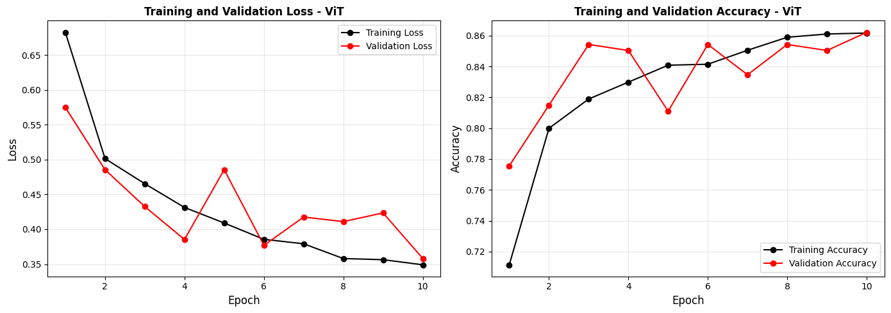
# Confusion Matrix and Classification Report - ViT (Test)
print("Computing predictions on test set...")
model_vit.eval()
ypred_test, ylabel_test = [], []
with torch.no_grad():
for images, labels in test_loader:
images = images.to(device)
outputs = model_vit(images)
_, predicted = torch.max(outputs, 1)
ypred_test.extend(predicted.cpu().numpy())
ylabel_test.extend(labels.numpy())
cm_test = confusion_matrix(ylabel_test, ypred_test)
test_accuracy = np.sum(np.array(ypred_test) == np.array(ylabel_test)) / len(ylabel_test)
print(f"Test Accuracy: {test_accuracy:.4f} ({test_accuracy*100:.2f}%)")
print("="*60)
plt.figure(figsize=(6, 6))
sns.heatmap(cm_test, annot=True, cmap="Blues",
xticklabels=class_names, yticklabels=class_names,
fmt='d', cbar_kws={'label': 'Count'})
plt.xlabel('Predicted Class', fontsize=12, fontweight='bold')
plt.ylabel('Actual Class', fontsize=12, fontweight='bold')
plt.title('Confusion Matrix - ViT (Test Set)', fontweight='bold')
plt.tight_layout()
plt.show()
print("\n" + "="*60)
print("CLASSIFICATION REPORT - ViT (Test Set)")
print("="*60)
print(classification_report(ylabel_test, ypred_test,
labels=list(range(len(class_names))),
target_names=class_names, digits=4))
print("="*60)
Computing predictions on test set...
Test Accuracy: 0.8235 (82.35%)
============================================================
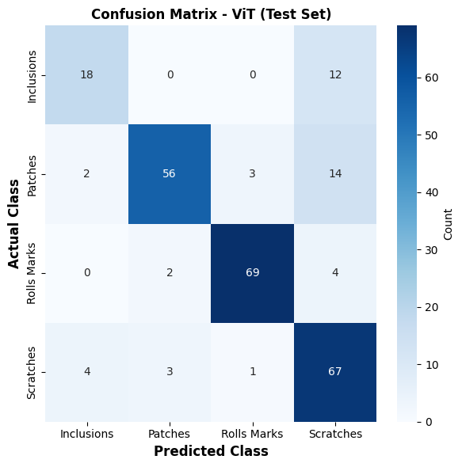
============================================================
CLASSIFICATION REPORT - ViT (Test Set)
============================================================
precision recall f1-score support
Inclusions 0.7500 0.6000 0.6667 30
Patches 0.9180 0.7467 0.8235 75
Rolls Marks 0.9452 0.9200 0.9324 75
Scratches 0.6907 0.8933 0.7791 75
accuracy 0.8235 255
macro avg 0.8260 0.7900 0.8004 255
weighted avg 0.8394 0.8235 0.8240 255
============================================================
#Model Comparison
# If yoou did not manage to run the model in your user directory, use this path to use the trained model:
storage_path = f"/projappl/project_465002387/DEEP_Inspection_Material_Science/"
from sklearn.metrics import f1_score, precision_score, recall_score
def load_checkpointed_model(model_builder, model_path, device):
checkpoint = torch.load(model_path, map_location=device)
model = model_builder().to(device)
model.load_state_dict(checkpoint["model_state_dict"])
model.eval()
return model, checkpoint
@torch.no_grad()
def evaluate_on_test(model, test_loader, device):
y_pred, y_true = [], []
for images, labels in test_loader:
images = images.to(device)
outputs = model(images)
predicted = outputs.argmax(1)
y_pred.extend(predicted.cpu().numpy())
y_true.extend(labels.numpy())
y_pred = np.array(y_pred)
y_true = np.array(y_true)
acc = (y_pred == y_true).mean()
f1 = f1_score(y_true, y_pred, average="macro", zero_division=0)
prec = precision_score(y_true, y_pred, average="macro", zero_division=0)
rec = recall_score(y_true, y_pred, average="macro", zero_division=0)
return acc, f1, prec, rec
# NEW: Count trainable parameters in millions
def count_trainable_parameters(model):
return sum(
p.numel()
for p in model.parameters()
if p.requires_grad
) / 1e6
def build_registry(class_names):
return {
"VGG16": {
"path": os.path.join(storage_path, "models", "vgg16_defect_classifier.pth"),
"builder": lambda: VGG16_Model(num_classes=len(class_names)),
},
"VGG16 (fine-tuned)": {
"path": os.path.join(storage_path, "models", "vgg16_ft_defect_classifier.pth"),
"builder": lambda: VGG16_FT_Model(num_classes=len(class_names)),
},
"ResNet50": {
"path": os.path.join(storage_path, "models", "resnet50_defect_classifier.pth"),
"builder": lambda: ResNet50_Model(num_classes=len(class_names)),
},
"GoogleLeNet": {
"path": os.path.join(storage_path, "models", "googlenet_defect_classifier.pth"),
"builder": lambda: GoogleLeNet_Model(num_classes=len(class_names)),
},
"MobileNetV2": {
"path": os.path.join(storage_path, "models", "mobilenet_defect_classifier.pth"),
"builder": lambda: MobileNet_Model(num_classes=len(class_names)),
},
"ViT-B/16": {
"path": os.path.join(storage_path, "models", "vit_defect_classifier.pth"),
"builder": lambda: ViTTransfer_Model(num_classes=len(class_names)),
},
}
results = []
for name, item in build_registry(class_names).items():
model, checkpoint = load_checkpointed_model(
item["builder"],
item["path"],
device
)
# NEW: Calculate trainable parameters
trainable_params = count_trainable_parameters(model)
acc, f1, prec, rec = evaluate_on_test(
model,
test_loader,
device
)
history = checkpoint.get("history")
training_time = checkpoint.get("training_time", np.nan)
results.append(
{
"Model": name,
# NEW
"Trainable Params (M)": trainable_params,
"Final Train Acc": history["accuracy"][-1] if history else np.nan,
"Best Val Acc": max(history["val_accuracy"]) if history else np.nan,
"Test Accuracy": acc,
"Epochs": len(history["loss"]) if history else np.nan,
"Training Time (s)": training_time,
}
)
results_df = pd.DataFrame(results).reset_index(drop=True)
print("=" * 80)
print("MODEL COMPARISON")
print("=" * 80)
with pd.option_context(
"display.float_format",
lambda x: f"{x:.4f}"
):
print(results_df.to_string(index=False))
print("=" * 80)
best_idx = results_df["Test Accuracy"].idxmax()
print(
f"Best model: {results_df.iloc[best_idx]['Model']} "
f"({results_df.iloc[best_idx]['Test Accuracy'] * 100:.2f}% test accuracy)"
)
/usr/local/lib/python3.11/dist-packages/torchvision/models/googlenet.py:341: UserWarning: auxiliary heads in the pretrained googlenet model are NOT pretrained, so make sure to train them
warnings.warn(
================================================================================
MODEL COMPARISON
================================================================================
Model Trainable Params (M) Final Train Acc Best Val Acc Test Accuracy Epochs Training Time (s)
VGG16 2.2300 0.6427 0.7283 0.7412 10 442.8146
VGG16 (fine-tuned) 9.3094 0.8596 0.8307 0.8039 10 457.0450
ResNet50 0.5256 0.7542 0.8071 0.8471 10 414.0459
GoogleLeNet 0.2634 0.6967 0.7402 0.7020 10 421.0848
MobileNetV2 0.3290 0.7418 0.7874 0.7961 10 350.2496
ViT-B/16 0.1979 0.8617 0.8622 0.8235 10 377.2766
================================================================================
Best model: ResNet50 (84.71% test accuracy)